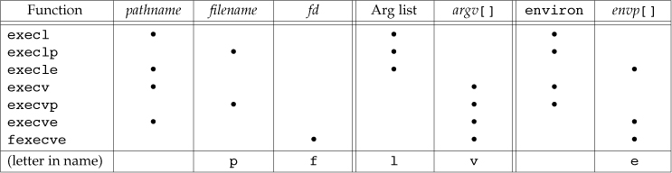
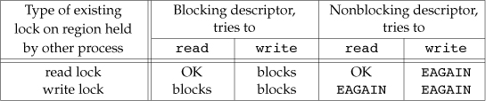
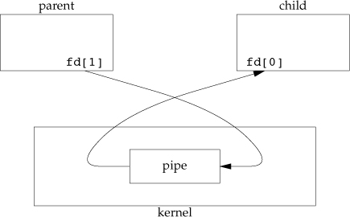
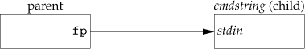
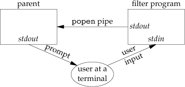
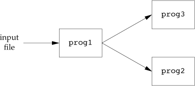
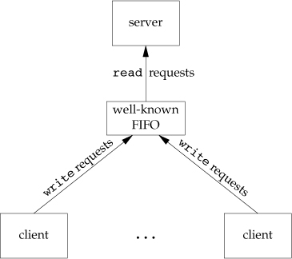

Table of Contents
- Advanced Programming in the Unix Environment
[71%]- DONE Chapter 1. UNIX System Overview
[12/12]- DONE 1.1 Introduction
- DONE 1.2 UNIX Architecture
- DONE 1.3 Logging in
- DONE 1.4 Files and Directories
- DONE 1.5 Input and Output - File Descriptors
- DONE 1.6 Programs and Processes
- DONE 1.7 Error Handling
- DONE 1.8 User identification
- DONE 1.9 Signals
- DONE 1.10 Time Values
- DONE 1.11 System calls and Library Functions
- DONE 1.12 Summary
- DONE Chapter 2. UNIX Standardization and Implementations
[10/10]- DONE 2.1 Introduction
- DONE 2.2 UNIX Standardization
- DONE 2.3 UNIX System Implementations
- DONE 2.4 Relationship of Standards and Implementations
- DONE 2.5 Limits
- DONE 2.6 Options
- DONE 2.7 Features Test Macros
- DONE 2.8 Primitive System Data Types
- DONE 2.9 Differences Between Standards
- DONE 2.10 Summary
- DONE Chapter 3. File I/O
[17/17]- DONE 3.1 Introduction
- DONE 3.2 File Descriptors
- DONE 3.3
openandopenatFunctions - DONE 3.4
creatFunction - DONE 3.5
closeFunction - DONE 3.6
lseekFunction - DONE 3.7
readFunction - DONE 3.8
writeFunction - DONE 3.9 I/O Efficiency
- DONE 3.10 File Sharing
- DONE 3.11 Atomic Operations
- DONE 3.12
dupanddup2Functions - DONE 3.13
sync,fsyncandfdatasyncFunctions - DONE 3.14
fcntlFunction - DONE 3.15
ioctlFunction - DONE 3.16
/dev/fd - DONE 3.17 Summary
- DONE Chapter 4. System Data Files and Information
[26/26]- DONE 4.1 Introduction
- DONE 4.2
stat,fstat,fstatat, andlstatFunctions - DONE 4.3 File Types
- DONE 4.4 Set-User-ID and Set-Group-ID
- DONE 4.5 File Access Permissions
- DONE 4.6 Ownership of New Files and Directories
- DONE
accessandfaccessatFunctions - DONE
umaskFunction - DONE
chmod,fchmod, andfchmodatFunctions - DONE Sticky Bit
- DONE
chown,fchown,fchownat, andlchownFunctions - DONE File Size
- DONE File Truncation
- DONE File Systems
- DONE
link,linkat,unlink,unlinkat, andremoveFunctions - DONE
renameandrenameatFunctions - DONE Symbolic Links
- DONE Creating and Reading Symbolic Links
- DONE File Times
- DONE
futimens,utimensat, andutimesFunctions - DONE
mkdir,mkdirat, andrmdirFunctions - DONE Reading Directories
- DONE
chidr,fchdirandgetcwdFunctions - DONE Device Special Files
- DONE Summary of File Access Permission Bits
- DONE Summary
- DONE Chapter 5. Standard I/O Library
[16/16]- DONE 5.1 Introduction
- DONE 5.2 Streams and FILE Objects
- DONE 5.3 Standard Input, Standard Output and Standard Error
- DONE 5.4 Buffering
- DONE 5.5 Opening a Stream
- DONE 5.6 Reading and Writing a Stream
- DONE 5.9 Line-at-a-Time I/O
- DONE 5.10 Standard I/O Efficiency
- DONE 5.11 Binary I/O
- DONE 5.12 Positioning a Stream
- DONE 5.13 Formated I/O
- DONE 5.14 Implementation Details
- DONE 5.15 Temporary Files
- DONE 5.16 Memory Streams
- DONE 5.17 Alternatives to Standard I/O
- DONE 5.18 Summary
- DONE Chapter 6. System Data Files and Information
[11/11] - DONE Chapter 7. Process Environment
[11/11]- DONE 7.1 Introduction
- DONE 7.2 main Function
- DONE 7.3 Process Termination
- DONE 7.5 Environment List
- DONE 7.6 Memory Layout of a C Program
- DONE 7.7 Shared Libraries
- DONE 7.8 Memory Allocation
- DONE 7.9 Environment Variable
- DONE 7.10
setjmpandlongjmpFunctions - DONE
getrlimitandsetrlimitFunctions - DONE Summary
- DONE Chapter 8. Process Control
[18/18]- DONE 8.1 Introduction
- DONE 8.2 Process Identifiers
- DONE 8.3
forkFunction - DONE 8.4
vforkFunction - DONE 8.5
exitFunction - DONE 8.6
waitandwaitpidFunctions - DONE 8.7
waitidFunction - DONE 8.8
wait3andwait4Functions - DONE 8.9 Race Conditions
- DONE 8.10
execFunctions - DONE 8.11 Changing User IDs and Group IDs
- DONE 8.12 Interpreter Files
- DONE 8.13
systemFunction - DONE 8.14 Process Accounting
- DONE 8.15 User Identification
- DONE 8.16 Process Scheduling
- DONE 8.17 Process Times
- DONE 8.18 Summary
- DONE Chapter 9. Process Relationships
[12/12]- DONE 9.1 Introduction
- DONE 9.2 Terminal Logins
- DONE 9.3 Network Logins
- DONE 9.4 Process Groups
- DONE 9.5 Sessions
- DONE 9.6 Controlling Terminal
- DONE 9.7
tcgetpgrp,tcsetpgrp, andtcgetsidFunctions - DONE 9.8 Job Control
- DONE 9.9 Shell Execution Programs
- DONE 9.10 Orphaned Process Groups
- DONE 9.11 FreeBSD Implementation
- DONE 9.12 Summary
- DONE Chapter 10. Signals
[23/23]- DONE 10.1 Introduction
- DONE 10.2 Signal Concepts
- DONE 10.3
signalFunction - DONE 10.4 Unreliable Signals
- DONE 10.5 Interrupted System Calls
- DONE 10.6 Reentrant Functions
- DONE 10.7
SIGCLDSemantics - DONE 10.8 Reliable-Signal Terminology and Semantics
- DONE 10.9
killandraiseFunctions - DONE 10.10
alarmandpauseFunctions - DONE 10.11 Signal Sets
- DONE 10.12
sigprocmaskFunction - DONE 10.13
sigpendingFunction - DONE 10.14
sigactionFunction - DONE 10.15
sigsetjmpandsiglongjmpFunctions - DONE 10.16
sigsuspendFunction - DONE 10.17
abortFunction - DONE 10.18
systemFunction - DONE 10.19
sleep,nanaosleep, andclock_nanosleepFunctions - DONE 10.20
sigqueueFunction - DONE 10.21 Job-Control Signals
- DONE 10.22 Signal Names and Numbers
- DONE 10.23 Summary
- DONE Chapter 11. Threads
[7/7] - DONE Chapter 12. Thread Control
[11/11] - DONE Chapter 13. Daemon Processes
[8/8] - DONE Chapter 14. Advanced I/O
[8/8] - TODO Chapter 15. Interprocess Communication
[11/12] - DONE Chapter 16. Network IPC: Sockets
[9/9] - TODO Chapter 17. Advanced IPC
[2/7] - TODO Chapter 18. Terminal I/O
[0/0] - TODO Chapter 19. Pseudo Terminals
[0/0] - TODO Chapter 20. A Database Library
[0/0] - TODO Chapter 21. Communication with a Network Printer
[0/0]
- DONE Chapter 1. UNIX System Overview
Advanced Programming in the Unix Environment [71%]
DONE Chapter 1. UNIX System Overview [12/12]
DONE 1.1 Introduction
DONE 1.2 UNIX Architecture
DONE 1.3 Logging in
- Login Name
DONE 1.4 Files and Directories
- File System
- Pathname
Example
#include <dirent.h> #include "apue.h" int main(int argc, char *argv[]) { DIR *dp; struct dirent *dirp; if (argc != 2) { err_quit("usage: ls directory_name"); } if ((dp = opendir(argv[1])) == NULL) { err_sys("can't open %ls", argv[1]); } while ((dirp = readdir(dp)) != NULL) { if (strcoll(dirp->d_name, ".") != 0 && strcoll(dirp->d_name, "..") != 0) { printf("%s\n", dirp->d_name); } } closedir(dp); return 0; }
DONE 1.5 Input and Output - File Descriptors
- Standard Input, Standard Output, and Standard Error
- Unbuffered I/O
Example
#include "apue.h" #define BUFFSIZE 4096 int main(void) { int n = 0; char buf[BUFFSIZE]; while ((n = read(STDIN_FILENO, buf, BUFFSIZE)) > 0) { if (write(STDOUT_FILENO, buf, n) != 0) { err_sys("write error"); } } if (n < 0) { err_sys("read error"); } return 0; }
- Standard I/O
Example
#include "apue.h" int main(void) { int c; while ((c = getc(stdin)) != EOF) { if (putc(c, stdout) == EOF) { err_sys("output error"); } } if (ferror(stdin)) { err_sys("input error"); } return 0; }
DONE 1.6 Programs and Processes
- Program
- Proceses and Process ID
Example
#include "apue.h" int main(int argc, char *argv[]) { printf("hello world from process ID %ld\n", (long)getpid()); return 0; }
- Process Control
Example
#include <sys/wait.h> #include "apue.h" int main(void) { char buf[MAXLINE]; /* from apue.h */ pid_t pid; int status; printf("%% "); /* print prompt (printf require %% to print %) */ while (fgets(buf, MAXLINE, stdin) != NULL) { if (buf[strlen(buf) - 1] == '\n') { buf[strlen(buf) - 1] = 0; /* replace newline with null */ } if ((pid = fork()) < 0) { err_sys("fork error"); } else if (pid == 0) { execlp(buf, buf, 0); err_ret("coulnd't excute: %s", buf); } /* parent */ if ((pid = waitpid(pid, &status, 0)) < 0) { err_sys("waitpid error"); } printf("%% "); } return 0; }
DONE 1.7 Error Handling
Example
#include <errno.h> #include "apue.h" int main(int argc, char *argv[]) { fprintf(stderr, "EACCESS: %s\n", strerror(EACCES)); errno = ENOENT; perror(argv[0]); return 0; }
DONE 1.8 User identification
- User ID
- Group ID
Example
/** * @file uidgid.c * @date 2019-12-01 * @author whiothes <whiothes81@gmail.com> * @version 1.0 * @brief print uid and gid */ #include "apue.h" int main(void) { printf("uid = %d, gid = %d\n", getuid(), getgid()); exit(EXIT_SUCCESS); }
- Supplementary Group IDs
DONE 1.9 Signals
Process choices:
- Ignore
- default action
- provide call function (catch signal)
Example
#include <sys/types.h> #include <sys/wait.h> #include "apue.h" static void sig_int(int); /* our signal-catching function */ int main(void) { char buf[MAXLINE]; /* from apue.h */ pid_t pid; int status; if (signal(SIGINT, sig_int) == SIG_ERR) err_sys("signal error"); printf("%% "); /* print prompt (printf requires %% to print %) */ while (fgets(buf, MAXLINE, stdin) != NULL) { if (buf[strlen(buf) - 1] == '\n') buf[strlen(buf) - 1] = 0; /* replace newline with null */ if ((pid = fork()) < 0) { err_sys("fork error"); } else if (pid == 0) { execlp(buf, buf, 0); err_ret("couldn't execute: %s", buf); exit(127); } } exit(0); } void sig_int(int signo) { printf("interrupt\n%% "); }
DONE 1.10 Time Values
- Calendar time.
- Process time.
- Clock time
- User CPU time
- System CPU time
DONE 1.11 System calls and Library Functions
- Concepts:
- System calls:
- Can be learned with
man 2(Section 2 of Unix Programmer's Mannual)
- Can be learned with
- Library Functions:
- Can be learned with
man 3for general-purpose (Section 3 of Unix Programmer's Mannual) - These functions arent entry points into the kernel, although they may invoke one or more of the kernels system calls
- Can be learned with
- System calls:
- Distinction:
- the system calls usually cannot be replaced
- UNIX System provides to determine the current time and date
DONE 1.12 Summary
- Exercises
- 1.1
- 1.2 53268 50922 was occupied
- 1.3 strerror: int, value transfer, can not be changed, global errno can not be forecast perror: pointer, can be changed the value point to, const set constant
- 1.4 2038, \( \frac{2^{31}}{(60*60*24*365)+1970} \) change time_t to u_64_t recompile the program
- 1.5 \( \frac{2^{31}}{(60*60*24*100)}=248.551348 \) days
DONE Chapter 2. UNIX Standardization and Implementations [10/10]
DONE 2.1 Introduction
DONE 2.2 UNIX Standardization
DONE 2.3 UNIX System Implementations
DONE 2.4 Relationship of Standards and Implementations
DONE 2.5 Limits
- Comipile-time limits
- Runtime limits
- DONE ISO C Limits
- DONE POSIX Limits
- Numerical limits:
LONG_BIT,SSIZE_MAX, andWORD_BIT - Minimum value
- Maximum value:
_POSIX_CLOCKRES_MIN - Runtime increasable values:
CHARCLASS_NAME_MAX,COLL_WEIGHTS_MAX,LINE_MAX,NGROUPS_MAX, andRE_DUP_MAX - Runtime invariant values;
- Other invariant values:
NL_ARGMAX,NL_MSGMAX,NL_SETMAX, andNL_TEXTMAX; - Pathname variables values:
FILESIZEBITS,LINK_MAX,MAX_CANON,MAX_INPUT,NAME_MAX,PATH_MAX,PIPE_BUF, andSYMLINK_MAX
- Numerical limits:
- DONE XSI Limits
- Minimum values:
- Runtime invariant values, possibly indeterminate: IOV_MAX and PAGE_SIZE
- DONE
sysconf,pathconf, andfpathconfFunctions
#!/usr/bin/awk -f BEGIN { printf("#include \"apue.h\"\n") printf("#include <errno.h>\n") printf("#include <limits.h>\n") printf("\n") printf("static void pr_sysconf(char *, int);\n") printf("static void pr_pathconf(char *, char *, int);\n") printf("\n") printf("int\n") printf("main(int argc, char *argv[])\n") printf("{\n") printf("\tif (argc != 2)\n") printf("\t\terr_quit(\"usage: a.out <dirname>\");\n\n") FS="\t+" while (getline <"sysconf.sym" > 0) { printf("#ifdef %s\n", $1) printf("\tprintf(\"%s defined to be %%ld\\n\", (long)%s+0);\n", $1, $1) printf("#else\n") printf("\tprintf(\"no symbol for %s\\n\");\n", $1) printf("#endif\n") printf("#ifdef %s\n", $2) printf("\tpr_sysconf(\"%s =\", %s);\n", $1, $2) printf("#else\n") printf("\tprintf(\"no symbol for %s\\n\");\n", $2) printf("#endif\n") } close("sysconf.sym") while (getline <"pathconf.sym" > 0) { printf("#ifdef %s\n", $1) printf("\tprintf(\"%s defined to be %%ld\\n\", (long)%s+0);\n", $1, $1) printf("#else\n") printf("\tprintf(\"no symbol for %s\\n\");\n", $1) printf("#endif\n") printf("#ifdef %s\n", $2) printf("\tpr_pathconf(\"%s =\", argv[1], %s);\n", $1, $2) printf("#else\n") printf("\tprintf(\"no symbol for %s\\n\");\n", $2) printf("#endif\n") } close("pathconf.sym") exit } END { printf("\texit(0);\n") printf("}\n\n") printf("static void\n") printf("pr_sysconf(char *mesg, int name)\n") printf("{\n") printf("\tlong val;\n\n") printf("\tfputs(mesg, stdout);\n") printf("\terrno = 0;\n") printf("\tif ((val = sysconf(name)) < 0) {\n") printf("\t\tif (errno != 0) {\n") printf("\t\t\tif (errno == EINVAL)\n") printf("\t\t\t\tfputs(\" (not supported)\\n\", stdout);\n") printf("\t\t\telse\n") printf("\t\t\t\terr_sys(\"sysconf error\");\n") printf("\t\t} else {\n") printf("\t\t\tfputs(\" (no limit)\\n\", stdout);\n") printf("\t\t}\n") printf("\t} else {\n") printf("\t\tprintf(\" %%ld\\n\", val);\n") printf("\t}\n") printf("}\n\n") printf("static void\n") printf("pr_pathconf(char *mesg, char *path, int name)\n") printf("{\n") printf("\tlong val;\n") printf("\n") printf("\tfputs(mesg, stdout);\n") printf("\terrno = 0;\n") printf("\tif ((val = pathconf(path, name)) < 0) {\n") printf("\t\tif (errno != 0) {\n") printf("\t\t\tif (errno == EINVAL)\n") printf("\t\t\t\tfputs(\" (not supported)\\n\", stdout);\n") printf("\t\t\telse\n") printf("\t\t\t\terr_sys(\"pathconf error, path = %%s\", path);\n") printf("\t\t} else {\n") printf("\t\t\tfputs(\" (no limit)\\n\", stdout);\n") printf("\t\t}\n") printf("\t} else {\n") printf("\t\tprintf(\" %%ld\\n\", val);\n") printf("\t}\n") printf("}\n") }
- DONE Indeterminate Runtime Limits
#include "apue.h" #include <errno.h> #include <limits.h> #ifdef PATH_MAX static long pathmax = PATH_MAX; #else static long pathmax = 0; #endif static long posix_version = 0; static long xsi_version = 0; /* If PATH_MAX is indeterminate, no guarantee this is adequate */ #define PATH_MAX_GUESS 1024 char * path_alloc(size_t *sizep) /* also return allocated size, if nonnull */ { char *ptr; size_t size; if (posix_version == 0) posix_version = sysconf(_SC_VERSION); if (xsi_version == 0) xsi_version = sysconf(_SC_XOPEN_VERSION); if (pathmax == 0) { /* first time through */ errno = 0; if ((pathmax = pathconf("/", _PC_PATH_MAX)) < 0) { if (errno == 0) pathmax = PATH_MAX_GUESS; /* it's indeterminate */ else err_sys("pathconf error for _PC_PATH_MAX"); } else { pathmax++; /* add one since it's relative to root */ } } /* * Before POSIX.1-2001, we aren't guaranteed that PATH_MAX includes * the terminating null byte. Same goes for XPG3. */ if ((posix_version < 200112L) && (xsi_version < 4)) size = pathmax + 1; else size = pathmax; if ((ptr = malloc(size)) == NULL) err_sys("malloc error for pathname"); if (sizep != NULL) *sizep = size; return(ptr); }
#include <errno.h> #include <limits.h> #include "apue.h" #ifdef OPEN_MAX static long openmax = OPEN_MAX; #else static long openmax = 0; #endif /* * If OPEN_MAX is indeterminate, this might be inadequate. */ #define OPEN_MAX_GUESS 256 long open_max(void) { if (openmax == 0) { /* first time through */ errno = 0; if ((openmax = sysconf(_SC_OPEN_MAX)) < 0) { if (errno == 0) openmax = OPEN_MAX_GUESS; /* it's indeterminate */ else err_sys("sysconf error for _SC_OPEN_MAX"); } } return (openmax); }
DONE 2.6 Options
- Compile-time options are defined in
<unistd.h> - Runtime options are not associated with a file or a directory are idnetified with the
sysconffunction - Runtime options that are associated with a file or a directory are discovered by calling either the
pathconfor thefpathconffunction
DONE 2.7 Features Test Macros
cc -D_POSIX_C_SOURCE=200809L code.c
DONE 2.8 Primitive System Data Types
The header <sys/types.h> defines some implementation-dependent data types, called the primitive system data types.
DONE 2.9 Differences Between Standards
DONE 2.10 Summary
- Exercises
- 2.1 #ifndef … #define … #endif
- 2.2
u_long, ushort, uint, u_quad_t, quad_t, qaddr_t, daddr_t, fixpt_t 2.3
#include <limits.h> #include <sys/resource.h> #include "apue.h" #define OPEN_MAX_GUESS 256 long open_max(void) { long openmax; struct rlimit rl; if ((openmax = sysconf(_SC_OPEN_MAX)) < 0 || openmax == LONG_MAX) { if (getrlimit(RLIMIT_NOFILE, &rl) < 0) { err_sys("can′t get file limit"); } if (rl.rlim_max == RLIM_INFINITY) openmax = OPEN_MAX_GUESS; else openmax = rl.rlim_max; } return (openmax); } int main() { printf("%ld\n", open_max()); }
DONE Chapter 3. File I/O [17/17]
DONE 3.1 Introduction
DONE 3.2 File Descriptors
To the kernel, all open file are referred to by file descriptors.
- 0: stdin
- 1: stdout
- 2: stderr
DONE 3.3 open and openat Functions
man 2 open
DONE 3.4 creat Function
man 2 creat
DONE 3.5 close Function
man 2 close
DONE 3.6 lseek Function
man 2 lseek
Example
#include "apue.h" int main(int argc, char *argv[]) { if (lseek(STDIN_FILENO, 0, SEEK_CUR) == -1) { printf("%s\n", strerror(errno)); } else { printf("seek OK\n"); } return 0; }
#include <fcntl.h> #include "apue.h" char buf1[] = "abcdefghij"; char buf2[] = "ABCDEFGHIJ"; int main(int argc, char *argv[]) { int fd; if ((fd = creat("file.hole", FILE_MODE)) < 0) { err_sys("creat error"); } if (write(fd, buf1, 10) != 10) { err_sys("buf1 write error"); } if (lseek(fd, 16384, SEEK_SET) == -1) { err_sys("lssek error: %s", strerror(errno)); } if (write(fd, buf2, 10) != 10) { err_sys("buf2 write error"); } return 0; }
DONE 3.7 read Function
man 2 read
DONE 3.8 write Function
man 2 write
DONE 3.9 I/O Efficiency
#include <fcntl.h> #include <sys/stat.h> #include "apue.h" int main(int argc, char *argv[]) { int n; char buf[BUFSIZ]; int in = open(argv[1], O_RDONLY); int out = open(argv[2], O_CREAT | O_RDWR, 0644); while ((n = read(in, buf, BUFSIZ)) > 0) { if (write(out, buf, n) != n) { err_sys("write error"); } } close(in); close(out); if (n < 0) { err_sys("read error"); } return 0; }
DONE 3.10 File Sharing
- Every process has an entry in the process table.
- The kernel maintains a file table for all open files.
- Each open file(or device) has a v-node structure that contains information about the type of file
and pointers to functions that operate on the file;
DONE 3.11 Atomic Operations
- Appending to a File
preadandpwriteFunctions Calling pread is equivalent to calling lseek followed by a call to read, with the following exceptions.- There is no way to interrupt the two operations that occur when we call pread.
- The current file offset is not updated.
- Creating a File atomic operation refers to an operation that might be composed of multiple steps
DONE 3.12 dup and dup2 Functions
man 2 dup
dup(fd)~ =fcntl(fd, F_DUPFD, 0)~dup2(fd, fd2)= = =close(fd2); fcntl(fd, F_DUPFD, fd2);
Differences:
- dup2 is an atomic operation, whereas the alternate form involves two function calls.
- errno differences
DONE 3.13 sync, fsync and fdatasync Functions
man 2 sync
DONE 3.14 fcntl Function
#include <fcntl.h> int fcntl(int fd, int cmd, ... /* int arg */); // Returns: dependos on cmd if OK (see following), -1 on error
The fcntl function is used for five different purposes.
- Duplicate an existing descriptor (cmd =
F_DUPFDorF_DUPFD_CLOEXEC) - Get/set file descriptor flags (cmd =
F_GETFDorF_SETFD) - Get/set file status flags (cmd =
F_GETFLorF_SETFL) - Get/set asynchronous I/O ownership (cmd =
F_GETOWNorF_SETOWN) - Get/set record locks (cmd =
F_GETLK,F_SETLK, orF_SETLKW) Example
#include <fcntl.h> #include "apue.h" int main(int argc, char *argv[]) { int val; if (argc != 2) { err_quit("usage: ./a.out <descriptor#"); } if ((val = fcntl(atoi(argv[1]), F_GETFL, 0)) < 0) { err_sys("fcntl error for %d: %s", atoi(argv[1]), strerror(errno)); } switch (val & O_ACCMODE) { case O_RDONLY: printf("read only"); break; case O_WRONLY: printf("write only"); break; case O_RDWR: printf("read write"); break; default: err_dump("unknown access mode"); } if (val & O_APPEND) printf(", append"); if (val & O_NONBLOCK) printf(", nonblocking"); if (val & O_SYNC) printf(", synchronous writes"); #if !defined(_POSIX_C_SOURCE) && defined(O_FSYNC) && (O_FSYNC != O_SYNC) if (val & O_FSYNC) printf(", synchronous writes"); #endif putchar('\n'); exit(0); }
#include <fcntl.h> #include "apue.h" void set_fl(int fd, int flags) /* flags are file status flags to turn on */ { int val; if ((val = fcntl(fd, F_GETFL, 0)) < 0) { err_sys("fcntl F_GETFL: %s", strerror(errno)); } val |= flags; /* turn on flags */ if (fcntl(fd, F_SETFL, val) < 0) { err_sys("fcntl F_SETFL: %s", strerror(errno)); } }
DONE 3.15 ioctl Function
man 2 ioctl
DONE 3.16 /dev/fd
DONE 3.17 Summary
- Exercises
- 3.1 All disk I/O need to via buffer block.
read/writealways be buffered via kernel automatically, unbuffered only means user process; 3.2
#include <fcntl.h> #include "apue.h" int my_dup2(int fd, int fd2) { if (fd2 > open_max()) { return -1; } /* * use lseek to verify whether fd is valid */ if (lseek(fd, 0, SEEK_CUR) < 0 && errno == EBADF) { printf("file descriptor: %d is not valid, %m\n", fd); return -1; } /* return if fd2 is fd */ if (fd == fd2) { return fd2; } close(fd2); long i = 0; for (i = 0; i < open_max(); i++) { i = dup(fd); if (i == fd2) { break; } } /* for (; i > fd; i--) { */ /* close(i); */ /* } */ return (fd2); } int main(int argc, char *argv[]) { if (argc < 2) { err_sys("usage: ./a.out <string>"); } printf("%ld\n", open_max()); my_dup2(STDERR_FILENO, 5); for (long i = 1; i < argc; ++i) { write(5, argv[i], strlen(argv[i])); write(5, "\n", 1); } close(5); return 0; }
- 3.3 F_SETFD: affect fd1 file descriptor
F_SETFL: affect fd1 and fd2 file table - 3.4 without
if (fd > 2), there are 4 descriptors pointer to file, otherwise , there will be 3 - 3.5
./a.out > outfile 2>&1: stdout> outfile, stderr => stdout => outfile =./a.out 2>&1 > outfile: stderr => stdout, stdout => outfile 3.6
#include <fcntl.h> #include "apue.h" int main(int argc, char *argv[argc]) { int fd = 0; int ret = 0; char buf[MAXLINE] = {0}; fd = open("./a.txt", O_CREAT | O_RDWR | O_APPEND); if (fd < 0) { err_sys("open: %s", strerror(errno)); } ret = write(fd, "hello world", 11); if (ret < 0) { err_sys("write: %s", strerror(errno)); } ret = lseek(fd, 0, SEEK_SET); while ((ret = read(fd, buf, MAXLINE))) { ; } if (ret == -1) { err_sys("read: %s", strerror(errno)); } printf("read: %s\n", buf); ret = lseek(fd, -18, SEEK_CUR); ret = write(fd, "hello world", 11); if (ret < 0) { err_sys("write: %s", strerror(errno)); } ret = lseek(fd, 0, SEEK_SET); while ((ret = read(fd, buf, MAXLINE)) > 0) { ; } if (ret == -1) { err_sys("read: %s", strerror(errno)); } printf("read: %s\n", buf); ret = lseek(fd, 10, SEEK_SET); while ((ret = read(fd, buf, MAXLINE)) > 0) { ; } if (ret == -1) { err_sys("read: %s", strerror(errno)); } printf("read: %s\n", buf); return 0; }
- 3.1 All disk I/O need to via buffer block.
DONE Chapter 4. System Data Files and Information [26/26]
DONE 4.1 Introduction
DONE 4.2 stat, fstat, fstatat, and lstat Functions
man 2 stat
DONE 4.3 File Types
- Regular file. There is no distinction to the UNIX kernel whether this data is text or binary.
- Directory file.
- Block special file.
- Character special file. providing unbuffered I/O access.
- FIFO.
- Socket
- Symbolic link.
Example
#include <sys/stat.h> #include "apue.h" int main(int argc, char *argv[argc]) { int i; struct stat buf; char * ptr; for (i = 1; i < argc; ++i) { printf("%s: ", argv[i]); if (lstat(argv[i], &buf) < 0) { err_ret("%s", argv[i], strerror(errno)); } if (S_ISREG(buf.st_mode)) { ptr = "regular"; } else if (S_ISLNK(buf.st_mode)) { ptr = "symbolic link"; } else if (S_ISSOCK(buf.st_mode)) { ptr = "socket"; } else if (S_ISBLK(buf.st_mode)) { ptr = "block special"; } else if (S_ISDIR(buf.st_mode)) { ptr = "directory"; } else if (S_ISCHR(buf.st_mode)) { ptr = "character special"; } else if (S_ISFIFO(buf.st_mode)) { ptr = "named pipe(fifo)"; } else { ptr = "** unknown mode **"; } printf("%s\n", ptr); } return 0; }
DONE 4.4 Set-User-ID and Set-Group-ID
| IDs | using for |
|---|---|
| real user ID | who we really are |
| real group ID | |
| effective user ID | |
| effective group ID | used for file access permission checks |
| supplementary group IDs | |
| save set-user-ID | saved by exec functions |
| save set-group-ID |
DONE 4.5 File Access Permissions
| st_mode mask | Meaning |
|---|---|
| S_IRUSR | user-read |
| S_IWUSR | user-write |
| S_IXUSR | user-execute |
| S_IRGRP | group-read |
| S_IWGRP | group-write |
| S_IXGRP | group-execute |
| S_IROTH | other-read |
| S_IWOTH | other-write |
| S_IXOTH | other-execute |
DONE 4.6 Ownership of New Files and Directories
DONE access and faccessat Functions
man 2 access
Example
#include <fcntl.h> #include "apue.h" int main(int argc, char *argv[]) { if (argc != 2) { err_quit("usage: a.out <pathname>"); } if (access(argv[1], R_OK) < 0) { err_ret("access error for %s", argv[1]); } else { printf("read access OK\n"); } int fd; if ((fd = open(argv[1], O_RDONLY)) < 0) { err_ret("open error for %s", argv[1]); } else { printf("open for reading OK\n"); close(fd); } return 0; }
DONE umask Function
man 2 umask
Example
#include <fcntl.h> #include "apue.h" #define RWRWRW (S_IRUSR | S_IWUSR | S_IRGRP | S_IWGRP | S_IROTH | S_IWOTH) int main(int argc, char *argv[argc]) { umask(0); if (creat("foo", RWRWRW) < 0) { err_sys("creat \"foo\": %s", strerror(errno)); } umask(S_IRGRP | S_IWGRP | S_IROTH | S_IWOTH); if (creat("bar", RWRWRW) < 0) { err_sys("creat \"bar\": %s", strerror(errno)); } return 0; }
DONE chmod, fchmod, and fchmodat Functions
man 2 chmod
Example
#include "apue.h" int main(int argc, char *argv[]) { struct stat statbuf; /* turn on set-group-ID and turn off group-execute */ if (stat("foo", &statbuf) < 0) { err_sys("stat error for foo"); } if (chmod("foo", (statbuf.st_mode & ~S_IXGRP) | S_ISGID) < 0) { err_sys("chmod error for foo"); } /* set absolute mode to "rw-r--r--" */ if (chmod("bar", S_IRUSR | S_IWUSR | S_IRGRP | S_IROTH) < 0) { err_sys("chmod error for bar"); } return 0; }
DONE Sticky Bit
If it was set for an executable program file, then the first time the program was executed,
a copy of the programs text was saved in the swap area when the process terminated
DONE chown, fchown, fchownat, and lchown Functions
man 2 chown
DONE File Size
struct stat.st_size
DONE File Truncation
man 2 truncate
DONE File Systems
- Only when the link count goes to 0 can the file be deleted.
struct stat.st_nlink - The other type of link is called a symbolic link. With a symbolic link, the actual contents of the filethe data blocksstore the name of the file that the symbolic link points to.
- The i-node contains all the information about the file.
Most of the information in the stat structure is obtained from the i-node, exclude filename and i-node number. - a directory entry cant refer to an i-node in a different file system.
- When renaming a file without changing file systems, the actual contents of the file need not be movedall that needs to be done is to add a new directory entry that points to the existing i-node and then unlink the old directory entry.
DONE link, linkat, unlink, unlinkat, and remove Functions
man 2 link
Example
#include <errno.h> #include <fcntl.h> #include "apue.h" int main(int argc, char *argv[]) { if (open("tempfile", O_RDWR) < 0) { err_sys("open: %s", strerror(errno)); } if (unlink("tempfile") < 0) { err_sys("unlink: %s", strerror(errno)); } printf("file unlinked\n"); sleep(15); printf("done\n"); return 0; }
DONE rename and renameat Functions
man 2 rename
- If oldname specifies a file that is not a directory, then we are renaming a file or a symbolic link.
- If oldname specifies a directory, then we are renaming a directory.
- If either oldname or newname refers to a symbolic link, then the link itself is processed, not the file to which it resolves.
- We cant rename dot or dot-dot.
- As a special case, if oldname and newname refer to the same file, the function returns successfully without changing anything.
DONE Symbolic Links
- Hard links normally require that the link and the file reside in the same file system.
- Only the superuser can create a hard link to a directory (when supported by the underlying file system).
DONE Creating and Reading Symbolic Links
man 2 symlink
man 2 readlink
DONE File Times
DONE futimens, utimensat, and utimes Functions
POSIX.1
man 2 futimens
XSI
man 2 utimes
Example
#include <fcntl.h> #include <sys/stat.h> #include "apue.h" int main(int argc, char *argv[argc]) { int i, fd; struct stat statbuf; struct timespec times[2]; for (i = 0; i < argc; ++i) { if (stat(argv[i], &statbuf) < 0) { /* fetch current times */ err_ret("%s: %s", argv[i], strerror(errno)); continue; } if ((fd = open(argv[i], O_RDWR | O_TRUNC)) < 0) { /* truncate */ err_ret("%s: %s", argv[i], strerror(errno)); continue; } times[0] = statbuf.st_atimespec; times[1] = statbuf.st_mtimespec; if (futimens(fd, times) < 0) { /* reset times */ err_ret("%s: %s", argv[i], strerror(errno)); } close(fd); } return 0; }
DONE mkdir, mkdirat, and rmdir Functions
Creat:
man 2 mkdir
Remove:
man 2 rmdir
DONE Reading Directories
man 3 opendir
DONE chidr, fchdir and getcwd Functions
man 2 chdir
Example
#include "apue.h" int main(int argc, char *argv[argc]) { if (chdir("/tmp") < 0) { perror("chdir: "); } printf("chdir to /tmp SUCCESS\n"); return 0; }
man 3 getcwd
Example
#include "apue.h" int main(int argc, char *argv[argc]) { char * ptr; size_t size; if (chdir("/usr/local") < 0) { err_sys("chdir: %s\n", strerror(errno)); } ptr = path_alloc(&size); if (getcwd(ptr, size) == NULL) { err_sys("getcwd: %s\n", ptr); } printf("cwd = %s\n", ptr); return 0; }
DONE Device Special Files
Example
#include "apue.h" #ifdef SOLARIS #include <sys/mkdev.h> #endif // SOLARIS int main(int argc, char *argv[]) { int i; struct stat buf; for (i = 0; i < argc; i++) { printf("%s: ", argv[i]); if (stat(argv[i], &buf) < 0) { err_ret("stat error"); continue; } printf("dev = %d/%d", MAJOR(buf.st_dev), MINOR(buf.st_dev)); if (S_ISCHR(buf.st_mode) || S_ISBLK(buf.st_mode)) { printf(" (%s) rdev = %d/%d", (S_ISCHR(buf.st_mode)) ? "character" : "block", major(buf.st_mode), minor(buf.st_rdev)); } printf("\n"); } return 0; }
DONE Summary of File Access Permission Bits
S_IRWXU = S_IRUSR | S_IWUSR | S_IXUSR S_IRWXG = S_IRGRP | S_IWGRP | S_IXGRP S_IRWXO = S_IROTH | S_IWOTH | S_IXOTH
DONE Summary
- Exercises
4.1
#include "apue.h" int main(int argc, char *argv[]) { int i; struct stat buf; char * ptr; for (i = 1; i < argc; i++) { printf("%s: ", argv[i]); if (stat(argv[i], &buf) < 0) { err_ret("lstat error"); continue; } if (S_ISREG(buf.st_mode)) ptr = "regular"; else if (S_ISDIR(buf.st_mode)) ptr = "directory"; else if (S_ISCHR(buf.st_mode)) ptr = "character special"; else if (S_ISBLK(buf.st_mode)) ptr = "block special"; else if (S_ISFIFO(buf.st_mode)) ptr = "fifo"; else if (S_ISLNK(buf.st_mode)) ptr = "symbolic link"; else if (S_ISSOCK(buf.st_mode)) ptr = "socket"; else ptr = "** unknown mode **"; printf("%s\n", ptr); } exit(0); }
before modification: symbolic link after modification: regular
- 4.2 default permissions:
---------- - 4.3
catget : Permission denied - 4.4 nothing changed.
- 4.5 directory always shoud be entries for . and .. the size of symbolic link should be the size of the file contained in.
4.6
#include <fcntl.h> #include "apue.h" int main(int argc, char *argv[]) { int in, out; char buf[BUFSIZ]; struct stat stbuf = {0}; size_t l_size; if (stat("src.txt", &stbuf) < 0) { err_sys("stat: %s", strerror(errno)); } l_size = stbuf.st_size; if ((in = open("src.txt", O_RDONLY)) < 0 || (out = open("dst.txt", O_CREAT | O_RDWR, FILE_MODE)) < 0) { err_sys("open: %s", strerror(errno)); } size_t l_sum = 0; size_t l_cur = 0; while ((l_cur = read(in, buf, BUFSIZ)) > 0) { l_sum += l_cur; if (write(out, buf, l_cur) != l_cur) { err_sys("write: %s", strerror(errno)); } } close(in); close(out); return 0; }
- 4.7 default access permissions are different
- 4.8
ducheck the file/directory/path space instead of disk , and may need path permissions. - 4.9 it's not the last link to the file.
- 4.10 recursive depth number
4.11
#include <dirent.h> #include <errno.h> #include <limits.h> #include "apue.h" /* function type that is called for each filename */ typedef int Myfunc(const char *fpath, const struct stat *sb, int typeflag); static Myfunc myfunc; static int myftw(const char *dirpath, Myfunc *func); static int dopath(const char *dirname, Myfunc *func); static long nreg, ndir, nblk, nchr, nfifo, nslink, nsock, ntot; int main(int argc, char *argv[]) { int ret; if (argc != 2) { err_quit("usage: %s <starting-pathname>", argv[0]); } ret = myftw(argv[1], myfunc); ntot = nreg + ndir + nblk + nchr + nfifo + nslink + nsock; if (ntot == 0) { ntot = 1; } printf("regular files = %7ld, %5.2f %%\n", nreg, nreg * 100.0 / ntot); printf("directories = %7ld, %5.2f %%\n", ndir, ndir * 100.0 / ntot); printf("block special = %7ld, %5.2f %%\n", nblk, nblk * 100.0 / ntot); printf("char special = %7ld, %5.2f %%\n", nchr, nchr * 100.0 / ntot); printf("FIFOs = %7ld, %5.2f %%\n", nfifo, nfifo * 100.0 / ntot); printf("symbolic links = %7ld, %5.2f %%\n", nslink, nslink * 100.0 / ntot); printf("sockets = %7ld, %5.2f %%\n", nsock, nsock * 100.0 / ntot); return 0; } /* * Descend through the hierarchy, starting at "pathname". * The caller's func() is called for every file. */ #define FTW_F 1 /* file other than directory */ #define FTW_D 2 /* directory */ #define FTW_DNR 3 /* dirctory that cant'be read */ #define FTW_NS 4 /* file that we can't stat */ static size_t pathlen; static int myftw(const char *pathname, Myfunc *func) { char *fullpath = path_alloc(&pathlen); /* malloc PATH_MAX+1 bytes */ if (pathlen <= strlen(pathname)) { pathlen = strlen(pathname) * 2; if ((fullpath = realloc(fullpath, pathlen)) == NULL) { err_sys("realloc %s", strerror(errno)); } } return (dopath(pathname, func)); } /* * Descend through the hierarchy, starting at "fullpath". * If "fullpath" is anything other than a directory, we lstat() it, * call func(), and return. For a directory, we call ourself * recursively for each name in the directory. */ /* we return whatever func() returns */ static int dopath(const char *pathname, Myfunc *func) { struct stat statbuf; struct dirent *dirp; DIR * dp; int ret, n; size_t l = 0; char * cwd = path_alloc(&l); chdir(pathname); getcwd(cwd, l); #ifdef DEBUG printf("%s\n", cwd); #endif if ((dp = opendir(".")) == NULL) { /* can't read directory */ return (func(pathname, &statbuf, FTW_DNR)); } while ((dirp = readdir(dp)) != NULL) { if ((strcmp(dirp->d_name, ".") == 0) || (strcmp(dirp->d_name, "..") == 0)) { continue; /* ignore dot and dot-dot */ } if (lstat(dirp->d_name, &statbuf) < 0) { /* stat error */ func(dirp->d_name, &statbuf, FTW_NS); } if (S_ISDIR(statbuf.st_mode) == 0) { /* not a directory */ func(dirp->d_name, &statbuf, FTW_F); } else { func(dirp->d_name, &statbuf, FTW_D); /* chdir(dirp->d_name); */ if ((ret = dopath(dirp->d_name, func)) != 0) { break; } /* chdir(".."); */ getcwd(cwd, l); } } if (closedir(dp) < 0) { err_ret("%s: %s", cwd, strerror(errno)); } return (ret); } static int myfunc(const char *pathname, const struct stat *statptr, int type) { switch (type) { case FTW_F: switch (statptr->st_mode & S_IFMT) { case S_IFREG: nreg++; break; case S_IFBLK: nblk++; break; case S_IFCHR: nchr++; break; case S_IFIFO: nfifo++; break; case S_IFLNK: nslink++; break; case S_IFSOCK: nsock++; break; case S_IFDIR: err_dump("for S_IFDIR for %s", pathname); default: break; } break; case FTW_D: ndir++; break; case FTW_DNR: err_dump("%s: %s", pathname, strerror(errno)); break; case FTW_NS: err_dump("stat error for %s", pathname); break; default: err_dump("unknown type %d for pathname %s", type, pathname); } return (0); }
- 4.12 FTP
- 4.13
statfirst, set timespec array to current time that you expect not change, and the other to the value you want. - 4.14 access time is the last read time
modify time is last received - 4.15 The change time isn't stored because, even if it was stored, you wouldn't be able to set it to the original time. You cannot cheat the change time, it is always based on when the inode data was actually changed.
Depending on the utility (tar or cpio), you can tell it to keep the original access and/or modify times. For example, tar by default maintains the original modify time but you can use the -m switch to set it to extraction time. The access time is always set to extraction time. 4.16
#include <fcntl.h> #include "apue.h" int main(int argc, char *argv[argc]) { const char *dirname = "testdir"; size_t pathmax = pathconf(".", _PC_PATH_MAX); printf("pathmax: %ld\n", pathmax); char path[pathmax]; size_t curlen; strcpy(path, dirname); for (;;) { curlen = strlen(getcwd(path, pathmax)) + strlen(dirname); if (curlen <= pathmax) { if (mkdir(dirname, 0777) < 0) { printf("mkdir: %s\n", strerror(errno)); return -1; } sprintf(path, "/%s", dirname); chdir(dirname); } else { break; } } printf("curlen = %ld\n", curlen); return 0; }
4.17
#include <fcntl.h> #include "apue.h" int main(int argc, char *argv[argc]) { char *path = "/dev/fd/1"; int fd; int ret; if ((ret = unlink(path)) < 0) { err_quit("unlink: %s\n", strerror(errno)); } if ((fd = creat(path, FILE_MODE)) < 0) { err_quit("creat: %s\n", strerror(errno)); } return 0; }
unlink: Operation not permitted
DONE Chapter 5. Standard I/O Library [16/16]
DONE 5.1 Introduction
This library is specified by the ISO C standard because it has been implemented on many operating systems other than the UNIX System.
DONE 5.2 Streams and FILE Objects
man 3 fwide
DONE 5.3 Standard Input, Standard Output and Standard Error
STDIN_FILENO, STDOUT_FILENO, STDERR_FILENO
DONE 5.4 Buffering
Three types of buffering are provided:
- Fully buffered.
In this case, actual I/O takes place when the standard I/O buffer is filled. - Line buffered.
In this case, the standard I/O library performs I/O when a newline character is encountered on input or output. - Unbuffered.
ISO C requires the following buffering characteristics:
- Standard input and standard output are fully buffered, if and only if they do not refer to an interactive device.
- Standard error is never fully buffered.
Most implementations default to the following types of buffering:
- Standard error is always unbuffered.
- All other streams are line buffered if they refer to a terminal device; otherwise, they are fully buffered.
man 3 setbuf
man 3 fflush
DONE 5.5 Opening a Stream
man 3 fopen
man 3 fclose
DONE 5.6 Reading and Writing a Stream
Three types of unformatted I/O:
- Character-at-a-time I/O.
- Line-at-a-time I/O.
- Direct I/O.
5.7 ** DONE Input Functions
man 3 getc
- The argument to getc should not be an expression with side effects, because it could be evaluated more than once.
- Since fgetc is guaranteed to be a function, we can take its address. This allows us to pass the address of fgetc as an argument to another function.
- Calls to fgetc probably take longer than calls to getc, as it usually takes more time to call a function.
In most implementations, two flags are maintained for each stream in the FILE object:
man 3 ferror
- An error flag
- An end-of file flagp
After reading from a stream, we can push back characters by calling ungetc.
5.8 ** DONE Output Functions
man 3 putc
DONE 5.9 Line-at-a-Time I/O
man fgets
DONE 5.10 Standard I/O Efficiency
#include "apue.h" int main(void) { int c; while ((c = getc(stdin)) != EOF) { if (putc(c, stdout) == EOF) err_sys("output error: %s", strerror(errno)); } if (ferror(stdin)) err_sys("input error: %s", strerror(errno)); return 0; }
#include "apue.h" int main(int argc, char *argv[argc]) { char buf[MAXLINE]; while (fgets(buf, MAXLINE, stdin) != NULL) if (fputs(buf, stdout) == EOF) err_sys("output error"); if (ferror(stdin)) err_sys("input error: %s", strerror(errno)); return 0; }
DONE 5.11 Binary I/O
man fread
DONE 5.12 Positioning a Stream
Three way to position a standard I/O stream:
ftellandfseekftelloandfseekofgetposandfsetpos
When porting applications to non-UNIX systems, use fgetpos and fsetpos.
#include <stdio.h> int fgetpos(FILE *restrict stream, fpos_t *restrict pos); int fseek(FILE *stream, long offset, int whence); int fseeko(FILE *stream, off_t offset, int whence); int fsetpos(FILE *stream, const fpos_t *pos); long ftell(FILE *stream); off_t ftello(FILE *stream); void rewind(FILE *stream);
DONE 5.13 Formated I/O
man 3 printf
| Flag | Description |
|---|---|
| ' | (apostrophe) format integer with thousands grouping characters |
| - | left justify |
| + | always display sign of a signed conversion |
| (space) | prefix by a space if no sign is generated |
| \# | convert using alternative form(include 0x prefix for hexadecimal format, for example) |
| 0 | prefix with leading zeros instead of padding with spaces |
| Length modifer | Description |
|---|---|
| hh | signed or unsigned char |
| h | sigend or unsigned short |
| l | signed or unsigned long or wide character |
| ll | signed or unsigned long long |
| j | inmax_t or uintmax_t |
| z | size_t |
| t | ptrdiff_t |
| L | long double |
| Conversion type | Description |
|---|---|
| d,i | signed decimal |
| o | unsigned octal |
| u | unsigned decimal |
| x,X | unsigned hexadecimal |
| f,F | double floating-point number |
| e,E | double floating-point number in exponential format |
| g,G | interpreted as f, F, e, or E, depending on value converted |
| a,A | double floating-point number in hexadecimal exponential format |
| c | character (with 1 length modifier, wide character) |
| s | string(with 1 length modifier, wide character string) |
| p | pointer to a void |
| n | pointer to a signed integer into which is written the number of characters written so far |
| % | a % character |
| C | wide chracter(XSI option, equivalent to lc) |
| S | wide chracter string(XSI option, equivalent to ls) |
Formatted Input
man 3 scanf
| Conversion type | Description |
|---|---|
| d | signed decimal, base 10 |
| i | signed decimal, base determined by format of input |
| o | unsigned octal(input optionally signed) |
| u | unsigned decimal, base 10(input optionally signed) |
| x,X | unsigned hexadecimal(input optionally signed) |
| a,A,e,E,f,F,g,G | floating-point number |
| c | character (with 1 length modifier, wide character) |
| s | string(with 1 length modifier, wide character string) |
| [ | mathches a sequence of listed characters, ending with ] |
| [^ | mathches all characters except the ones listed, ending with ] |
| p | pointer to a void |
| n | pointer to a signed integer into which is written the number of characters written so far |
| % | a % character |
| C | wide chracter(XSI option, equivalent to lc) |
| S | wide chracter string(XSI option, equivalent to ls) |
*
DONE 5.14 Implementation Details
man 3 fileno
Example
#include "apue.h" void pr_stdio(const char *, FILE *); int is_unbuffered(FILE *); int is_linebuffered(FILE *); int buffer_size(FILE *); int main(void) { FILE *fp; fputs("enter any character\n", stdout); if (getchar() == EOF) { err_sys("getchar: %s\n", strerror(errno)); } fputs("one line to standard error\n", stderr); pr_stdio("stdin", stdin); pr_stdio("stdout", stdout); pr_stdio("stderr", stderr); if ((fp = fopen("/etc/passwd", "r")) == NULL) err_sys("fopen: %s\n", strerror(errno)); if (getc(fp) == EOF) err_sys("getc: %s\n", strerror(errno)); exit(0); } void pr_stdio(const char *name, FILE *fp) { printf("stream = %s, ", name); if (is_unbuffered(fp)) printf("unbuffered"); else if (is_linebuffered(fp)) printf("line buffered"); else /* if neither or above */ printf("fully buffered"); printf(", buffer size = %d\n", buffer_size(fp)); } /* * The following is nonportable */ #if defined(_IO_UNBUFFERED) int is_unbuffered(FILE *fp) { return (fp->flags & _IO_UNBUFFERED); } int is_linebuffered(FILE *fp) { return (fp->flags & _IO_LINE_BUF); } int buffer_size(FILE *fp) { return (fp->_IO_buf_end - fp->_IO_buf_base); } #elif defined(__SNBF) int is_unbuffered(FILE *fp) { return (fp->_flags & __SNBF); } int is_linebuffered(FILE *fp) { return (fp->_flags & __SLBF); } int buffer_size(FILE *fp) { return (fp->_bf._size); } #elif defined(_IONBF) #ifdef _LP64 #define _flag __pad[4] #define _ptr __pad[1] #define _base __pad[2] #endif int is_unbuffered(FILE *fp) { return (fp->_flag & _IONBF); } int is_linebuffered(FILE *fp) { return (fp->_flag & _IOLBF); } int buffer_size(FILE *fp) { #ifdef _LP64 return (fp->_base - fp->_ptr); #else return (BUFSIZ); /* just a guess */ #endif } #else #error unknown stdio implementation; #endif
DONE 5.15 Temporary Files
man 3 tmpnam
Example
#include "apue.h" int main(void) { char name[L_tmpnam], line[MAXLINE]; FILE *fp; printf("%s\n", tmpnam(NULL)); /* first temp name */ tmpnam(name); /* second temp name */ printf("%s\n", name); if ((fp = tmpfile()) == NULL) /* create temp file */ err_sys("tmpfile: %s\n", strerror(errno)); fputs("one line of output\n", fp); /* write to temp file */ rewind(fp); if (fgets(line, sizeof(line), fp) == NULL) err_sys("fgets: %s\n", strerror(errno)); fputs(line, stdout); return 0; }
man 3 mkdtemp
Example
#include "apue.h" void make_temp(char *template); int main(int argc, char *argv[argc]) { char good_template[] = "/tmp/dirXXXX"; /* right way */ char *bad_template = "/tmp/dir/XXXX"; /* bad way */ printf("trying to create first temp file ...\n"); make_temp(good_template); printf("trying to create second temp file ...\n"); make_temp(bad_template); return 0; } void make_temp(char *template) { int fd; struct stat sbuf; if ((fd = mkstemp(template)) < 0) err_sys("create temp: %s\n", strerror(errno)); printf("temp name = %s\n", template); close(fd); if (stat(template, &sbuf) < 0) { err_sys("stat: %s\n", strerror(errno)); } else { printf("file exists\n"); unlink(template); } }
DONE 5.16 Memory Streams
man 3 fmemopen
Example
#include "apue.h" #define BSZ 48 int main() { FILE *fp; char buf[BSZ]; memset(buf, 'a', BSZ - 2); buf[BSZ - 2] = '\0'; buf[BSZ - 1] = 'X'; if ((fp = fmemopen(buf, BSZ, "w+")) == NULL) err_sys("fmemopen failed"); printf("initial buffer contents: %s\n", buf); fprintf(fp, "hello, world"); printf("before flush: %s\n", buf); fflush(fp); printf("after fflush: %s\n", buf); printf("len of string in buf = %ld\n", (long)strlen(buf)); memset(buf, 'b', BSZ - 2); buf[BSZ - 2] = '\0'; buf[BSZ - 1] = 'X'; fprintf(fp, "hello, world"); fseek(fp, 0, SEEK_SET); printf("after fseek: %s\n", buf); printf("len of string in buf = %ld\n", (long)strlen(buf)); memset(buf, 'c', BSZ - 2); buf[BSZ - 2] = '\0'; buf[BSZ - 1] = 'X'; fprintf(fp, "hello, world"); fclose(fp); printf("after fclose: %s\n", buf); printf("len of string in buf = %ld\n", (long)strlen(buf)); return (0); }
linux result:
initial buffer contents:
before flush:
after fflush: hello, world
len of string in buf = 12
after fseek: hello, world
len of string in buf = 24
after fclose: hello, world
len of string in buf = 46
The other two functions:
man open_memstream
DONE 5.17 Alternatives to Standard I/O
The standard I/O library is not perfect. some in the basic design, but most in the various implementations.
DONE 5.18 Summary
- Exercises
3.1
#include "apue.h" void setbuf_(FILE *restrict stream, char *restrict buf) { if (stream == NULL) { setvbuf(stream, buf, _IONBF, BUFSIZ); } else if (isatty(fileno(stream))) { setvbuf(stream, buf, _IOLBF, BUFSIZ); } else { setvbuf(stream, buf, _IOFBF, BUFSIZ); } } int is_unbuffered(FILE *fp) { return (fp->_flags & __SNBF); } int is_linebuffered(FILE *fp) { return (fp->_flags & __SLBF); } int buffer_size(FILE *fp) { return (fp->_bf._size); } void pr_stdio(const char *name, FILE *fp) { printf("stream = %s, ", name); if (is_unbuffered(fp)) printf("unbuffered"); else if (is_linebuffered(fp)) printf("line buffered"); else /* if neither or above */ printf("fully buffered"); printf(", buffer size = %d\n", buffer_size(fp)); } int main(int argc, char *argv[]) { FILE *fp; char buf[BUFSIZ]; if (argc < 2) { err_quit("usage: ./a.out <path>"); } fp = fopen(argv[1], "r+"); pr_stdio(argv[1], fp); setbuf_(fp, buf); pr_stdio(argv[1], fp); fclose(fp); }
3.2
#include "apue.h" #ifdef MAXLINE #undef MAXLINE #define MAXLINE 4 #endif int main(int argc, char *argv[argc]) { char buf[MAXLINE]; int i = 0; printf("MAXLINE: %d\n", MAXLINE); while (fgets(buf, MAXLINE, stdin) != NULL) { if (fputs(buf, stdout) == EOF) err_sys("output error"); ++i; } int nums = printf("loop_time: %d\n", i); printf("nums: %d\n", nums); if (ferror(stdin)) err_sys("input error: %s", strerror(errno)); return 0; }
execute
fgetsandfputsmore than 1 times;- 3.3 print nothing
- 3.4 This is a common error. The return value from getc and getchar is an int, not a char. EOF is often defined to be 1, so if the system uses signed characters, the code normally works
- 3.5 call
fflushfirst - 3.6 stdin and stdout are both line buffered. fgets will fflush automatically
3.7
#include <errno.h> #include <stdio.h> #include <stdlib.h> #include <string.h> struct memstream { char * buf; /* in-memory buffer */ size_t rsize; /* real size of buffer */ size_t vsize; /* virtual size of buffer */ size_t curpos; /* current position in buffer */ int flags; /* see below */ }; /* flags */ #define MS_READ 0x01 /* open for reading */ #define MS_WRITE 0x02 /* open for writing */ #define MS_APPEND 0x04 /* append to stream */ #define MS_TRUNCAT 0x08 /* truncate the stream on open */ #define MS_MYBUF 0x10 /* free buffer on close */ #ifndef MIN #define MIN(a, b) ((a) < (b) ? (a) : (b)) #endif static int mstream_read(void *, char *, int); static int mstream_write(void *, const char *, int); static fpos_t mstream_seek(void *, fpos_t, int); static int mstream_close(void *); static int type_to_flags(const char *__restrict type); static off_t find_end(char *buf, size_t len); FILE *fmemopen(void *__restrict buf, size_t size, const char *__restrict type) { struct memstream *ms; FILE * fp; if (size == 0) { errno = EINVAL; return NULL; } if ((ms = malloc(sizeof(struct memstream))) == NULL) { errno = ENOMEM; return NULL; } if ((ms->flags = type_to_flags(type)) == 0) { errno = EINVAL; free(ms); return NULL; } if (buf == NULL) { if ((ms->flags & (MS_READ | MS_WRITE)) != (MS_READ | MS_WRITE)) { errno = EINVAL; free(ms); return NULL; } if ((ms->buf = malloc(size)) == NULL) { errno = ENOMEM; free(ms); return NULL; } ms->rsize = size; ms->flags |= MS_MYBUF; ms->curpos = 0; } else { ms->buf = buf; ms->rsize = size; if (ms->flags & MS_APPEND) { ms->curpos = find_end(ms->buf, ms->rsize); } else { ms->curpos = 0; } } if (ms->flags & MS_APPEND) { ms->vsize = ms->curpos; } else if (ms->flags & MS_TRUNCAT) { ms->vsize = 0; } else { ms->vsize = size; } fp = funopen(ms, mstream_read, mstream_write, mstream_seek, mstream_close); if (fp == NULL) { if (ms->flags & MS_MYBUF) { free(ms->buf); } } return fp; } static int type_to_flags(const char *__restrict type) { const char *cp; int flags = 0; for (cp = type; *cp != 0; cp++) { switch (*cp) { case 'r': if (flags != 0) return 0; flags |= MS_READ; break; case 'w': if (flags != 0) return 0; flags |= MS_WRITE | MS_TRUNCAT; break; case 'a': if (flags != 0) return 0; flags |= MS_APPEND; break; case '+': if (flags == 0) return 0; flags |= MS_READ | MS_WRITE; break; case 'b': if (flags == 0) return 0; break; default: return 0; } } return flags; } static off_t find_end(char *buf, size_t len) { off_t off = 0; while (off < len) { if (buf[off] == 0) break; off++; } return off; } static int mstream_read(void *cookie, char *buf, int len) { int nr; struct memstream *ms = cookie; if (!(ms->flags & MS_READ)) { errno = EBADF; return -1; } if (ms->curpos >= ms->vsize) { return 0; } nr = MIN(len, ms->vsize - ms->curpos); memcpy(buf, ms->buf + ms->curpos, nr); ms->curpos += nr; return nr; } static int mstream_write(void *cookie, const char *buf, int len) { int nw, off; struct memstream *ms = cookie; if (!(ms->flags & (MS_APPEND | MS_WRITE))) { errno = EBADF; return -1; } if (ms->flags & MS_APPEND) { off = ms->vsize; } else { off = ms->curpos; } nw = MIN(len, ms->rsize - off); memcpy(ms->buf + off, buf, nw); ms->curpos = off + nw; if (ms->curpos > ms->vsize) { ms->vsize = ms->curpos; if (((ms->flags & (MS_READ | MS_WRITE)) == (MS_READ | MS_WRITE)) && ms->vsize < ms->rsize) { *(ms->buf + ms->vsize) = 0; } } if ((ms->flags & (MS_WRITE | MS_APPEND)) && !(ms->flags & MS_READ)) { if (ms->curpos < ms->rsize) { *(ms->buf + ms->curpos) = 0; } else { *(ms->buf + ms->rsize - 1) = 0; } } return nw; } static fpos_t mstream_seek(void *cookie, fpos_t pos, int whence) { int off; struct memstream *ms = cookie; switch (whence) { case SEEK_SET: off = pos; break; case SEEK_END: off = ms->vsize + pos; break; case SEEK_CUR: off = ms->curpos + pos; break; } if (off < 0 || off > ms->vsize) { errno = EINVAL; return -1; } ms->curpos = off; return off; } static int mstream_close(void *cookie) { struct memstream *ms = cookie; if (ms->flags & MS_MYBUF) free(ms->buf); free(ms); return 0; }
DONE Chapter 6. System Data Files and Information [11/11]
DONE 6.1 introduction
DONE 6.2 Password File
man getpwuid
DONE 6.3 Shadow Passwords
On Linux 3.2.0 and Solaris 10,
man getspnam
On FreeBSD 8.0 and Mac OS X 10.6.8, there is no shadow password structure
DONE 6.4 Group File
man getgrgid
DONE 6.5 Supplementary Group Ids
man getgroups
Example
#include <grp.h> #include <stdio.h> #include <unistd.h> #include <uuid/uuid.h> int main() { int grpmax = sysconf(_SC_NGROUPS_MAX); gid_t grouplist[grpmax]; struct group *grp = NULL; getgroups(grpmax, grouplist); for (int i = 0; i < grpmax; ++i) { grp = getgrgid(grouplist[i]); printf("%d\t%s\n", grouplist[i], grp->gr_name); } }
DONE 6.6 Implementation Differences
DONE 6.7 Other Data Files
at least three functions:
- A get function that reads the next record, opening the file if necessary.
- A set function that opens the file, if not already open, and rewinds the file.
- An end entry that closes the data file.
DONE 6.8 Login Accounting
struct utmp { char ut_line[8]; /* tty line: "ttyh0", "ttyd0", "ttyp0", ... */ char ut_name[8]; /* login name */ long ut_time; /* seconds since Epoch */ };
login: filled in and written to te utmp file, and appended to the wtmp file by the login program. logout: utmp file was filled with null bytes by the init process, and a new entry was appended to the wtmp file.
who reads utmp file
last reads wtmp file
DONE 6.9 System Identification
information on the current host and operating system.
#include <sys/utsname.h> int uname(struct utsname *name); // Returns: non-negative value if OK, -1 on error
network hostname:
#include <unistd.h> int gethostname(char *name, int namelen); // Returns: 0 if OK, -1 on error
DONE 6.10 Time and Date Routines
man 3 time
man 3 clock_gettime
man 3 gmtime
man 3 strftime
Example
#include <stdio.h> #include <stdlib.h> #include <time.h> int main(void) { time_t t; struct tm *tmp; char buf1[16]; char buf2[64]; time(&t); tmp = localtime(&t); if (strftime(buf1, 16, "time and date: %r, %a %b %d, %Y", tmp) == 0) { printf("buffer length 16 is too small\n"); } else { printf("%s\n", buf1); } if (strftime(buf2, 64, "time and date: %r, %a %b %d, %Y", tmp) == 0) { printf("buffer length 64 is too small\n"); } else { printf("%s\n", buf2); } return 0; }
man 3 strptim
DONE 6.11 Summary
- Exercises
- 6.1 On Mac OS, I can't get it
On Linux, usegetsnamgroup functions 6.2
#include <shadow.h> #include <stdio.h> int main() { struct spwd *ptr; ptr = getspent(); printf("password: %s\n", ptr->sp_pwdp); }
6.3
#include <stdio.h> #include <sys/utsname.h> int main() { struct utsname name; uname(&name); printf("%s %s %s %s %s \n", name.sysname, name.nodename, name.release, name.version, name.machine); }- 6.4 32-bit time:
1970 + (2^{31}/60/60/24/365)
after pass :1970 - (2^{31}/60/60/24/365) 6.5
#include <time.h> #include "apue.h" int main(void) { char tbuf[64]; time_t t; time(&t); strftime(tbuf, sizeof(tbuf), "%a %b %d %T %Z %Y", localtime(&t)); printf("%s\n", tbuf); setenv("TZ", "dkladjlkjklasdj", 1); strftime(tbuf, sizeof(tbuf), "%a %b %d %T %Z %Y", localtime(&t)); printf("%s\n", tbuf); return 0; }
- 6.1 On Mac OS, I can't get it
DONE Chapter 7. Process Environment [11/11]
DONE 7.1 Introduction
DONE 7.2 main Function
int main(int argc, char *argv[]);
DONE 7.3 Process Termination
There are eight ways for a process to terminate. Normal termination occurs in five ways:
- Return from main
- Calling
exit - Calling
_exitor_Exit - Return of the last thread from its start routine (Section 11.5)
- Calling pthread_exit (Section 11.5) from the last thread
Abnormal termination occurs in three ways
- Calling abort
- Receipt of a signal
- Response of the last thread to a cancellation request
- DONE Exit Functions
man 3 exitman 2 _exit#include <stdio.h> void exit(int status); // 1. call the functions registered with atexit(3) function, in the reverse order of their registration // 2. Flush all open output streams // 3. close all open streams // 4. unlink all files created with the tmpfile functions void _Exit(int status); // terminates without calling functions registered with atexit(3), // may or my not perform the other actions listed #include <unistd.h> void _exit(int status); // The _exit() function terminates a process, with the following consequences: // o All of the descriptors that were open in the calling process are closed. This may entail delays; for example, waiting for output to drain. A process in this state may not be // killed, as it is already dying. // // o If the parent process of the calling process has an outstanding wait call or catches the SIGCHLD signal, it is notified of the calling process's termination; the status is set as // defined by wait(2). // // o The parent process-ID of all of the calling process's existing child processes are set to 1; the initialization process (see the DEFINITIONS section of intro(2)) inherits each of // these processes. // // o If the termination of the process causes any process group to become orphaned (usually because the parents of all members of the group have now exited; see ``orphaned process // group'' in intro(2)), and if any member of the orphaned group is stopped, the SIGHUP signal and the SIGCONT signal are sent to all members of the newly-orphaned process group. // // o If the process is a controlling process (see intro(2)), the SIGHUP signal is sent to the foreground process group of the controlling terminal. All current access to the control- // ling terminal is revoked.
_exitdoes not perform any flushing of standard I/O buffers.Example
#include <stdio.h> int main(int argc, char* argv[]) { printf("hello world\n"); return 0; }
- DONE
atexitFunction
man 3 atexitTheexitfunction calls these functions in reverse order of their registration.Example
#include <errno.h> #include "apue.h" static void my_exit1(void); static void my_exit2(void); int main(void) { if (atexit(my_exit2) != 0) { err_sys("can't register my_exit2: %s\n", strerror(errno)); } if (atexit(my_exit1) != 0) { err_sys("can't register my_exit1: %s\n", strerror(errno)); } if (atexit(my_exit1) != 0) { err_sys("can't register my_exit1: %s\n", strerror(errno)); } printf("main is done\n"); return 0; } static void my_exit1(void) { printf("first exit handler \n"); } static void my_exit2(void) { printf("second exit handler\n"); }
- DONE Commond-Line Arguments
Example
#include "apue.h" int main(int argc, char *argv[]) { int i; for (i = 0; i < argc; ++i) { /* echo all command-line args */ printf("argv[%d]: %s\n", i, argv[i]); } return 0; }
DONE 7.5 Environment List
extern char **environ;
DONE 7.6 Memory Layout of a C Program

Historically, a C program has been composed of the following pieces:
- Text segment: consisting of the machine instructions that the CPU executes.
Initilized data segment, usually called simply the data segment,
containing variables that are specifically initialized in the program.
For example:int maxcount=99;
Uninitilized data segment, often called the bss segment,
named after an ancient assembler operator that stood for block started by symbol.long sum[1024];
- Stack, where automatic variables are stored,
along with information that is saved each time a function is called. Heap, where dynamic memory allocation usually takes place.
malloc();
DONE 7.7 Shared Libraries
without shared libraries
gcc -static hello.c size a.out text data bss dec hex filename 723103 7284 6392 736779 b3e0b a.out
use shared libraries, the text and data size are greatly decreased
gcc hello.c size a.out text data bss dec hex filename 1173 552 8 1733 6c5 a.out
DONE 7.8 Memory Allocation
man 3 malloc
malloc, allocates specified number of bytes of memory without initializedcalloc, allocates specified number of bytes of memroy with initializing to 0realloc, increase or decrease the size of previous allocated area, the increased area was not initialized
#include <stdlib.h> void *malloc(size_t size); void *calloc(size_t nobj, size_t size); void *realloc(void *ptr, size_t newsize); void free(void*ptr);
- Alternative Memory Allocators
jemalloc
designed to scale well when used with multithreaded applications running on multiprocessor systems.TCMalloc
for high performance, scalability, and memory efficiency.allocaFunction
alloc memmory from stack, instaead of heap, so we don't have to free the space;
DONE 7.9 Environment Variable
man 3 getenv
#include <stdlib.h> char *getenv(const char *name); int putenv(char *str); int setenv(const char *name, const char *value, int rewrite); int unsetenv(const char *name);
malloc
DONE 7.10 setjmp and longjmp Functions
- useful for dealing errors and interrupts
Example
#include "apue.h" #define TOK_ADD 5 void do_line(char*); void cmd_add(void); int get_token(void); int main(void) { char line[MAXLINE]; while (fgets(line, MAXLINE, stdin) != NULL) { do_line(line); } return 0; } char* tok_ptr; /* global pointer for get_token() */ int tok; void do_line(char* ptr) /* process one line of input */ { int cmd; tok_ptr = ptr; while ((cmd = get_token()) > 0) { switch (cmd) { /* one case for each command */ case TOK_ADD: cmd_add(); break; } } } void cmd_add(void) { int token; token = get_token(); /* reset of processing for this command */ } int get_token(void) { /* fetch next token from line pointed to by tok_ptr */ return tok++; }
man 3 setjmp
Example
#include <setjmp.h> #include "apue.h" static void f1(int, int, int, int); static void f2(void); static jmp_buf jmpbuffer; static int globval; int main(void) { int autoval; register int regival; volatile int volaval; static int statval; globval = 1; autoval = 2; regival = 3; volaval = 4; statval = 5; if (setjmp(jmpbuffer) != 0) { printf("after longjmp:\n"); printf( "globval = %d, autoval = %d, regival = %d," " volaval = %d, statval = %d\n", globval, autoval, regival, volaval, statval); exit(0); } /* * Change variables after setjmp, but before longjmp. */ globval = 95; autoval = 96; regival = 97; volaval = 98; statval = 99; f1(autoval, regival, volaval, statval); /* never returns */ exit(0); } static void f1(int i, int j, int k, int l) { printf("in f1():\n"); printf( "globval = %d, autoval = %d, regival = %d," " volaval = %d, statval = %d\n", globval, i, j, k, l); f2(); } static void f2(void) { longjmp(jmpbuffer, 1); }
- Automatic, Register and Volatile Variables
Most implementations do not try to roll back these automatic variables and register variables, but the standards say only that their values are indeterminate
Potential Problem with Automatic Variables
/** * @file incorrect_usage.c * @date 2019-09-19 * @author whiothes <whiothes81@gmail.com> * @version 1.0 * @brief Incorrect usage of an automatic variable */ #include <stdio.h> FILE* open_data(void) { FILE* fp; char databuf[BUFSIZ]; /* setvbuf makes this the stdio buffer */ if ((fp = fopen("datafile", "r")) == NULL) { return (NULL); } if (setvbuf(fp, databuf, _IOLBF, BUFSIZ) != 0) { return NULL; } return fp; }
The problem is that when open_data returns, the space it used on the stack will be used by the stack frame for the next function that is called. But the standard I/O library will still be using that portion of memory for its stream buffer. Chaos is sure to result. To correct this problem, the array databuf needs to be allocated from global memory, either statically (static or extern) or dynamically (one of the alloc functions)
DONE getrlimit and setrlimit Functions
man 3 getrlimit
Example
#include <sys/resource.h> #include "apue.h" #define doit(name) pr_limits(#name, name) static void pr_limits(char *, int); int main(int argc, char *argv[argc]) { #ifdef RLIMIT_AS doit(RLIMIT_AS); #endif doit(RLIMIT_CORE); doit(RLIMIT_CPU); doit(RLIMIT_DATA); doit(RLIMIT_FSIZE); #ifdef RLIMIT_MEMLOCK doit(RLIMIT_MEMLOCK); #endif #ifdef RLIMITS_MSGQUEUE doit(RLIMITS_MSGQUEUE); #endif doit(RLIMIT_NOFILE); struct rlimit r; memset(&r, 0, sizeof(r)); getrlimit(RLIMIT_NOFILE, &r); r.rlim_cur = 4096; setrlimit(RLIMIT_NOFILE, &r); doit(RLIMIT_NOFILE); #ifdef RLIMIT_NPTS doit(RLIMIT_NPTS); #endif #ifdef RLIMIT_RSS doit(RLIMIT_RSS); #endif #ifdef RLIMIT_SBSIZE doit(RLIMIT_SBSIZE); #endif #ifdef RLIMIT_SIGPENDING doit(RLIMIT_SIGPENDING); #endif doit(RLIMIT_STACK); #ifdef RLIMIT_SWAP doit(RLIMIT_SWAP); #endif #ifdef RLIMIT_VMEM doit(RLIMIT_VMEM); #endif return 0; } static void pr_limits(char *name, int resource) { struct rlimit limit; unsigned long long lim; if (getrlimit(resource, &limit) < 0) err_sys("getrlimit error for %s", name); printf("%-14s ", name); if (limit.rlim_cur == RLIM_INFINITY) printf("(infinite) "); else { lim = limit.rlim_cur; printf("%10lld ", lim); } if (limit.rlim_max == RLIM_INFINITY) { printf("(infinite)"); } else { lim = limit.rlim_max; printf("%10lld", lim); } putchar('\n'); }
DONE Summary
- Exercises
- the length of "hello, world"
man 3 exit- Nope
- for NULL usage
typedef void Exitfunc(void);
int atexit(Exitfunc *func);- Yep, not sure
- the heap and stack aren't allocated before applying
- a.out include symbol info
- standard I/O library was copied
- Nope. num in heap
DONE Chapter 8. Process Control [18/18]
DONE 8.1 Introduction
DONE 8.2 Process Identifiers
Process ID 0 is usually the scheduler process and is often know as swapper. Process ID 1 is usually the init process. responsible for bring up a UNIX system after the kernel has been bootstrapped Process ID 2 is pagedaemon. responsible for supporting paging of virtual memory system.
man 2 getpid
#include <unistd.h> pid_t getpid(void); // Returns: process ID of calling process pid_t getppid(void); // Returns: parent process ID of calling process uid_t getuid(void); // Returns: real user ID of calling process uid_t geteuid(void); // Returns: effective user ID of calling process gid_t getgid(void); // Returns: real group ID of calling process gid_t getegid(void); // Returns: effective group ID of calling process
Note that none of these functions has an error return.
DONE 8.3 fork Function
man 3 fork
pid_t fork(void); // Returns: 0 in child, process ID of child in parent, −1 on error
called once but return twice.
return value in child is 0, whereas the return value in the parent is the process ID of the new child
the child gets a copy of the parents data space, heap, and stack, parents and child do not share memmory
Example
#include "apue.h" int globvar = 6; /* external variable in initialized data */ char buf[] = "a write to stdout\n"; int main(int argc, char *argv[]) { int var; pid_t pid; var = 88; if (write(STDOUT_FILENO, buf, sizeof(buf) - 1) != sizeof(buf) - 1) { err_sys("write error"); } printf("before fork\n"); if ((pid = fork()) < 0) { err_sys("fork error"); } else if (pid == 0) { globvar++; /* child */ var++; /* modify variables */ } else { sleep(2); } printf("pid = %ld, glob = %d, var = %d\n", (long)getpid(), globvar, var); return 0; }
changes to variables in a child process do not affect the value of the variables in the parent process.
- File Sharing
handling the descriptors after a fork.
- The parent waits for the child to complete.
- Both the parent and the child go their own ways. after fork, close needless descriptors(socket)
- inherits:
- Real user ID, real group ID, effective user ID, and effective group ID
- Supplementary group IDs
- Process group ID
- Session ID
- Controlling terminal
- The set-user-ID and set-group-ID flags
- Current working directory
- Root directory
- File mode creation mask
- Signal mask and dispositions
- The close-on-exec flag for any open file descriptors
- Environment
- Attached shared memory segments
- Memory mappings
- Resource limits
- differences
- return value
- process id
- parent id
- child's tms_utime, tms_stime, tms_cutime, tms_cstime set to 0
- parent's file locks are not inherited
- pending alarms are cleared for the child
- pending signals set is set to empty for child
There are two uses for fork:
- When a process wants to duplicate itself so that the parent and the child can each execute different sections of code at the same time.
- When a process wants to execute a different program.
DONE 8.4 vfork Function
just like fork, without copying the address space of the parent into the child, as the child wont reference that address space
the child runs in the address space of the parent until it calls either exec or exit.
vfork guarantees that the child runs first, until the child calls exec or exit.
Example
#include "apue.h" int globvar = 6; /* external variable in initialized data */ int main(void) { int var; /* automatic variable on the stack */ pid_t pid; var = 88; printf("before vfork\n"); /* we don't flush stdio */ if ((pid = vfork()) < 0) { err_sys("vfork error"); } else if (pid == 0) { /* child */ globvar++; /* modify parent's variables */ var++; exit(0); /* child terminaltes */ } /* parent continues here */ printf("pid = %ld, glob = %d, var = %d\n", (long)getpid(), globvar, var); return 0; }
DONE 8.5 exit Function
As we described in Section 7.3, a process can terminate normally in five ways:
- Executing a return from the main function.
- Calling the exit function.
- Calling the _exit or _Exit function. terminate without running exit handlers or signal handlers.
- Executing a return from the start routine of the last thread in the process.
- Calling the pthread_exit function from the last thread in the process.
The three forms of abnormal termination are as follows:
- Calling abort. generates SIGABRT signal
- When the process receives certain signals.
- The last thread responds to a cancellation request.
- In UNIX System terminology, a process that has terminated, but whose parent has not yet waited for it, is called a zombie.
- The ps(1) command prints the state of a zombie process as Z.
DONE 8.6 wait and waitpid Functions
we need to be aware that a process that calls wait or waitpid can
- Block, if all of its children are still running
- Return immediately with the termination status of a child, if a child has terminated and is waiting for its termination for its termination status to be fetched
- Return immediately with an error, if it doesn't have any child processes
man 2 wait
#include <sys/wait.h> pid_t wait(int *statloc); pid_t waitpid(pid_t pid, int *statloc, int options); Both return: process ID if OK, 0(see later), or -1 on error
Example
#include <sys/wait.h> #include "apue.h" void pr_exit(int status) { if (WIFEXITED(status)) printf("normal termination, exit status = %d\n", WEXITSTATUS(status)); else if (WIFSIGNALED(status)) printf("abnormal termination, signal number = %d%s\n", WTERMSIG(status), #ifdef WCOREDUMP WCOREDUMP(status) ? " (core file generated)" : ""); #else ""); #endif else if (WIFSTOPPED(status)) printf("child stopped, signal number = %d\n", WSTOPSIG(status)); }
#include <sys/wait.h> #include "apue.h" int main(void) { pid_t pid; int status; if ((pid = fork()) < 0) err_sys("fork error"); else if (pid == 0) /* child */ exit(7); if (wait(&status) != pid) /* wait for child */ err_sys("wait error"); pr_exit(status); if ((pid = fork()) < 0) err_sys("fork error"); else if (pid == 0) abort(); if (wait(&status) != pid) err_sys("wait error"); pr_exit(status); if ((pid = fork()) < 0) err_sys("fork error"); else if (pid == 0) status /= 0; if (wait(&status) != pid) err_sys("wait error"); pr_exit(status); return 0; }
The waitpid function provides three features that arent provided by the wait function.
- The waitpid function lets us wait for one particular process, whereas the wait function returns the status of any terminated child.
- The waitpid function provides a nonblocking version of wait.
- The waitpid function provides support for job control with the WUNTRACED and WCONTINUED options.
Example
#include <sys/wait.h> #include "apue.h" int main(void) { pid_t pid; if ((pid = fork()) < 0) { err_sys("fork error"); } else if (pid == 0) { /* first child */ if ((pid = fork()) < 0) { err_sys("fork error"); } else if (pid > 0) exit(0); /* parent from second fork == first child */ /* * We're the second child; our parent becomes init as soon as * our real parent calls exit() in the statement above. * Here's where we'd continue executing, knowing that when we're done, * init will reap our status. */ sleep(2); printf("second child, parent pid = %ld\n", (long)getppid()); exit(0); } if (waitpid(pid, NULL, 0) != pid) /* wait for first child */ err_sys("waitpid error"); /* * We're the parent (the original process); we continue executing, * knowing that we're not the parent of the second child */ return 0; }
DONE 8.7 waitid Function
man 2 waitid
#include <sys/wait.h> int waitid(idtype_t idtype, id_t id, siginfo_t *infop, int options); // Returns: 0 if OK, −1 on error
(OS X can't get the info, but the function is valid)
DONE 8.8 wait3 and wait4 Functions
man 2 wait3
DONE 8.9 Race Conditions
Avoid race by signal
Example
#include "apue.h" static void charatatime(char *); int main(void) { pid_t pid; if ((pid = fork()) < 0) { err_sys("fork_ error"); } else if (pid == 0) { charatatime("output from child\n"); } else { charatatime("output from parent\n"); } return 0; } static void charatatime(char *str) { char *ptr; int c; setbuf(stdout, NULL); /* set unbuffered */ for (ptr = str; (c = *ptr++) != 0;) { // usleep(100); putc(c, stdout); // putchar(c); } }
#include "apue.h" static void charatatime(char *); int main(void) { pid_t pid; TELL_WAIT(); #if 1 if ((pid = fork()) < 0) { err_sys("fork error"); } else if (pid == 0) { WAIT_PARENT(); /* parent goes first */ charatatime("output from child\n"); TELL_PARENT(getppid()); } else { charatatime("output from parent\n"); TELL_CHILD(pid); WAIT_CHILD(); } #else if ((pid = fork()) < 0) { err_sys("fork error"); } else if (pid == 0) { charatatime("output from child\n"); TELL_PARENT(getppid()); } else { WAIT_CHILD(); charatatime("output from parent\n"); } #endif exit(0); } static void charatatime(char *str) { char *ptr; int c; setbuf(stdout, NULL); /* set unbuffered */ for (ptr = str; (c = *ptr++) != 0;) { usleep(100); putc(c, stdout); } }
DONE 8.10 exec Functions
man 3 exec
#include <unistd.h> int execl(const char *pathname, const char *arg0, ... /* (char *)0 */ ); int execv(const char *pathname, char *const argv[]); int execle(const char *pathname, const char *arg0, ... /* (char *)0, char *const envp[] */ ); int execve(const char *pathname, char *const argv[], char *const envp[]); int execlp(const char *filename, const char *arg0, ... /* (char *)0 */ ); int execvp(const char *filename, char *const argv[]); int fexecve(int fd, char *const argv[], char *const envp[]);
Returns: All seven return: 1 on error, no return on success
The first difference in these functions is that the first four take a pathname argument, the next two take a filename argument, and the last one takes a file descriptor argument. When a filename argument is specified,
- If filename contains a slash, it is taken as a pathname.
- Otherwise, the executable file is searched for in the directories specified by the PATH environment variable.
execlp and execvp assume link as a shell script, and try to invoke /bin/sh with filename
The letter p means that the function takes a filename argument and uses the PATH environment variable to find the executable file The letter l means that the function takes a list of arguments and is mutually exclusive The letter v, means that it takes an argv[] vector. Finally, the letter e means that the function takes an envp[] array instead of using the current environment.

Figure 2: Figure 8.14 Differences among the seven exec functions
Figure 3: Figure 8.15 Relationship of the seven exec functions
Example
#include <sys/wait.h> #include "apue.h" char *env_init[] = {"USER=unknown", "PATH=/tmp", NULL}; int main(void) { pid_t pid; if ((pid = fork()) < 0) { err_sys("fork error"); } else if (pid == 0) { /* specify pathname, specify environment */ if (execle("echo", "echoall", "myarg1", "MY ARG2", (char *)0, env_init) < 0) { err_sys("execle error"); } } if (waitpid(pid, NULL, 0) < 0) err_sys("wait error"); if ((pid = fork()) < 0) { err_sys("fork error"); } else if (pid == 0) { /* specify filename, inherit environment */ if (execlp("echo", "echoall", "only 1 arg", (char *)0) < 0) err_sys("execlp error"); } return 0; }
#include "apue.h" int main(int argc, char *argv[argc]) { int i; char ** ptr; extern char **environ; for (i = 0; i < argc; ++i) { /* "echo all command-line args" */ printf("argv[%d]: %s\n", i, argv[i]); } for (ptr = environ; *ptr != 0; ++ptr) { printf("%s\n", *ptr); } return 0; }
DONE 8.11 Changing User IDs and Group IDs
man 2 setuid
- If the process has superuser privileges, the setuid function sets the real user ID, effective user ID, and saved set-user-ID to uid.
- If the process does not have superuser privileges, but uid equals either the real user ID or the saved set-user-ID, setuid sets only the effective user ID to uid. The real user ID and the saved set-user-ID are not changed.
- If neither of these two conditions is true, errno is set to EPERM and 1 is returned.

man 2 setreuid
man 2 setregid
DONE 8.12 Interpreter Files
Example
#include <sys/wait.h> #include "apue.h" int main(void) { pid_t pid; if ((pid = fork()) < 0) { err_sys("fork error"); } else if (pid == 0) { if (execlp("systype.sh", NULL, NULL) < 0) err_sys("execl error"); } if (waitpid(pid, NULL, 0) < 0) err_sys("waitpid error"); return 0; }
#!/usr/bin/awk -f # Note: On Solaris, use nawk instead BEGIN { for (i = 0; i < ARGC; i ++) { printf "ARGV[%d] = %s\n", i, ARGV[i] } exit }
DONE 8.13 system Function
#include <stdlib.h> int system(const char *cmdstring);
*if cmdstring is a NULL, system returns nonzero only if a command processor is available.
- If either the fork fails or waitpid returns an error other than EINTR, system returns 1 with errno set to indicate the error.
- If the exec fails, implying that the shell cant be executed, the return value is as if the shell had executed exit(127).
- Otherwise, all three functionsfork, exec, and waitpidsucceed, and the return value from system is the termination status of the shell, in the format specified for waitpid.
Example
#include <errno.h> #include <sys/wait.h> #include <unistd.h> #include "apue.h" // version without signal handling int system(const char *cmdstring) { pid_t pid; int status; if (cmdstring == NULL) { return 1; /* always a command processor with UNIX */ } if ((pid = fork()) < 0) { status = -1; } else if (pid == 0) { execl("/bin/sh", "shell1", "-c", cmdstring, (char *)0); _exit(27); } else { while (waitpid(pid, &status, 0) < 0) { if (errno != EINTR) { status = -1; break; } } } return status; } // calling system function int main(void) { int status; if ((status = system("date")) < 0) err_sys("system() error"); pr_exit(status); if ((status = system("nosuchcommand")) < 0) err_sys("system() error"); pr_exit(status); if ((status = system("who; exit 44")) < 0) err_sys("system() error"); pr_exit(status); return 0; }
#include <errno.h> #include <sys/wait.h> #include <unistd.h> #include "apue.h" // version without signal handling int system(const char *cmdstring) { pid_t pid; int status; if (cmdstring == NULL) { return 1; /* always a command processor with UNIX */ } if ((pid = fork()) < 0) { status = -1; } else if (pid == 0) { execl("/bin/sh", "shell1", "-c", cmdstring, (char *)0); _exit(27); } else { while (waitpid(pid, &status, 0) < 0) { if (errno != EINTR) { status = -1; break; } } } return status; } // calling system function int main(void) { int status; if ((status = system("date")) < 0) err_sys("system() error"); pr_exit(status); if ((status = system("nosuchcommand")) < 0) err_sys("system() error"); pr_exit(status); if ((status = system("who; exit 44")) < 0) err_sys("system() error"); pr_exit(status); return 0; }
The advantage in using system, instead of using fork and exec directly, is that system does all the required error handling and (in our next version of this function in Section 10.18) all the required signal handling.
Set-User-ID Programs
#include "apue.h" int main(int argc, char *argv[argc]) { int status; if (argc < 2) err_quit("command-line argument required"); if ((status = system(argv[1])) < 0) err_sys("system() error"); pr_exit(status); return 0; }
#include "apue.h" int main(int argc, char *argv[argc]) { printf("real uid = %d, effective uid = %d\n", getuid(), geteuid()); return 0; }
DONE 8.14 Process Accounting
Example
#include "apue.h" int main(void) { pid_t pid; if ((pid = fork()) < 0) err_sys("fork error"); else if (pid != 0) { sleep(2); exit(2); } if ((pid = fork()) < 0) err_sys("fork error"); else if (pid != 0) { sleep(4); abort(); } if ((pid = fork()) < 0) err_sys("fork error"); else if (pid != 0) { execl("/bin/dd", "dd", "if=/etc/passwd", "of=/dev/null", NULL); exit(7); } if ((pid = fork()) < 0) err_sys("fork error"); else if (pid != 0) { sleep(8); exit(0); } sleep(6); kill(getpid(), SIGKILL); exit(6); return 0; }
#include "apue.h" #include <ctype.h> #include <sys/acct.h> #include <sys/types.h> #if defined(BSD) /* different structure in FreeBSD */ #define acct acctv2 #define ac_flag ac_trailer.ac_flag #define FMT "%-*.*s e = %.0f, chars = %.0f, %c %c %c %c\n" #elif defined(HAS_AC_STAT) #define FMT "%-*.*s e = %6ld, chars = %7ld, stat = %3u: %c %c %c %c\n" #else #define FMT "%-*.*s e = %6ld, chars = %7ld, %c %c %c %c\n" #endif #if defined(LINUX) #define acct acct_v3 /* different structure in Linux */ #endif #if !defined(ACORE) #define ACORE 0 #endif #if !defined(AXSIG) #define AXSIG 0 #endif #if !defined(BSD) static unsigned long compt2ulong(comp_t comptime) { /* convert comp_t to unsigned long */ unsigned long val; int exp; val = comptime & 0x1fff; /* 13-bit fraction */ exp = (comptime >> 13) & 7; /* 3-bit exponent(0-7) */ while (exp-- > 0) val *= 8; return val; } #endif int main(int argc, char *argv[argc]) { struct acct acdata; FILE * fp; if (argc != 2) err_quit("usage pracct filename"); if ((fp = fopen(argv[1], "r")) == NULL) err_sys("can't open %s", argv[1]); while (fread(&acdata, sizeof(acdata), 1, fp) == 1) { printf(FMT, (int)sizeof(acdata.ac_comm), acdata.ac_comm, #if defined(BSD) acdata.ac_etime, acdata.ac_io, #else compt2ulong(acdata.ac_etime), compt2ulong(acdata.ac_io), #endif #if defined(HAS_AC_STAT) (unsigned char)acdata.ac_stat, #endif acdata.ac_flag & ACORE ? 'D' : ' ', acdata.ac_flag & AXSIG ? 'X' : ' ', acdata.ac_flag & AFORK ? 'F' : ' ', acdata.ac_flag & ASU ? 'S' : ' '); } return 0; }
DONE 8.15 User Identification
man 2 getlogin
#include "apue.h" int main() { printf("%s\n", getlogin()); }
DONE 8.16 Process Scheduling
Lower nice values have higher scheduling priority.
man 3 nice
man 3 getpriority
Example
#include <errno.h> #include <sys/time.h> #include "apue.h" #if defined(__APPLE__) #include <sys/syslimits.h> #elif defined(SOLARIS) #include <limits.h> #elif defined(BSD) #include <sys/param.h> #endif unsigned long long count; struct timeval end; void checktime(char *str) { struct timeval tv; gettimeofday(&tv, NULL); if (tv.tv_sec >= end.tv_sec && tv.tv_usec >= end.tv_usec) { printf("%s count = %lld\n", str, count); exit(0); } } int main(int argc, char *argv[]) { pid_t pid; char *s; int nzero, ret; int adj = 0; setbuf(stdout, NULL); #if defined(NZERO) nzero = NZERO; #elif defined(_SC_NZERO) nzero = sysconf(_SC_NZERO); #else #error NZERO undefined #endif printf("NZERO = %d\n", nzero); if (argc == 2) adj = strtol(argv[1], NULL, 10); gettimeofday(&end, NULL); end.tv_sec += 10; /* run for 10 seconds */ if ((pid = fork()) < 0) { err_sys("fork failed"); } else if (pid == 0) { /* child */ s = "child"; printf("current nice value in child is %d adjusting by %d\n", nice(0) + nzero, adj); errno = 0; if ((ret = nice(adj)) == -1 && errno != 0) { err_sys("child set scheduling priority"); } printf("now child nice value is %d\n", ret + nzero); } else { /* parent */ s = "parent"; printf("current nice value in parent is %d\n", nice(0) + nzero); } for (;;) { if (++count == 0) { err_quit("%s counter wrap", s); } checktime(s); } return 0; }
DONE 8.17 Process Times
#include <sys/times.h> clock_t times(struct tms *buf); // Returns: elapsed wall clock time in clock ticks if OK, -1 on error
#include <sys/times.h> #include "apue.h" static void pr_times(clock_t, struct tms *, struct tms *); static void do_cmd(char *); int main(int argc, char *argv[]) { int i; setbuf(stdout, NULL); for (i = 1; i < argc; ++i) { do_cmd(argv[i]); } exit(0); } static void do_cmd(char *cmd) { struct tms tmsstart, tmsend; clock_t start, end; int status; printf("\ncommand: %s\n", cmd); if ((start = times(&tmsstart)) == -1) { err_sys("times error"); } if ((status = system(cmd)) < 0) { err_sys("system() error"); } if ((end = times(&tmsend)) == -1) { err_sys("times error"); } pr_times(end - start, &tmsstart, &tmsend); pr_exit(status); } static void pr_times(clock_t real, struct tms *tmsstart, struct tms *tmsend) { static long clktck = 0; if (clktck == 0) { if ((clktck = sysconf(_SC_CLK_TCK)) < 0) { err_sys("sysconf error"); } } printf(" real: %7.2f\n", real / (double)clktck); printf(" user: %7.2f\n", (tmsend->tms_utime - tmsstart->tms_utime) / (double)clktck); printf(" sys: %7.2f\n", (tmsend->tms_stime - tmsstart->tms_stime) / (double)clktck); printf(" child user: %7.2f\n", (tmsend->tms_cutime - tmsstart->tms_cutime) / (double)clktck); printf(" child sys: %7.2f\n", (tmsend->tms_cstime - tmsstart->tms_cstime) / (double)clktck); }
DONE 8.18 Summary
functions to master: fork, exec family, _exit, wait and waitpid.
fork function gave us an opportunity to look at race conditions.
- Exercises
#include "apue.h" int globvar = 6; /* external variable in initialized data */ int main(void) { int var; /* automatic variable on the stack */ pid_t pid; var = 88; printf("before vfork\n"); /* we don't flush stdio */ if ((pid = vfork()) < 0) { err_sys("vfork error"); } else if (pid == 0) { /* child */ globvar++; /* modify parent's variables */ var++; exit(0); /* child terminaltes */ } /* parent continues here */ printf("pid = %ld, glob = %d, var = %d\n", (long)getpid(), globvar, var); return 0; }
#include "apue.h" static void f1(void), f2(void); int main(void) { f1(); f2(); _exit(0); } static void f1(void) { pid_t pid; if ((pid = vfork()) < 0) err_sys("vfork error"); /* child and parent both return */ } static void f2(void) { char buf[100]; int i; /* automatic variables */ for (i = 0; i < sizeof(buf); i++) buf[i] = 0; }
#include "apue.h" int globvar = 6; /* external variable in initialized data */ int main(void) { int var; /* automatic variable on the stack */ pid_t pid; var = 88; printf("before vfork\n"); /* we don't flush stdio */ if ((pid = vfork()) < 0) { err_sys("vfork error"); } else if (pid == 0) { /* child */ globvar++; /* modify parent's variables */ var++; exit(0); /* child terminaltes */ } /* parent continues here */ printf("pid = %ld, glob = %d, var = %d\n", (long)getpid(), globvar, var); return 0; }
- 8.4
In Figure 8.13, we have the parent write its output first. When the parent is done, the child writes its output, but we let the parent terminate. Whether the parent terminates or whether the child finishes its output first depends on the kernels scheduling of the two processes (another race condition). When the parent terminates, the shell starts up the next program, and this next program can interfere with the output from the previous child. We can prevent this from happening by not letting the parent terminate until the child has also finished its output. Replace the code following the fork with the following:
else if (pid ~~ 0) { WAIT_PARENT(); /* parent goes first */ charatatime("output from child\n"); TELL_PARENT(getppid()); /* tell parent we’re done */ } else { charatatime("output from parent\n"); TELL_CHILD(pid); /* tell child we’re done */ WAIT_CHILD(); /* wait for child to finish */ }
We wont see this happen if we let the child go first, since the shell doesnt start the next program until the parent terminates.
- 8.5 The same value
#include "apue.h" int main() { pid_t pid; if ((pid = fork()) < 0) { err_sys("fork error"); } else if (pid == 0) { exit(0); } sleep(4); system("ps -o pid,ppid,state,tty,command"); }
DONE Chapter 9. Process Relationships [12/12]
DONE 9.1 Introduction
DONE 9.2 Terminal Logins
BSD Terminal Logins
Figure 4: Figure 9.1 Processes invoked by init to allow terminal logins
a real user ID of 0 and an effective user ID of 0
loginprogram similar toexecle("/bin/login", "login", "-p", username, (char *)0, envp);
DONE 9.3 Network Logins
The main (physical) difference between logging in to a system through a serial terminal and logging ni to a system through a network is that the connection between the terminal and the computer isn't point-to-point.
To allow the same software to process logins over both terminal logins and network logins, a software driver called a pseudo terminal is used to emulate the behavior of a serial terminal and map terminal operations to network operations, and vice versa.
DONE 9.4 Process Groups
#include <unistd.h> pid_t getpgrp(void); // Returns: process group ID of calling process
#include <unistd.h> pid_t getpgid(pid_t pid); // Returns: process group ID if OK, -1 on error
getpgid(0) == getpgrp()
#include <unistd.h> int setpgid(ipd_t pid, pid_t pgid); // Returns: 0 if OK, -1 on error
if pid == pgid, the pid becomes a process group leader if pid == 0, the process ID of the caller is used. if pgid == 0, the process ID specified by pid is used as process group ID
DONE 9.5 Sessions
A session is a collection of one or more process groups.
#include <unistd.h> pid_t setsid(void); // Returns: process group ID if OK, -1 on error
- The process becomes the session leader of this new session. (A session leader is the process that creates a session)
- The process becomes the process group leader of a new process group.
- The process has no controlling terminal.
#include <unistd.h> pid_t getsid(pid_t pid); // Returns: session leader's process group ID if OK, -1 on error
DONE 9.6 Controlling Terminal
Sessions and progress groups have a few other characteristics
- A session can have a single controlling terminal.
- The session leader that establishes the connection to the controlling terminal
- The process groups within a session can be divided into a single foreground process group and one or more background proces groups
- If a session has a controlling terminal, it has a single foreground process group and all other process groups in the session are background process groups
- Whenever we press the terminal's interrupt key(often DELETE or Control-C), the interrupt signal is sent to all processes in the foreground process group.
- Whenever we press the terminal's quit key(Often Control-backslash), the quit signal is sent to all processes in the foreground process group.
- If a modem(or network) disconnect is detected by the terminal interface, the hang-up signal is sent to the controlling process (the session leader).
DONE 9.7 tcgetpgrp, tcsetpgrp, and tcgetsid Functions
#include <unistd.h> pid_t tcgetpgrp(int fd); // Returns: process group ID of foreground process group if OK, -1 on error int tcsetpgrp(int fd, pid_t pgrpid); // Returns: 0 if OK, -1 on error
#include <termios.h> pid_t tcgetsid(int fd); // Returns: session leader's process group ID if OK, -1 on error
DONE 9.8 Job Control
Requirements:
- A shell that supports job control
- The terminal driver in the kernel must support job control
- The kernel must support certain job-control signals
cat > temp.foo & # & let start in background fg % 1 # % bring job number into the foreground
stty tostop # disable ability of background to output to controlling terminal
generate signals to the foreground process group:
- The interrupt character (typically DELETE or Control-C) generates SIGINT.
- The quit character (typically Control-backslash) generates SIGQUIT.
- The suspend character (typically Control-Z) generates SIGTSTP.

Figure 5: Figure 9.9 Summary of job control features with foreground and background jobs, and terminal driver
DONE 9.9 Shell Execution Programs
ps -o pid,ppid,pgid,comm

Figure 6: Figure 9.10 Processes in the pipeline as ps | cat1 | cat2 when invoked by bash
DONE 9.10 Orphaned Process Groups

Figure 7: Figure 9.11 Example of a process group about to be orphaned
/** * @file 09fig12.c * @date 2019-12-09 * @author whiothes <whiothes81@gmail.com> * @version 1.0 * @brief Creating an orphaned process group */ #include <errno.h> #include "apue.h" static void sig_hup(int signo) { printf("SIGHUP received, pid = %ld\n", (long)getpid()); } static void pr_ids(char *name) { printf("%s: pid = %ld, ppid = %ld, pgrp = %ld, tpgrp = %ld\n", name, (long)getpid(), (long)getppid(), (long)getpgrp(), (long)tcgetpgrp(STDIN_FILENO)); fflush(stdout); } int main(void) { char c; pid_t pid; pr_ids("parent"); pid = fork(); switch(pid) { case -1: err_sys("fork error"); case 0: pr_ids("child"); signal(SIGHUP, sig_hup); kill(getpid(), SIGTSTP); pr_ids("child"); if (read(STDIN_FILENO, &c, 1) != 1) { printf("read error %d on controlling TTY\n", errno); } default: sleep(5); } exit(0); }
After the fork
- The parent sleeps for 5 seconds.
- The child establishes a signal handler for the hang-up signal(SIGHUP) so we can see whether it is sent to the child.
- The child sends itself to stop signal(SIGTSTP) with the kill function.
- When the parent terminates, the child is orphaned, so the child's parent process ID becomes 1, which is the init process ID.
- At this point, the child is now a member of an orphaned process group.
- Since the process group is orphaned when the parent terminates, and the process group contains a stopped process, POSIX.1 requires that every process in the newly orphaned process group be sent the hang-up signal(SIGHUP) followed by the continue signal(SIGCONT)
- This causes the child to be continued, after processing the hang-up signal.
DONE 9.11 FreeBSD Implementation

Figure 8: Figure 9.13 Free BSD implementation of sessions and process groups
session structure
s_count: the number of the process groups in the session.s_leader: a pointer to the proc structure of the session leaders_ttyvp: a pointer to the vnode structure of the controlling terminals_ttyp: a pointer to the tty structure of the controlling terminals_sid: the session ID.tty structure
t_session: points to the session structure that has this terminal as its controlling terminal.t_pgrp: points to the pgrp structure of the foreground process group.t_termios: is a structure containing all the special characters and related information for this terminal.t_winsize: is a winsize structure that contains the current size of the terminal window.pgrp structure
pg_id: the process group IDpg_session: points to the session structure to the session leaderpg_members: a pointer to the list of members' proc structuresproc structure
p_pid: contains the process IDp_pptr: a pointer to the proc structure of the parent process.p_pgrp: a pointer to the pgrp structure of the process group to which it belongs top_pglist: a structure containing pointers to the next and previous process in the process group.vnode structure : allocated when the controlling terminal device is opened.
DONE 9.12 Summary
- Exercises
9.1
The init process learns when a terminal user logs out, because init is the parent of the login shell and receives the SIGCHLD signal when the login shell terminates.
For a network login, however, init is not involved. Instead, the login entries in the utmp and wtmp files, and their corresponding logout entries, are usually written by the process that handles the login and detects the logout (telnetd in our example).
9.2
/** * @file 09ex02.c * @date 2019-12-14 * @author whiothes <whiothes81@gmail.com> * @version 1.0 * @brief Exercises 9.2 * * Write a small program that calls fork and has the child create a new * session. Verify that the child becomes a process group leader and that the * child no longer has a controlling terminal. * */ #include <errno.h> #include <fcntl.h> #include "apue.h" int main(void) { int fd = 0; pid_t pid = 0; TELL_WAIT(); pid = fork(); switch (pid) { case -1: err_quit("fork error"); case 0: WAIT_PARENT(); printf("getsid in child before setsid: %lu\n", (unsigned long)getsid(pid)); setsid(); printf("getsid in child after setsid : %lu\n", (unsigned long)getsid(pid)); fd = open("/dev/tty", O_RDONLY); if (fd < 0) { printf("child get tty failed: %s\n", strerror(errno)); } else { printf("child get tty success\n"); close(fd); } TELL_PARENT(getppid()); exit(EXIT_SUCCESS); default: printf("getsid in parent before child setsid: %lu\n", (unsigned long)getsid(pid)); TELL_CHILD(pid); WAIT_CHILD(); fd = open("/dev/tty", O_RDONLY); if (fd < 0) { printf("parent get tty failed: %s\n", strerror(errno)); } else { printf("parent get tty success\n"); close(fd); } printf("getsid in parent after child setsid: %lu\n", (unsigned long)getsid(pid)); exit(EXIT_SUCCESS); } }
DONE Chapter 10. Signals [23/23]
DONE 10.1 Introduction
Signals provide a way of handling asynchronous events
DONE 10.2 Signal Concepts
<signal.h>
conditions can generate a signal
- terminal generated when users press certain terminal keys.
- hardware exceptions
- function
kill(man 2 kill) - command
kill(man 1 kill) - software conditions :
SIGURGSIGPIPESIGALARM
deal with signals via one of things below:
- ignore
- catch
- use defaut action apply
| Name | Description | Default Action |
|---|---|---|
| SIGABRT | abnormal termination(abort) | terminate+core |
| SIGALARM | timer expired(alarm) | terminate |
| SIGBUS | hardware fault | terminate+core |
| SIGCHLD | change in the status of child | ignore |
| SIGCONT | continue stopped process | continue/ignore |
| SIGEMT | hardware fault | terminate+core |
| SIGFPE | arithmetic exception | terminate+core |
| SIGFREEZE | checkpoint freeze | ignore |
| SIGHUP | hangup | terminate |
| SIGILL | illegal instruction | terminate+core |
| SIGINFO | status request from keyboard | ignore |
| SIGINT | terminal interrupt character | terminate |
| SIGIO | asynchronous I/O | terminate/ignore |
| SIGIOT | hardware fault | terminate+core |
| SIGKILL | termination : can't be caught or ignored | terminate |
| SIGPIPE | write to pipe with no readers | terminate |
| SIGPOLL | pollable event(poll): might be removed | terminate |
| SIGPROF | profiling time alarm(setitimer): might be removed | terminate |
| SIGPWR | power fail/restart | terminate/ignore |
| SIGQUIT | terminal quit character | terminate+core |
| SIGSEGV | invalid memory reference | terminate+core |
| SIGSTKFLT | coprocessor stack fault | terminate |
| SIGSTOP | stop: can't be caught or ignored | stop process |
| SIGSYS | invalid system call | terminate+core |
| SIGTERM | termination | terminate |
| SIGTHAW | checkpoint thaw | ignore |
| SIGTHR | threads library internal use | terminate |
| SIGTRAP | hardware fault | terminate+core |
| SIGTSTP | terminal stop character | stop process |
| SIGTTIN | background read from control tty | stop process |
| SIGTTOU | background write to control tty | stop process |
| SIGURG | urgent condition(sockets) | ignore |
| SIGUSR1 | user-defined signal | terminate |
| SIGUSR2 | user-defined signal | terminate |
| SIGVTALRM | virtual time alarm(setitimer) | terminate |
| SIGWAITING | threads library internal use | ignore |
| SIGWINCH | terminal window size change | ignore |
| SIGXCPU | CPU limit exceeded (setrlimit) | terminate or terminate+core |
| SIGXFSZ | file size limit exceeded(setrlimit0) | terminate or terminate+core |
| SIGXRES | resource control exceeded | ignore |
The core file will not be generated if
- the process was set-user-ID and the current user is not the owner of the program file
- the process was set-group-ID and the current user is not the group owner of the file
- the user does not have permission to write in the current working directory
- the file already exists and the user does not have permission to write it
- the file is too big (recall the RLIMIT_CORE)
The permission of the core file are usually
rw, although Mac OSX sets onlyr
DONE 10.3 signal Function
man signal
- Example:
#include "apue.h" static void sig_usr(int); /* one handler for both signals */ int main(int argc, char *argv[]) { if (signal(SIGUSR1, sig_usr) == SIG_ERR) err_sys("can't catch SIGUSR1"); if (signal(SIGUSR2, sig_usr) == SIG_ERR) err_sys("can't catch SIGUSR2"); for (;;) pause(); return 0; } static void sig_usr(int signo) { if (signo == SIGUSR1) printf("received SIGUSR1\n"); else if (signo == SIGUSR2) printf("received SIGUSR2\n"); else err_dump("received signal %d\n", signo); }
FreeBSD 8.0 and Mac OS X 10.6.8 dont exhibit this problem, because BSD - based systems generally dont support historical System V semantics for SIGCLD. Linux 3.2.0 also doesnt exhibit this problem, because it doesnt call the SIGCHLD signal handler when a process arranges to catch SIGCHLD and child processes are ready to be waited for, even though SIGCLD and SIGCHLD are defined to be the same value.
- Program Start-Up we are not able to determine the current disposition of a signal without changing the disposition
DONE 10.4 Unreliable Signals
In ealier versions of the UNIX system :
- signals could get lost
- the process was unable to turn a signal off when it didnt want the signal to occur
DONE 10.5 Interrupted System Calls
- automatically restarted functions:
ioctl,read,readv,write,writev,wait,waitpid
POSIX.1 requires an implementation to restart system calls only when the SA_RESTART flag is in effect for the interrupting signal.
DONE 10.6 Reentrant Functions
#include <pwd.h> #include "apue.h" static void my_alarm(int signo) { struct passwd *rootptr; printf("in signal hander\n"); if ((rootptr = getpwnam("hello")) == NULL) { err_sys("getpwnam(root) error"); } alarm(1); } int main() { struct passwd *ptr; signal(SIGALRM, my_alarm); alarm(1); // usleep(500); // it seems alarm cannot interrupt sleep // function for (;;) { if ((ptr = getpwnam("zhoush")) == NULL) { err_sys("getpwnam error"); } if (strcmp(ptr->pw_name, "zhoush") != 0) { printf("return value corrupted!, pw_name = %s\n", ptr->pw_name); } } }
DONE 10.7 SIGCLD Semantics
#include <sys/wait.h> #include "apue.h" static void sig_cld(int); int main() { pid_t pid; #if defined(__linux__) if (signal(SIGCLD, sig_cld) == SIG_ERR) { perror("signal error"); } #endif if ((pid = fork()) < 0) { perror("fork error"); } else if (pid == 0) { sleep(2); _exit(0); } pause(); exit(0); } static void sig_cld(int signo) { // interrupts pause() pid_t pid; int status; printf("SIGCLD received\n"); #if defined(__linux__) if (signal(SIGCLD, sig_cld) == SIG_ERR) { perror("signal erro"); } #endif if ((pid = wait(&status)) < 0) { perror("wait error"); } printf("pid = %d\n", pid); }
DONE 10.8 Reliable-Signal Terminology and Semantics
If the system delivers the signal more than once, we say that the signals are queued.
Most UNIX systems do not queue signals unless they support the real-time extensions to POSIX.1.
POSIX.1 does not specify the order in which the signals are delivered to the process more than once.
- signal mask: a set of signals currently blocked from delivery to the process (on is blocked)
sigprocmask: examine and change its current signal mask
DONE 10.9 kill and raise Functions
#include <signal.h> int kill(pid_t pid, int signo); int raise(int signo); // Both return: 0 if OK, -1 on error
raise(signo); is equivalent to kill(getpid(), signo);
DONE 10.10 alarm and pause Functions
#include <unistd.h> unsigned int alarm(unsigned int seconds); // Returns: 0 or number of seconds until previously set alarm
There is only one of these alarm clocks per process. If, when we call alarm, a previously registered alarm clock for the process has not yet expired, the number of seconds left for that alarm clock is returned as the value of this function.
If a previously registered alarm clock for the process has not yet expired and if the seconds value is 0, the previous alarm clock is canceled.
If we call alarm first and are sent SIGALRM before we can install the signal handler, our process will terminate
suspends the calling process until a signal is caught
#include <unistd.h> int pause(void); // Returns: -1 with errno set to EINTR
Example:
#include <signal.h> #include <unistd.h> static void sig_alrm(int signo) { // nothing to do , just return to wake up the pause; } unsigned int sleep1(unsigned int seconds) { if (signal(SIGALRM, sig_alrm) == SIG_ERR) { return (seconds); } alarm(seconds); // start timer pause(); // caught signal wake up return (alarm(0)); // turn off timer, return unslept time }
#include <setjmp.h> #include <signal.h> #include <unistd.h> static jmp_buf env_alrm; static void sig_alrm(int signo) { longjmp(env_alrm, 1); } unsigned int sleep2(unsigned int seconds) { if (signal(SIGALRM, sig_alrm) == SIG_ERR) { return (seconds); } if (setjmp(env_alrm) == 0) { alarm(seconds); pause(); } return alarm(0); }
#include "apue.h" unsigned int sleep2(unsigned int); static void sig_int(int); int main(void) { unsigned int unslept; if (signal(SIGINT, sig_int) == SIG_ERR) { err_sys("signal(SIGINT) error"); } unslept = sleep2(5); printf("sleep2 returned: %u\n", unslept); exit(0); } static void sig_int(int signo) { int i, j; volatile int k; printf("\nsig_int starting\n"); for (i = 0; i < 3000000; ++i) { for (j = 0; j < 40000; ++j) { k += i * j; } } printf("sig_int finished"); }
/** * @file 10fig10.c * @date 2019-10-26 * @author whiothes <whiothes81@gmail.com> * @version 1.0 * @brief calling read() with timeout * * @bug race condition between first call to alarm() and read() * @bug if system are automatically restarted, the read is not interrupted * */ #include <signal.h> #include "apue.h" static void sig_alrm(int); int main(void) { int n; char line[MAXLINE]; if (signal(SIGALRM, sig_alrm) == SIG_ERR) { err_sys("signal(SIGALRM) error"); } alarm(10); if ((n = read(STDIN_FILENO, line, MAXLINE)) < 0) { err_sys("read error"); } alarm(0); write(STDOUT_FILENO, line, n); exit(0); } static void sig_alrm(int signo) {}
/** * @file 10fig11.c * @date 2019-10-26 * @author whiothes <whiothes81@gmail.com> * @version 1.0 * @brief calling read with a timeout, using longjmp */ #include <setjmp.h> #include "apue.h" static void sig_alrm(int); static jmp_buf env_alrm; int main() { int n; char line[MAXLINE]; if (signal(SIGALRM, sig_alrm) == SIG_ERR) err_sys("signal(SIGALRM) error"); if (setjmp(env_alrm) != 0) err_quit("read timeout"); alarm(10); if ((n = read(STDIN_FILENO, line, MAXLINE)) < 0) err_sys("read error"); alarm(0); write(STDOUT_FILENO, line, n); exit(0); } static void sig_alrm(int signo) { longjmp(env_alrm, 1); }
DONE 10.11 Signal Sets
#include <signal.h> int sigemptyset(sigset_t *set); int sigfillset(sigset_t *set); int sigaddset(sigset *set, int signo); int sigdelset(sigset *set, int signo); // All four returns: 0 if OK, -1 on error int sigismember(const sigset *set, int signo); // Returns: 1 if true, 0 if false, -1 on error
Implementation:
#define sigemptyset(ptr) (*(ptr) = 0) #define sigfillset(ptr) (*(ptr) = ~(sigset_t)0, 0)
sigfillset returns value after the comma (value: 0)
/** * @file 10fig12.c * @date 2019-10-26 * @author whiothes <whiothes81@gmail.com> * @version 1.0 * @brief implementations * * An implementation of sigaddset(), sigdelset(), sigismember() * */ #include <errno.h> #include <signal.h> /** * <signal.h> usually defines NSIG to include signal number 0. */ #define SIGBAD(signao) ((signo) <= 0 || (signo) >= NSIG) int my_sigaddset(sigset_t *set, int signo) { if (SIGBAD(signo)) { errno = EINVAL; return (-1); } *set |= 1 << (signo - 1); // turn bit on return (0); } int my_sigdelset(sigset_t *set, int signo) { if (SIGBAD(signo)) { errno = EINVAL; return (-1); } *set &= ~(1 << (signo - 1)); // turn bit off return (0); } int my_sigismember(const sigset_t *set, int signo) { if (SIGBAD(signo)) { errno = EINVAL; return (-1); } return ((*set & (1 << (signo - 1))) != 0); }
DONE 10.12 sigprocmask Function
#include <signal.h> int sigprocmask(int how, const sigset_t *restrict set, sigset_t *restrict oset); // Returns: 0 if OK, -1 on error
| how | Description |
|---|---|
SIG_BLOCK |
set contains the additional signals that we want to block. |
SIG_UNBLOCK |
set contains the signals that we want to unblock |
SIG_SETMASK |
new signal mask replaced by the signal set pointed to by set |
Example:
/** * @file 10fig14.c * @date 2019-10-27 * @author whiothes <whiothes81@gmail.com> * @version 1.0 * @brief Print the signal mask for the process * * shows a function that prints the names of the signals in the signal mask of * the calling process. */ #include <errno.h> #include "apue.h" void pr_mask(const char *str) { sigset_t sigset; int errno_save; errno_save = errno; // we can be canceld by signal handlers if (sigprocmask(0, NULL, &sigset) < 0) { err_ret("sigprocmask error"); } else { printf("%s", str); if (sigismember(&sigset, SIGINT)) { printf(" SIGINT"); } if (sigismember(&sigset, SIGQUIT)) { printf(" SIGQUIT"); } if (sigismember(&sigset, SIGUSR1)) { printf(" SIGUSR1"); } if (sigismember(&sigset, SIGALRM)) { printf(" SIGGALRM"); } printf("\n"); } errno = errno_save; }
DONE 10.13 sigpending Function
#include <signal.h> int sigpending(sigset_t *set); // Returns: 0 if OK, -1 on error
Example:
#include <pwd.h> #include "apue.h" static void my_alarm(int signo) { struct passwd *rootptr; printf("in signal hander\n"); if ((rootptr = getpwnam("hello")) == NULL) { err_sys("getpwnam(root) error"); } alarm(1); } int main() { struct passwd *ptr; signal(SIGALRM, my_alarm); alarm(1); // usleep(500); // it seems alarm cannot interrupt sleep // function for (;;) { if ((ptr = getpwnam("zhoush")) == NULL) { err_sys("getpwnam error"); } if (strcmp(ptr->pw_name, "zhoush") != 0) { printf("return value corrupted!, pw_name = %s\n", ptr->pw_name); } } }
DONE 10.14 sigaction Function
#include <signal.h> int sigaction (int signo, const struct sigaction* restrict act, struct sigaction* restrict oact); // Returns: 0 if OK, -1 on error
struct sigaction { void (*sa_handler) (int); // addr of signal handler or SIG_IGN or SIG_DFL sigset_t sa_mask; // addtional signals to block int sa_flags; // signal options, Figure 10.16 // alternate handler void (*sa_action)(int, siginfo_t *, void*); };
| Option | SUS | FreeBSD | Linux | Mac OSX | Solaris | Description |
|---|---|---|---|---|---|---|
| SA_INTERRUPT | * | * | system call interrupted by this signal are not automatically restarted | |||
| SA_NOCLDSTOP | * | * | * | * | * | SIGCHLD do not generate signal when a child process stops(job control). |
| SA_NOCLDWAIT | * | * | * | * | * | SIGCHLD prevents the system call from creating process zombie processes |
| when children of the calling process terminate. | ||||||
| if the subsequently calls wait, the calling process blocks until all | ||||||
| its child processes have terminated and then returns -1 when errno set to ECHILD | ||||||
| SA_NODEFER | * | * | * | * | * | signal is not automatically blocked by the system while the signao-catching function executes |
| SA_ONSTACK | XSI | * | * | * | * | if an alternative stack has been declared with signalstack1 |
| SA_RESETHAND | * | * | * | * | * | the disposition for this signal is reset to SIG_DFL, and the SA_SIGINFO flag is cleared |
| SA_RESTART | * | * | * | * | * | system calls interrupted by this signal are automatically restarted |
| SA_SIGINFO | * | * | * | * | * | provides additional information to a signal hander |
// normal signal handler void handler(int signo); // if SA_SIGINFO flag is set void handler(int signo, siginfo_t *info, void *context); struct siginfo { int si_signo; // signal number int si_errno; // if nonzero, errno value from errno.h int si_code; // additional info (depends on signal) pid_t si_pid; // sending process ID uid_t si_uid; // sending process real user ID void *si_addr; // address that caused the fault int si_status; // exit value or signal number union sigval si_value; // application-specific value // possibly other fields also }; union sigval {int sival_int; void* sival_ptr; };
man sigaction (linux)for details
Example -
signalfunction/** * @file 10fig18.c * @date 2019-10-27 * @author whiothes <whiothes81@gmail.com> * @version 1.0 * @brief An implementation of signal using sigaction */ #include "apue.h" // Reliable version of signal(), using POSIX sigaction(). Sigfunc *signal(int signo, Sigfunc *func) { struct sigaction act, oact; act.sa_handler = func; sigemptyset(&act.sa_mask); act.sa_flags = 0; if (signo == SIGALRM) { #if defined(SA_INTERRUPT) act.sa_flags |= SA_INTERRUPT; #endif } else { act.sa_flags |= SA_RESTART; } if (sigaction(signo, &act, &oact) < 0) { return SIG_ERR; } return oact.sa_handler; }
Example -
signal_intrfunction/** * @file 10fig19.c * @date 2019-10-27 * @author whiothes <whiothes81@gmail.com> * @version 1.0 * @brief The signal_intr function * tries to prevent any interrupted system calls from being restarted. */ #include "apue.h" Sigfunc *signal_intr(int signo, Sigfunc *func) { struct sigaction act, oact; char signame[32] = {0}; psignal(signo, signame); printf("%s is caught\n", signame); act.sa_handler = func; sigemptyset(&act.sa_mask); act.sa_flags = 0; #ifdef SA_INTERRUPT act.sa_flags |= SA_INTERRUPT; #endif if (sigaction(signo, &act, &oact) < 0) { return SIG_ERR; } return (oact.sa_handler); }
DONE 10.15 sigsetjmp and siglongjmp Functions
These two functions should always be used when branching from a signal handler.
#include <setjmp.h> int sigsetjmp(sigjmp_buf env, int savemask); // Returns: 0 if called directly, nonzero if returning from a call to siglongjmp void siglongjmp(sigjmp_buf env, int val);
Example
/** * @file 10fig20.c * @date 2019-10-28 * @author whiothes <whiothes81@gmail.com> * @version 1.0 * @brief Figure 10.20 Example of signal masks, sigsetjmp, and siglongjmp */ #include <setjmp.h> #include <time.h> #include "apue.h" static void sig_usr1(int); static void sig_alrm(int); static sigjmp_buf jmpbuf; static volatile sig_atomic_t canjump; int main(void) { if (signal(SIGUSR1, sig_usr1) == SIG_ERR) err_sys("signal(SIGUSR1) error"); if (signal(SIGALRM, sig_alrm) == SIG_ERR) err_sys("signal(SIGALRM) error"); pr_mask("starting main: "); // Figure 10.14 if (sigsetjmp(jmpbuf, 1)) { pr_mask("ending main: "); exit(0); } canjump = 1; for (;;) pause(); } static void sig_usr1(int signo) { time_t starttime; if (canjump == 0) { return; } pr_mask("starting sig_usr1: "); alarm(3); starttime = time(NULL); for (;;) if (time(NULL) > starttime + 5) break; pr_mask("finishing sig_usr1: "); canjump = 0; siglongjmp(jmpbuf, 1); // jump back to main, don't return } static void sig_alrm(int signo) { pr_mask("in sig_alrm: "); }
If we change the program in Figure 10.20 so that the calls to sigsetjmp and siglongjmp are replaced with calls to setjmp and longjmp on Linux (or _setjmp and _longjmp on FreeBSD), the final line of output becomes
ending main: SIGUSR1
This means that the main function is executing with the SIGUSR1 signal blocked, after the call to setjmp.
DONE 10.16 sigsuspend Function
#include <signal.h> int sigsuspend(const sigset_t *sigmask); // Returns: −1 with errno set to EINTR
Example
/** * @file 10fig22.c * @date 2019-10-28 * @author whiothes <whiothes81@gmail.com> * @version 1.0 * @brief Protecting a critical region from a signal * the correct way to protect a critical region of code from a specific signal. */ #include "apue.h" static void sig_int(int); int main(void) { sigset_t newmask, oldmask, waitmask; pr_mask("program start: "); if (signal(SIGINT, sig_int) == SIG_ERR) err_sys("signal(SIGINT) error"); sigemptyset(&waitmask); sigaddset(&waitmask, SIGUSR1); sigemptyset(&newmask); sigaddset(&newmask, SIGINT); // block SIGINT and save current signal mask if (sigprocmask(SIG_BLOCK, &newmask, &oldmask) < 0) err_sys("SIG_BLOCK error"); // critical region of code pr_mask("in critical region: "); // pause, allowing all signals except SIGUSR1 if (sigsuspend(&waitmask) != -1) err_sys("sigsuspend error"); pr_mask("after return from sigsuspend"); // reset signal mask which unblock SIGINT if (sigprocmask(SIG_SETMASK, &oldmask, NULL) < 0) { err_sys("SIG_SETMASK error"); } // and continue processing... pr_mask("program exit: "); exit(0); } static void sig_int(int signo) { pr_mask("\nin sig_int: "); }
Example
/** * @file 10fig23.c * @date 2019-10-28 * @author whiothes <whiothes81@gmail.com> * @version 1.0 * @brief wait for a signal handler to set a global variable * * catch both the interrupt signal and the quit signal, * but want to wake up the main routine only when the quit signal is caught. * */ #include "apue.h" volatile sig_atomic_t quitflag; // one signal handler for SIGINT and SIGQUIT static void sig_int(int signo) { if (signo == SIGINT) { printf("\ninterrupt\n"); } else if (signo == SIGQUIT) { quitflag = 1; // set flag for main loop } } int main(void) { sigset_t newmask, oldmask, zeromask; if (signal(SIGINT, sig_int) == SIG_ERR) err_sys("signal(SIGINT) error"); if (signal(SIGQUIT, sig_int) == SIG_ERR) err_sys("signal(SIGQUIT) error"); sigemptyset(&zeromask); sigemptyset(&newmask); sigaddset(&newmask, SIGQUIT); // block SIGQUIT and save current signal mask. if (sigprocmask(SIG_BLOCK, &newmask, &oldmask) < 0) err_sys("SIG_BLOCK error"); while (quitflag == 0) sigsuspend(&zeromask); quitflag = 0; if (sigprocmask(SIG_SETMASK, &oldmask, NULL) < 0) err_sys("SIG_SETMASK error"); exit(0); }
Example
/** * @file 10fig24.c * @date 2019-10-28 * @author whiothes <whiothes81@gmail.com> * @version 1.0 * @brief Routines to allow a parent and child to synchronize * * show how signals can be used to synchronize a parent and child. * */ #include "apue.h" static volatile sig_atomic_t sigflag; // set nonzero by sig handler static sigset_t newmask, oldmask, zeromask; // one signal handler for SIGUSR1 and SIGUSR2 static void sig_usr(int signo) { sigflag = 1; } void TELL_WAIT(void) { if (signal(SIGUSR1, sig_usr) == SIG_ERR) err_sys("signal(SIGUSR1) error"); if (signal(SIGUSR2, sig_usr) == SIG_ERR) err_sys("signal(SIGUSR2) error"); sigemptyset(&zeromask); sigemptyset(&newmask); sigaddset(&newmask, SIGUSR1); sigaddset(&newmask, SIGUSR2); // block SIGUSR1 and SIGUSR2, and save current signal mask if (sigprocmask(SIG_BLOCK, &newmask, &oldmask) < 0) err_sys("SIG_BLOCK error"); } void TELL_PARENT(pid_t pid) { kill(pid, SIGUSR2); } void WAIT_PARENT(void) { while (sigflag == 0) sigsuspend(&zeromask); sigflag = 0; if (sigprocmask(SIG_SETMASK, &oldmask, NULL) < 0) err_sys("SIG_SETMASK error"); } void TELL_CHILD(pid_t pid) { kill(pid, SIGUSR1); } void WAIT_CHILD(void) { while (sigflag == 0) sigsuspend(&zeromask); sigflag = 0; if (sigprocmask(SIG_SETMASK, &oldmask, NULL) < 0) err_sys("SIG_SETMASK error"); }
- Block SIGINT and SIGALRM.
- Test the two global variables to see whether either signal has occurred and, if so, handle the condition.
- Call read (or any other system function) and unblock the two signals, as an atomic operation.
The sigsuspend function helps us only if step 3 is a pause operation.
DONE 10.17 abort Function
#include <stdlib.h> void abort(void);
/** * @file 10fig25.c * @date 2019-10-28 * @author whiothes <whiothes81@gmail.com> * @version 1.0 * @brief Implementation of POSIX.1 abort */ #include <signal.h> #include <stdio.h> #include <stdlib.h> #include <unistd.h> // POSIX-style abort() function void abort(void) { sigset_t mask; struct sigaction action; // caller can't ignore SIGABRT, if so reset to defautl sigaction(SIGABRT, NULL, &action); if (action.sa_handler == SIG_IGN) { action.sa_handler = SIG_DFL; sigaction(SIGABRT, &action, NULL); } if (action.sa_handler == SIG_DFL) { fflush(NULL); // flush all open stdio streams } // caller can't block SIGABRT; make sure it's unblocked sigfillset(&mask); sigdelset(&mask, SIGABRT); sigprocmask(SIG_SETMASK, &mask, NULL); kill(getpid(), SIGABRT); // if we're here, process caught SIGABRT and returned fflush(NULL); action.sa_handler = SIG_DFL; sigaction(SIG_DFL, &action, NULL); sigprocmask(SIG_SETMASK, &mask, NULL); kill(getpid(), SIGABRT); exit(1); }
DONE 10.18 system Function
/** * @file 10fig26.c * @date 2019-10-28 * @author whiothes <whiothes81@gmail.com> * @version 1.0 * @brief Using system to invoke the ed editor */ #include "apue.h" static void sig_int(int signo) { printf("caught SIGINT\n"); } static void sig_chld(int signo) { printf("caught SIGCHLD\n"); } int main(void) { if (signal(SIGINT, sig_int) == SIG_ERR) err_sys("signal(SIGINT) error"); if (signal(SIGCHLD, sig_chld) == SIG_ERR) err_sys("signal(SIGCHLD) error"); if (system("/bin/ed") < 0) err_sys("system() error"); exit(0); }

Figure 9: Figure 10.27 Foreground and background process groups for Figure 10.26
/** * @file 10fig28.c * @date 2019-10-28 * @author whiothes <whiothes81@gmail.com> * @version 1.0 * @brief Correct POSIX.1 implementation of system function * * implementation of the system function with the required signal handling * */ #include <errno.h> #include <signal.h> #include <sys/wait.h> #include <unistd.h> #include "apue.h" // with appropriate signal handling int system(const char *cmdstring) { pid_t pid; int status; struct sigaction ignore, saveintr, savequit; sigset_t chldmask, savemask; if (cmdstring == NULL) { return (1); // always a command processor with UNIX } ignore.sa_handler = SIG_IGN; sigemptyset(&ignore.sa_mask); ignore.sa_flags = 0; if (sigaction(SIGINT, &ignore, &saveintr) < 0) return (-1); if (sigaction(SIGQUIT, &ignore, &savequit) < 0) return (-1); sigemptyset(&chldmask); sigaddset(&chldmask, SIGCHLD); if (sigprocmask(SIG_BLOCK, &chldmask, &savemask) < 0) return (-1); if ((pid = fork()) < 0) { status = -1; } else if (pid == 0) { // restore previous signal actions & reset signal mask sigaction(SIGINT, &saveintr, NULL); sigaction(SIGQUIT, &savequit, NULL); sigprocmask(SIG_SETMASK, &savemask, NULL); execl("/bin/sh", "sh", "-c", cmdstring, (char *)0); _exit(127); // exec error } else { while (waitpid(pid, &status, 0) < 0) { if (errno != EINTR) { status = -1; // error other than EINTR from waitpid() break; } } } // restore previous signal actions & reset signal mask if (sigaction(SIGINT, &saveintr, NULL) < 0) return (-1); if (sigaction(SIGQUIT, &savequit, NULL) < 0) return (-1); if (sigprocmask(SIG_SETMASK, &savemask, NULL) < 0) return (-1); return (status); }
DONE 10.19 sleep, nanaosleep, and clock_nanosleep Functions
#include <unistd.h> unsigned int sleep(unsigned int seconds); // Returns: 0 or number of unslept seconds
/** * @file 10.29.c * @date 2019-10-28 * @author whiothes <whiothes81@gmail.com> * @version 1.0 * @brief Implementation of the POSIX.1 sleep function * * modification of figure 10.17, hands signals reliably * avoiding the race condition in the earlier implementation * */ #include "apue.h" static void sig_alrm(int signo) { // nothing to do, just return wakes up sigsuspend() } unsigned int sleep(unsigned int seconds) { struct sigaction newact, oldact; sigset_t newmask, oldmask, suspmask; unsigned int unslept; newact.sa_handler = sig_alrm; sigemptyset(&newact.sa_mask); newact.sa_flags = 0; sigaction(SIGALRM, &newact, &oldact); sigemptyset(&newmask); sigaddset(&newmask, SIGALRM); sigprocmask(SIG_BLOCK, &newmask, &oldmask); alarm(seconds); suspmask = oldmask; sigdelset(&suspmask, SIGALRM); sigsuspend(&suspmask); unslept = alarm(0); sigaction(SIGALRM, &oldact, NULL); sigprocmask(SIG_SETMASK, &oldmask, NULL); return (unslept); }
#include <time.h> int clock_nanosleep(clockid_t clock_id, int flags, const struct timespec* reqtp, struct timespec* remtp); // Returns: 0 if slept for requested time or error number on failue
DONE 10.20 sigqueue Function
- Specify the SA_SIGINFO flag when we install a signal handler using the sigaction function
- Provide a signal handler in the sa_sigaction member of the sigaction structure instead of using the usual sa_handler field.
Use the sigqueue function to send signals.
#include <signal.h> int sigqueue(pid_t pid, int signo, const union sigval value); // Returns: 0 if OK, -1 on error
Table 8: Figure 10.30 Behavior of queued signals on various platforms Behavior SUS FreeBSD8.0 Linux3.2.0 Mac OSX Solaris supports sigqueue * * * * queues other signals besides SIGRTMIN to SIGRTMAX optional * * queues signals even if the caller don't use the SA_SIGINFO flags optional * *
DONE 10.21 Job-Control Signals
job-control signals: SIGCHLD Child process has stopped or terminated SIGCONT Continue process, if stopped. SIGSTOP Stop signal(can't caught or ignored) SIGTSTP Interactive stop signal. SIGTTIN Read from controlling terminately by background process group number SIGTTOU Write to controlling terminal by a background process group member
/** * @file 10fig31.c * @date 2019-10-28 * @author whiothes <whiothes81@gmail.com> * @version 1.0 * @brief How to handle SIGTSTP */ #include "apue.h" #define BUFFSIZE 1024 // signal handler to SIGTSTP static void sig_tstp(int signo) { sigset_t mask; sigemptyset(&mask); sigaddset(&mask, SIGTSTP); sigprocmask(SIG_UNBLOCK, &mask, NULL); signal(SIGTSTP, SIG_DFL); kill(getpid(), SIGTSTP); signal(SIGTSTP, sig_tstp); } int main(void) { int n; char buf[BUFFSIZE]; if (signal(SIGTSTP, SIG_IGN) == SIG_DFL) signal(SIGTSTP, sig_tstp); while ((n = read(STDIN_FILENO, buf, BUFFSIZE)) > 0) if (write(STDOUT_FILENO, buf, n) != 0) err_sys("write error"); if (n < 0) err_sys("read error"); exit(0); }
DONE 10.22 Signal Names and Numbers
map between signal numbers and names.
extern char *sys_siglist[];
in a portable manner
#include <signal.h> void psignal(int signo, const char *msg);
print signal information
#include <signal.h> void psiginfo(const siginfo_t* info, const char *msg);
string description of the signal and don't necessarily wnat to write it to standard error
#include <string.h> char *strsignal(int signo); // Returns: a pointer to a string describing the signal
Solaris provides
#include <signal.h> int sig2str(int signo, char *str); int str2sig(const char *str, int *signop); // Both return: 0 if OK, -1 on error
DONE 10.23 Summary
- Exercises
10.1
terminates the first time
pauseuntil a signal is received from either the kill(2) function or an interval timer10.2
/** * @file 10ex02.c * @date 2019-10-28 * @author whiothes <whiothes81@gmail.com> * @version 1.0 * @brief example code for 10.2 */ #include "apue.h" int sig2str(int signo, char *str) { if (signo <= 0 || signo >= NSIG) { return -1; } snprintf(str, SIG2STR_MAX, "%s", sys_siglist[signo]); return 0; }
- 10.3

- 10.4
race condition between first call
alarmandsetjmp - 10.5 www.kohala.com/start/libes.timers.txt
10.6
/** * @file exx10.6.c * @date 2019-10-29 * @author whiothes <whiothes81@gmail.com> * @version 1.0 * @brief test figure 10.24 */ #include "apue.h" int main(void) { FILE *fp = fopen("a.txt", "w+"); int num = 0; fwrite(&num, sizeof(num), 1, fp); pid_t pid = fork(); if (pid == 0) { // fread(&num, sizeof(num), 1, fp); ++num; fwrite(&num, sizeof(num), 1, fp); fprintf(stdout, "child process: %d\n", num); exit(EXIT_SUCCESS); } // fread(&num, sizeof(num), 1, fp); ++num; fwrite(&num, sizeof(num), 1, fp); fprintf(stdout, "parent process: %d\n", num); fclose(fp); }
10.7
the termination status of the process would not show that it was terminated by the SIGABRT signal.
10.8
If the signal was sent by a process owned by some other user, the process has to be set-user-ID to either root or to the owner of the receiving process, or the kill attempt wont work. Therefore, the real user ID provides more information to the receiver of the signal.
10.9
/** * @file 10fig14.c * @date 2019-10-27 * @author whiothes <whiothes81@gmail.com> * @version 1.0 * @brief Print the signal mask for the process * * shows a function that prints the names of the signals in the signal mask of * the calling process. */ #include <errno.h> #include "apue.h" #ifndef NSIG #define NSIG 32 #endif void pr_mask(const char *str) { sigset_t sigset; int errno_save; errno_save = errno; // we can be canceld by signal handlers if (sigprocmask(0, NULL, &sigset) < 0) { err_ret("sigprocmask error"); } else { printf("%s", str); for (int signo = 1; signo < NSIG; ++signo) { if (sigismember(&sigset, signo)) { printf("%s ", strdup(strsignal(signo))); } } printf("\n"); } errno = errno_save; } int main() { pr_mask("starting main"); }
10.10
/** * @file 10ex10.c * @date 2019-11-03 * @author whiothes <whiothes81@gmail.com> * @version 1.0 * @brief */ #include <spawn.h> #include <time.h> #include "apue.h" extern int log_to_stderr; void cron() { log_to_stderr = 0; log_open("10ex10", 0, 0); for (int i = 0;; ++i) { if (i % 5 == 0) { time_t t = time(NULL); struct tm st = {}; localtime_r(&t, &st); log_msg("time_of day: %02d:%02d:%02d", st.tm_hour, st.tm_min, st.tm_sec); log_msg("tm_sec: %d", st.tm_sec); } sleep(60); } } int main(int argc, char *argv[], char **env) { pid_t pid = 0; daemonize(argv[0]); cron(); exit(EXIT_SUCCESS); }
10.11
#include <fcntl.h> #include <sys/resource.h> #include <sys/stat.h> #include "apue.h" #define BUFFSIZ 10 int main(int argc, char *argv[]) { int n; int ret; char buf[BUFFSIZ]; signal(SIGXFSZ, signal_intr); int in = open(argv[1], O_RDONLY); int out = open(argv[2], O_CREAT | O_RDWR, 0644); struct rlimit r = {0}; r.rlim_max = 12; setrlimit(RLIMIT_FSIZE, &r); while ((n = read(in, buf, BUFFSIZ)) > 0) { if ((ret = write(out, buf, n)) != n) { // err_sys("write error: %d", ret); printf("%d write\n", ret); } } close(in); close(out); if (n < 0) { err_sys("read error"); } return 0; }
SIGXFSZ never caught
10.12
/** * @file 10ex02.c * @date 2019-10-28 * @author whiothes <whiothes81@gmail.com> * @version 1.0 * @brief example code for 10.2 */ #include "apue.h" int sig2str(int signo, char *str) { if (signo <= 0 || signo >= NSIG) { return -1; } snprintf(str, SIG2STR_MAX, "%s", sys_siglist[signo]); return 0; }
finished, alarm appears until fwrite finshied, it seems the kernel is blocking SIGALRM

{kind=link}
DONE Chapter 11. Threads [7/7]
DONE 11.1 Introduction
DONE 11.2 Thread Concepts
benefits
- asynchronous
- same memory address space and file descriptors
- problem partition
- seperate portions of the program
DONE 11.3 Thread Identification
#include <pthread.h> int pthread_equal(pthread_t tid1, pthread_t tid2); // Returns: nonzero if equal, 0 otherwise
obtain its own thread ID :
#include <pthread.h> pthread_t pthread_self(void); // Returns: the thread ID of the calling thread
DONE 11.4 Thread Creation
#include <pthread.h> int pthread_create(pthread_t *restrict tidp, const pthread_attr_t *restrict attr, void *(*start_rtn)(void*), void *restrict arg); // Returns: 0 if OK, error number on failure
Example
#include <pthread.h> #include "apue.h" pthread_t ntid; void printids(const char *s) { pid_t pid; pthread_t tid; pid = getpid(); tid = pthread_self(); printf("%s pid %lu tid %lu (0x%lx)\n", s, (unsigned long)pid, (unsigned long)tid, (unsigned long)tid); } void *thr_fn(void *arg) { printids("new thread: "); return ((void *)0); } int main(int argc, char *argv[]) { int err; pthread_create(&ntid, NULL, thr_fn, NULL); if (err != 0) { err_exit(err, "can't creat thread"); } printids("main thread: "); sleep(1); return 0; }
DONE 11.5 Thread Termination
- thread return from start routine.
- can be canceled by another thread in the same process
- can call
pthread_exit
#include <pthread.h> void pthread_exit(void *rval_ptr);
#include <pthread.h> int pthread_join(pthread_t thread, void **rval_ptr);
The calling thread will block until the specified thread calls pthread_exit, returns from its start routine, or is canceled.
The Linux Programming Language: If the main thread calls pthread_exit() instead of calling exit() or performing a return, then the other threads continue to execute.
Example
#include <pthread.h> #include "apue.h" void *thr_fn1(void *arg) { printf("thread 1 returning\n"); return ((void *)1); } void *thr_fn2(void *arg) { printf("thread 2 returning\n"); pthread_exit((void *)2); } int main(int argc, char *argv[]) { int err; pthread_t tid1, tid2; void * tret; err = pthread_create(&tid1, NULL, thr_fn1, NULL); if (err != 0) { err_exit(err, "can't create thread1"); } err = pthread_create(&tid2, NULL, thr_fn2, NULL); if (err != 0) { err_exit(err, "can't create thread2"); } err = pthread_join(tid1, &tret); if (err != 0) { err_exit(err, "can't join thread1"); } printf("thread 1 exit code %ld\n", (long)tret); err = pthread_join(tid2, &tret); if (err != 0) { err_exit(err, "can't join thread2"); } printf("thread 2 exit code %ld\n", (long)tret); return 0; }
Example
/** * @file 11fig04.c * @date 2019-11-05 * @author whiothes <whiothes81@gmail.com> * @version 1.0 * @brief Figure 11.4 * * shows the problem with using an automatic variable (allocated on the stack) * as the argument to pthread_exit. * */ #include <pthread.h> #include "apue.h" struct foo { int a, b, c, d; }; void printfoo(const char *s, const struct foo *fp) { printf("%s", s); printf(" structure at 0x%lx\n", (unsigned long)fp); printf(" foo.a = %d\n", fp->a); printf(" foo.b = %d\n", fp->b); printf(" foo.c = %d\n", fp->c); printf(" foo.d = %d\n", fp->d); } void *thr_fn1(void *arg) { struct foo foo = {1, 2, 3, 4}; printfoo("thread 1:\n", &foo); pthread_exit((void *)&foo); } void *thr_fn2(void *arg) { printf("thread 2: ID is %lu\n", (unsigned long)pthread_self()); pthread_exit((void *)0); } int main(void) { int err; pthread_t tid1, tid2; struct foo *fp; err = pthread_create(&tid1, NULL, thr_fn1, NULL); if (err != 0) { err_exit(err, "can't create thread 1"); } err = pthread_join(tid1, (void *)&fp); if (err != 0) { err_exit(err, "can't join with thread 1"); } sleep(1); err = pthread_create(&tid2, NULL, thr_fn2, NULL); if (err != 0) { err_exit(err, "can't create thread"); } sleep(1); printfoo("parent:\n", fp); exit(0); }
the contents of the structure (allocated on the stack of thread tid1) have changed by the time the main thread can access the structure
#include <pthread.h> int pthread_cancel(pthread_t tid); // Returns: 0 if OK, error number on failure
in default circumstances, pthread_exit with PTHREAD_CANCELD
doesn't wait for the thread to terminate; it merely makes the request.
similar to atexit used by a process
known as thread cleanup handlers
#include <pthread.h> void pthread_cleanup_push(void (*rtn)(void*), void *arg); void pthread_cleanup_pop(int execute);
Makes a call to pthread_exit
Responds to a cancellation request
Makes a call to pthread_cleanup_pop with a nonzero execute argument
If the execute argument is set to zero, the cleanup function is not called
Example
/** * @file 11fig05.c * @date 2019-11-05 * @author whiothes <whiothes81@gmail.com> * @version 1.0 * @brief use thread cleanup handlers */ #include <pthread.h> #include "apue.h" void cleanup(void *arg) { printf("cleanup: %s\n", (char *)arg); } // NOTE: return will be cuz segment fault here void *thr_fn1(void *arg) { printf("thread 1 start\n"); pthread_cleanup_push(cleanup, "thread 1 first handler"); pthread_cleanup_push(cleanup, "thread 1 second handler"); printf("thread 1 push complete\n"); if (arg) { // return ((void *)1); pthread_exit((void *)1); } pthread_cleanup_pop(0); pthread_cleanup_pop(0); // return ((void *)1); pthread_exit((void *)1); } void *thr_fn2(void *arg) { printf("thread 2 start\n"); pthread_cleanup_push(cleanup, "thread 2 first handler"); pthread_cleanup_push(cleanup, "thread 2 second handler"); printf("thread 2 push complete\n"); if (arg) { pthread_exit((void *)2); } pthread_cleanup_pop(0); pthread_cleanup_pop(0); pthread_exit((void *)2); } int main(void) { int err; pthread_t tid1, tid2; void * tret; err = pthread_create(&tid1, NULL, thr_fn1, (void *)1); if (err != 0) { err_exit(err, "can't create thread 1"); } err = pthread_create(&tid2, NULL, thr_fn2, (void *)2); if (err != 0) { err_exit(err, "can't create thread 2"); } err = pthread_join(tid1, &tret); if (err != 0) { err_exit(err, "can't join with thread 1"); } printf("thread 1 exit code %ld\n", (long)tret); err = pthread_join(tid2, &tret); if (err != 0) { err_exit(err, "can't join with thread 2"); } printf("thread 2 exit code %ld\n", (long)tret); exit(0); }
if the thread terminates by returning from its start routine, its cleanup handlers are not called, although this behavior varies among implementations
| Process primitives | Thread Primitive | Description |
|---|---|---|
| fork | pthread_create | create a new flow of control |
| exit | pthread_exit | exit from an existing flow of control |
| waitpid | pthread_join | get exit status from flow of control |
| atexit | pthread_cleanup_push | register function to be called at exit from flow of control |
| getpid | pthread_self | get ID for flow of control |
| abort | pthread_cancel | request abnormal termination of flow of control |
detach a thread by calling pthread_detach
#include <pthread.h> int pthread_detach(pthread_t tid); // Returns: 0 if OK, error number on failure
DONE 11.6 Thread Synchronization [8/8]
Increment operation:
- Read the memory location into a register.
- Increment the value in the register.
- Write the new value back to the memory location.
If our data always appears to be sequentially consistent, then we need no additional synchronization.
{kind=link}
- DONE 11.6.1 Mutexes
#include <pthread.h> int pthread_mutex_init(pthread_mutex_t *restrict mutex, const pthread_mutexattr_t *restrict attr); int pthread_mutex_destroy(pthread_mutex_t *mutex); // Both return: 0 if OK, error number on failure
#include <pthread.h> int pthread_mutex_lock(pthread_mutex_t *mutex); int pthread_mutex_trylock(pthread_mutex_t *mutex); int pthread_mutex_unlock(pthread_mutex_t *mutex); // All return: 0 if OK, error number on failure
Example
/** * @file 11fig10.c * @date 2019-11-06 * @author whiothes <whiothes81@gmail.com> * @version 1.0 * @brief use mutex to protect a data structure */ #include <pthread.h> #include "apue.h" struct foo { int f_count; pthread_mutex_t f_lock; int f_id; // ... more stuff here ... }; struct foo* foo_alloc(int id) { struct foo* fp; if ((fp = malloc(sizeof(struct foo))) != NULL) { fp->f_count = 1; fp->f_id = id; if (pthread_mutex_init(&fp->f_lock, NULL) != 0) { free(fp); return (NULL); } } return (fp); } void foo_hold(struct foo* fp) { pthread_mutex_lock(&fp->f_lock); fp->f_count++; pthread_mutex_unlock(&fp->f_lock); } void foo_rele(struct foo* fp) { pthread_mutex_lock(&fp->f_lock); if (--fp->f_count == 0) { pthread_mutex_unlock(&fp->f_lock); pthread_mutex_destroy(&fp->f_lock); free(fp); } else { pthread_mutex_unlock(&fp->f_lock); } }
- DONE 11.6.2 Deadlock Avoidance
lock the same mutex twice will cause deadlock
Deadlocks can be avoided by carefully controlling the order in which mutexes are locked
Example
/** * @file 11fig11.c * @date 2019-11-06 * @author whiothes <whiothes81@gmail.com> * @version 1.0 * @brief the use of two mutexes */ #include <pthread.h> #include <stdio.h> #include "apue.h" #define NHASH 29 #define HASH(id) (((unsigned long)id) % NHASH) struct foo* fh[NHASH]; pthread_mutex_t hashlock = PTHREAD_MUTEX_INITIALIZER; struct foo { int f_count; pthread_mutex_t f_lock; int f_id; struct foo* f_next; // protected by hashlock }; struct foo* foo_alloc(int id) { struct foo* fp; int idx; if ((fp = malloc(sizeof(struct foo))) != NULL) { if (pthread_mutex_init(&fp->f_lock, NULL) != 0) { free(fp); return (NULL); } fp->f_count = 1; fp->f_id = id; idx = HASH(id); pthread_mutex_lock(&hashlock); fp->f_next = fh[idx]; pthread_mutex_lock(&fp->f_lock); pthread_mutex_unlock(&hashlock); // continue initialization pthread_mutex_unlock(&fp->f_lock); } return (fp); } void foo_hold(struct foo* fp) { pthread_mutex_lock(&fp->f_lock); fp->f_count++; pthread_mutex_unlock(&fp->f_lock); } struct foo* foo_find(int id) { struct foo* fp; pthread_mutex_lock(&hashlock); for (fp = fh[HASH(id)]; fp != NULL; fp = fp->f_next) { if (fp->f_id == id) { foo_hold(fp); break; } } pthread_mutex_unlock(&hashlock); return (fp); } // release a reference to the object void foo_rele(struct foo* fp) { struct foo* tfp; int idx; pthread_mutex_lock(&fp->f_lock); if (fp->f_count == 1) { pthread_mutex_unlock(&fp->f_lock); pthread_mutex_lock(&hashlock); pthread_mutex_lock(&fp->f_lock); if (fp->f_count != 1) { fp->f_count--; pthread_mutex_unlock(&fp->f_lock); pthread_mutex_unlock(&hashlock); return; } idx = HASH(fp->f_id); tfp = fh[idx]; if (tfp == fp) { fh[idx] = fp->f_next; } else { while (tfp->f_next != fp) { tfp = tfp->f_next; } tfp->f_next = fp->f_next; } pthread_mutex_unlock(&hashlock); pthread_mutex_unlock(&fp->f_lock); pthread_mutex_destroy(&fp->f_lock); free(fp); } else { fp->f_count--; pthread_mutex_unlock(&fp->f_lock); } }
Example
/** * @file 11fig12.c * @date 2019-11-08 * @author whiothes <whiothes81@gmail.com> * @version 1.0 * @brief Simplified locking */ #include <pthread.h> #include <stdlib.h> #define NHASH 29 #define HASH(id) (((unsigned long)id) % NHASH) struct foo * fh[NHASH]; pthread_mutex_t hashlock = PTHREAD_MUTEX_INITIALIZER; struct foo { int f_count; // protected by hashlock pthread_mutex_t f_lock; int f_id; struct foo * f_next; // protected by hashlock // ... more stuff here ... }; struct foo *foo_alloc(int id) { struct foo *fp; int idx; if ((fp = malloc(sizeof(struct foo))) != NULL) { fp->f_count = 1; fp->f_id = id; if (pthread_mutex_init(&fp->f_lock, NULL) != 0) { free(fp); return (NULL); } idx = HASH(id); pthread_mutex_lock(&hashlock); fp->f_next = fh[idx]; fh[idx] = fp; pthread_mutex_lock(&fp->f_lock); pthread_mutex_unlock(&hashlock); // continue initialization pthread_mutex_unlock(&fp->f_lock); } return (fp); } void foo_hold(struct foo *fp) { pthread_mutex_lock(&hashlock); fp->f_count++; pthread_mutex_unlock(&hashlock); } struct foo *foo_find(int id) { struct foo *fp; pthread_mutex_lock(&hashlock); for (fp = fh[HASH(id)]; fp != NULL; fp = fp->f_next) { if (fp->f_id == id) { fp->f_count++; break; } } pthread_mutex_unlock(&hashlock); return (fp); } void foo_rele(struct foo *fp) { struct foo *tfp; int idx; pthread_mutex_lock(&hashlock); if (--fp->f_count == 0) { idx = HASH(fp->f_id); tfp = fh[idx]; if (tfp == fp) { fh[idx] = fp->f_next; } else { while (tfp->f_next != fp) tfp = tfp->f_next; tfp->f_next = fp->f_next; } pthread_mutex_unlock(&hashlock); pthread_mutex_destroy(&fp->f_lock); free(fp); } pthread_mutex_unlock(&hashlock); }
- DONE 11.6.3
pthread_mutex_timedlockfunction
Mac OSX 10.15.1 doesn't support
pthread_mutex_timedlockyetpthread_mutex_timedlockis equivalent topthread_mutex_lock, but returns ETIMEDOUT without locking mutex after timeout#include <pthread.h> #include <time.h> int pthread_mutex_timedlock(pthread_mutex_t *restrict mutex, const struct timespec *restrict tsptr); // Returns: 0 if OK, error number on failure
Example
/** * @file 11fig13.c * @date 2019-11-08 * @author whiothes <whiothes81@gmail.com> * @version 1.0 * @brief use pthread_mutex_timedlock() to avoid blocking indefinitely */ #include <pthread.h> #include "apue.h" int main() { int err; struct timespec tout; struct tm* tmp; char buf[64]; pthread_mutex_t lock = PTHREAD_MUTEX_INITIALIZER; pthread_mutex_lock(&lock); printf("mutex is locked"); clock_gettime(CLOCK_REALTIME, &tout); tmp = localtime(&tout.tv_sec); strftime(buf, sizeof(buf), "%r", tmp); printf("current time is %s\n", buf); tout.tv_sec += 10; // 10 seconds from now err = pthread_mutex_timedlock(&lock, &tout); clock_gettime(CLOCK_REALTIME, &tout); tmp = localtime(&tout.tv_sec); strftime(buf, sizeof(buf), "%r", tmp); printf("the time is now %s\n", buf); if (err == 0) { printf("mutex locked again!\n"); } else { printf("can't lock mutex again: %s\n", strerror(err)); } exit(0); }
- DONE 11.6.4 Reader-Writer Locks
- mutex : can only one thread lock it at a time, lock/unlock.
- rw-lock: read lock, write lock, unlock.
- rw-lock: only one thread can hold a rw-lock in write mode, but multiple threads can hold a rw-lock in read mode at the same time.
- w-lock: all threads attempting to lock it block until it is unlocked (exclusive mode)
- r-lock: all threads attempting to do r-lock are given access, but w-lock block (shared mode)
#include <pthread.h> int pthread_rwlock_init(pthread_rwlock_t *restrict rwlock, const pthread_rwlockattr_t *restrict attr); int pthread_rwlock_destroy(pthread_rwlock_t *rwlock); // Both return: 0 if OK, error number on failure
The Single UNIX specification defines PTHREAD_RWLOCK_INITIALIZE constant in the XSI option to initialize a statically allocated rw lock.
rw-lock control:
#include <pthread.h> int pthread_rwlock_rdlock(pthread_rwlock_t *rwlock); int pthread_rwlock_wrlock(pthread_rwlock_t *rwlock); int pthread_rwlock_unlock(pthread_rwlock_t *rwlock); // All return: 0 if OK, error number on failure
rw-lock try control:
#include <pthread.h> int pthread_rwlock_tryrdlock(pthread_rwlock_t *rwlock); int pthread_rwlock_trywrlock(pthread_rwlock_t *rwlock); // Both return: 0 if OK, error number on failure
Example
/** * @file 11fig14.c * @date 2019-11-09 * @author whiothes <whiothes81@gmail.com> * @version 1.0 * @brief illustrates the use of reader–writer locks */ #include <pthread.h> #include <stdlib.h> struct job { struct job *j_next; struct job *j_prev; pthread_t j_id; // tells which thread handles this job }; struct queue { struct job * q_head; struct job * q_tail; pthread_rwlock_t q_lock; }; int queue_init(struct queue *q) { int err; q->q_head = NULL; q->q_tail = NULL; err = pthread_rwlock_init(&q->q_lock, NULL); if (err != 0) { return (err); } // continue initialization return 0; } void job_insert(struct queue *qp, struct job *jp) { pthread_rwlock_wrlock(&qp->q_lock); jp->j_next = qp->q_head; jp->j_prev = NULL; if (qp->q_head != NULL) qp->q_head->j_prev = jp; else qp->q_tail = jp; qp->q_head = jp; pthread_rwlock_unlock(&qp->q_lock); } void job_append(struct queue *qp, struct job *jp) { pthread_rwlock_wrlock(&qp->q_lock); jp->j_next = NULL; jp->j_prev = qp->q_tail; if (qp->q_tail != NULL) qp->q_tail->j_next = jp; else qp->q_head = jp; qp->q_tail = jp; pthread_rwlock_unlock(&qp->q_lock); } void job_remove(struct queue *qp, struct job *jp) { pthread_rwlock_wrlock(&qp->q_lock); if (jp == qp->q_head) { qp->q_head = jp->j_next; if (qp->q_tail == jp) qp->q_tail = NULL; else jp->j_next->j_prev = jp->j_prev; } else if (jp == qp->q_tail) { qp->q_tail = jp->j_prev; jp->j_prev->j_next = jp->j_next; } else { jp->j_prev->j_next = jp->j_next; jp->j_next->j_prev = jp->j_prev; } pthread_rwlock_unlock(&qp->q_lock); } struct job *job_find(struct queue *qp, pthread_t id) { struct job *jp = NULL; if (pthread_rwlock_rdlock(&qp->q_lock) != 0) { return NULL; } for (jp = qp->q_head; jp; jp = jp->j_next) { if (pthread_equal(id, jp->j_id)) break; } pthread_rwlock_unlock(&qp->q_lock); return (jp); }
- DONE 11.6.5 Reader-Writer Locking with Timeouts
rw-lock with timeout to avoid blocking indefinitely
#include <pthread.h> #include <time.h> int pthread_rwlock_timedrdlock(pthread_rwlock_t *restrict rwlock, const struct timespec *restrict tsptr); int pthread_rwlock_timedwrlock(pthread_rwlock_t *restrict rwlock, const struct timespec *restrict tsptr); // Both return: 0 if OK, error number on failure
the timeout specifies an absolute time, not a relative one.
- DONE 11.6.6 Condition Variables
The condition itself is protected by a mutex. A thread must first lock the mutex to change the condition state. Other threads will not notice the change until they acquire the mutex, because the mutex must be locked to be able to evaluate the condition.
assign the constant PTHREAD_COND_INITIALIZER to a statically allocated condition variable
pthread_cond_init/destroy#include <pthread.h> int pthread_cond_init(pthread_cond_t *restrict cond, const pthread_condattr_t *restrict attr); int pthread_cond_destroy(pthread_cond_t *cond); // Both returns: 0 if OK, error number on failure
pthread_cond wait/timedwait#include <pthread.h> int pthread_cond_wait(pthread_cond_t *restrict cond, pthread_mutex_t *restrict mutex); int pthread_cond_timedwait(pthread_cond_t *restrict cond, pthread_mutex_t *restrict mutex, const struct timespec *restrict tsptr); // Both return: 0 if OK, error number on failure
wait as an absolute time instead of a relative time.
To obtain the absolute time for the timeout value,
#include <sys/time.h> #include <stdlib.h> void maketimeout(struct timespec *tsp, long minutes) { struct timeval now; // get the current time gettimeofday(&now, NULL); tsp->tv_sec = now.tv_sec; tsp->tv_nsec = now.tv_usec * 1000; // usec to nsec tsp->tv_sec += minutes * 60; }
notify threads that a condition has been satisfied.
#include <pthread.h> int pthread_cond_signal(pthread_cond_t *cond); int pthread_cond_broadcast (pthread_cond_t *cond); // Both return: 0 if OK, error number on failure
Example
/** * @file 11fig15.c * @date 2019-11-10 * @author whiothes <whiothes81@gmail.com> * @version 1.0 * @brief an example of how to use a condition variable and a mutex * together to synchronize threads. */ #include <pthread.h> struct msg { struct msg *m_next; // more stuff here }; struct msg *workd; pthread_cond_t qready = PTHREAD_COND_INITIALIZER; pthread_mutex_t qlock = PTHREAD_MUTEX_INITIALIZER; void process_msg(void) { struct msg *mp; for (;;) { pthread_mutex_lock(&qlock); while (workd == NULL) { pthread_cond_wait(&qready, &qlock); } mp = workd; workd = mp->m_next; pthread_mutex_unlock(&qlock); // now process the messg mp } } void enqueue_msg(struct msg *mp) { pthread_mutex_lock(&qlock); mp->m_next = workd; workd = mp; pthread_mutex_unlock(&qlock); pthread_cond_signal(&qready); }
- DONE 11.6.7 Spin Locks
A spin lock is like a mutex, except that instead of blocking a process by sleeping, the process is blocked by busy-waiting (spinning) until the lock can be acquired
use for short periods of times
#include <pthread.h> int pthread_spin_init(pthread_spinlock_t *lock, int pshared); int pthread_spin_destroy(pthread_spinlock_t *lock); // Both return: 0 if OK, error number on failure
- PTHREAD_PROCESS_SHARED: the spin lock can be acquired by threads that have access to the lock's underlying memory
- PTHREAD_PROCESS_PRIVATE: the spin lock can be accessed by only from threads within the process that initialized it.
pthread_spin_trylockdoesn't spin,#include <pthread.h> int pthread_spin_lock(pthread_spinlock_t *lock); int pthread_spin_trylock(pthread_spinlock_t *lock); int pthread_spin_unlock(pthread_spinlock_t *lock); // All return: 0 if OK, error number on failure
If either pthread_spin_lock or pthread_spin_trylock returns 0, then the spin lock is locked
- DONE 11.6.8 Barriers
Mac OSX doesn't implemented yet, but we can implemente it by pthread_cond and pthread_mutex coordinate multiple threads working in parallel.
#include <pthread.h> int pthread_barrier_init(pthread_barrier_t *restrict barrier, const pthread_barrierattr_t *restrict attr, unsigned int count); int pthread_barrier_destroy(pthread_barrier_t *barrier); // Both return: 0 if OK, error number on failure
count refers to the number of threads that must call
pthread_barrier_wait()(includes the calling in process)pthread_barrier_waitindicates a thread is done with its work and is ready to wait for all the other threads to catch up .#include <pthread.h> int pthread_barrier_wait(pthread_barrier_t *barrier); // Returns: 0 or PTHREAD_BARRIER_SERIAL_THREAD if OK, error number on failure
calling
pthread_barrier_waitis put to sleep if barrier count is not yet satisfied.Example
/** * @file 11fig16.c * @date 2019-11-10 * @author whiothes <whiothes81@gmail.com> * @version 1.0 * @brief show how a barrier can be used to synchronize threads cooperating * on a single task */ #include <limits.h> #include <pthread.h> #include <sys/time.h> #include "apue.h" #define NTHR 8 #define NUMNUM 800000L #define TNUM (NUMNUM / NTHR) long nums[NUMNUM]; long snums[NUMNUM]; pthread_barrier_t b; #if defined(SOLARIS) #define heapsort gsort #elif defined(__linux__) #define heapsort qsort #else extern int heapsort(void *, size_t, size_t, int (*)(const void *, const void *)); #endif int complong(const void *arg1, const void *arg2) { long l1 = *(long *)arg1; long l2 = *(long *)arg2; return l1 == l2 ? 0 : l1 > l2 ? 1 : -1; } void *thr_fn(void *arg) { long idx = (long)arg; heapsort(&nums[idx], TNUM, sizeof(long), complong); pthread_barrier_wait(&b); return ((void *)0); } void merge() { long idx[NTHR]; long i, minidx, sidx, num; for (i = 0; i < NTHR; i++) idx[i] = i * TNUM; for (sidx = 0; sidx < NUMNUM; sidx++) { num = LONG_MAX; for (i = 0; i < NTHR; ++i) { if ((idx[i] < (i + 1) * TNUM) && (nums[idx[i]] < num)) { num = nums[idx[i]]; minidx = i; } } snums[sidx] = nums[idx[minidx]]; idx[minidx]++; } } int main() { unsigned long i; struct timeval start, end; long long startusec, endusec; double elapsed; int err; pthread_t tid; srandom(1); for (i = 0; i < NUMNUM; ++i) { nums[i] = random(); } gettimeofday(&start, NULL); pthread_barrier_init(&b, NULL, NTHR + 1); for (i = 0; i < NTHR; ++i) { err = pthread_create(&tid, NULL, thr_fn, (void *)(i * TNUM)); if (err != 0) { err_exit(err, "can't create thread"); } } pthread_barrier_wait(&b); merge(); gettimeofday(&end, NULL); startusec = start.tv_sec * 1000000 + start.tv_usec; endusec = end.tv_sec * 100000 + end.tv_usec; printf("sort took %.4f seconds", elapsed); for (i = 0; i < NUMNUM; ++i) { printf("%ld\n", snums[i]); } exit(0); }
DONE 11.7 Summary
- Exercises
11.1
/** * @file 11fig04.c * @date 2019-11-05 * @author whiothes <whiothes81@gmail.com> * @version 1.0 * @brief Exerciese 11.1 */ #include <pthread.h> #include "apue.h" struct foo { int a, b, c, d; }; void printfoo(const char *s, const struct foo *fp) { printf("%s", s); printf(" structure at 0x%lx\n", (unsigned long)fp); printf(" foo.a = %d\n", fp->a); printf(" foo.b = %d\n", fp->b); printf(" foo.c = %d\n", fp->c); printf(" foo.d = %d\n", fp->d); } void *thr_fn1(void *arg) { struct foo *fp = NULL; fp = calloc(1, sizeof(struct foo)); fp->a = 1; fp->b = 2; fp->c = 3; fp->d = 4; printfoo("thread 1:\n", fp); pthread_exit((void *)fp); } void *thr_fn2(void *arg) { struct foo *fp = arg; printfoo("thread 2: ", fp); printf("thread 2: ID is %lu\n", (unsigned long)pthread_self()); pthread_exit((void *)0); } int main(void) { int err; pthread_t tid1, tid2; struct foo *fp; err = pthread_create(&tid1, NULL, thr_fn1, NULL); if (err != 0) { err_exit(err, "can't create thread 1"); } err = pthread_join(tid1, (void *)&fp); if (err != 0) { err_exit(err, "can't join with thread 1"); } err = pthread_create(&tid2, NULL, thr_fn2, fp); if (err != 0) { err_exit(err, "can't create thread"); } printfoo("parent:\n", fp); free(fp); exit(0); }
11.2
write-mode lock on the whole list while the ID is changing.
the thread ID between
job_findandjob_removemaybe changedto solve this problem, add another mutex in struct job
11.3
/** * @file 11fig14.c * @date 2019-11-09 * @author whiothes <whiothes81@gmail.com> * @version 1.0 * @brief illustrates the use of reader–writer locks * * @todo something need to be considered */ #include <pthread.h> #include <stdio.h> #include <stdlib.h> struct job { struct job *j_next; struct job *j_prev; pthread_t j_id; // tells which thread handles this job void *(*j_func)(void *); }; struct queue { pthread_t q_id; struct job * q_head; struct job * q_tail; pthread_cond_t q_cond; pthread_mutex_t q_mutex; }; void *thr_fn(void *arg) { printf("thread %lu start\n", (unsigned long)pthread_self()); pthread_exit((void *)0); } int queue_init(struct queue *q) { int err; q->q_id = pthread_self(); q->q_head = NULL; q->q_tail = NULL; err = pthread_mutex_init(&q->q_mutex, NULL); if (err != 0) { return (err); } err = pthread_cond_init(&q->q_cond, NULL); if (err != 0) { pthread_mutex_destroy(&q->q_mutex); } // continue initialization return err; } void job_insert(struct queue *qp, struct job *jp) { pthread_mutex_lock(&qp->q_mutex); jp->j_next = qp->q_head; jp->j_prev = NULL; jp->j_func = thr_fn; if (qp->q_head != NULL) qp->q_head->j_prev = jp; else qp->q_tail = jp; qp->q_head = jp; pthread_cond_signal(&qp->q_cond); pthread_mutex_unlock(&qp->q_mutex); } void job_append(struct queue *qp, struct job *jp) { pthread_mutex_lock(&qp->q_mutex); jp->j_next = NULL; jp->j_prev = qp->q_tail; jp->j_func = thr_fn; if (qp->q_tail != NULL) qp->q_tail->j_next = jp; else qp->q_head = jp; qp->q_tail = jp; pthread_mutex_unlock(&qp->q_mutex); } void job_remove(struct queue *qp, struct job *jp) { pthread_mutex_lock(&qp->q_mutex); if (jp == qp->q_head) { qp->q_head = jp->j_next; if (qp->q_tail == jp) qp->q_tail = NULL; else jp->j_next->j_prev = jp->j_prev; } else if (jp == qp->q_tail) { qp->q_tail = jp->j_prev; jp->j_prev->j_next = jp->j_next; } else { jp->j_prev->j_next = jp->j_next; jp->j_next->j_prev = jp->j_prev; } pthread_mutex_unlock(&qp->q_mutex); } struct job *job_find(struct queue *qp, pthread_t id) { struct job *jp = NULL; if (pthread_mutex_lock(&qp->q_mutex) != 0) return NULL; for (jp = qp->q_head; jp; jp = jp->j_next) { if (pthread_equal(id, jp->j_id)) break; } pthread_mutex_unlock(&qp->q_mutex); return (jp); }
- rwlock change to condition lock, and need additional mutex lock
- data structure for each thread OR
- if lock the whole list, the other jobs have to wait, it is the waste of time
11.4
It depends on the circumstances. In general, both can be correct, but each alternative has drawbacks. In the first sequence, the waiting threads will be scheduled to run after we call pthread_cond_broadcast. If the program is running on a multiprocessor, some threads will run and immediately block because we are still holding the mutex (recall that pthread_cond_wait returns with the mutex held). In the second sequence, a running thread can acquire the mutex between steps 3 and 4, invalidate the condition, and release the mutex. Then, when we call pthread_cond_broadcast, the condition will no longer be true, and the threads will run needlessly. This is why the awakened threads must recheck the condition and not assume that it is true merely because pthread_cond_wait returned.
11.5 pthread_cond && counter
/** * @file 11fig16.c * @date 2019-11-10 * @author whiothes <whiothes81@gmail.com> * @version 1.0 * @brief show how a barrier can be used to synchronize threads cooperating * on a single task */ #include <limits.h> #include <pthread.h> #include <sys/time.h> #include "apue.h" #define NTHR 8 #define NUMNUM 800000L #define TNUM (NUMNUM / NTHR) long nums[NUMNUM]; long snums[NUMNUM]; #if defined(SOLARIS) #define heapsort gsort #elif defined(__linux__) #define heapsort qsort #else extern int heapsort(void *, size_t, size_t, int (*)(const void *, const void *)); #endif #if defined(__APPLE__) typedef struct { int counter; pthread_cond_t cond; pthread_mutex_t mutex; } pthread_barrier_t; int pthread_barrier_init(pthread_barrier_t *b, void *attr, int count) { int ret; ret = pthread_mutex_init(&b->mutex, NULL); if (ret != 0) { goto err; } ret = pthread_cond_init(&b->cond, NULL); if (ret != 0) { pthread_mutex_destroy(&b->mutex); goto err; } b->counter = count; return ret; err: return ret; } int pthread_destroy(pthread_barrier_t *b) { int ret = 0; ret = pthread_mutex_lock(&b->mutex); if (ret != 0) { goto err; } ret = pthread_mutex_destroy(&b->mutex); ret = pthread_cond_destroy(&b->cond); return ret; err: return ret; } int pthread_barrier_wait(pthread_barrier_t *b) { int cancel = 0; int ret = pthread_mutex_lock(&b->mutex); if (ret != 0) { goto err; } if (--b->counter == 0) { pthread_cond_broadcast(&b->cond); } else { pthread_setcancelstate(PTHREAD_CANCEL_DISABLE, &cancel); pthread_cond_wait(&b->cond, &b->mutex); pthread_setcancelstate(cancel, NULL); } pthread_mutex_unlock(&b->mutex); return ret; err: return ret; } #endif pthread_barrier_t b; int complong(const void *arg1, const void *arg2) { long l1 = *(long *)arg1; long l2 = *(long *)arg2; return l1 == l2 ? 0 : l1 > l2 ? 1 : -1; } void *thr_fn(void *arg) { long idx = (long)arg; heapsort(&nums[idx], TNUM, sizeof(long), complong); pthread_barrier_wait(&b); return ((void *)0); } void merge() { long idx[NTHR]; long i, minidx, sidx, num; for (i = 0; i < NTHR; i++) idx[i] = i * TNUM; for (sidx = 0; sidx < NUMNUM; sidx++) { num = LONG_MAX; for (i = 0; i < NTHR; ++i) { if ((idx[i] < (i + 1) * TNUM) && (nums[idx[i]] < num)) { num = nums[idx[i]]; minidx = i; } } snums[sidx] = nums[idx[minidx]]; idx[minidx]++; } } int main() { unsigned long i; struct timeval start, end; long long startusec, endusec; double elapsed; int err; pthread_t tid; srandom(1); for (i = 0; i < NUMNUM; ++i) { nums[i] = random(); } gettimeofday(&start, NULL); pthread_barrier_init(&b, NULL, NTHR + 1); for (i = 0; i < NTHR; ++i) { void *func = thr_fn; err = pthread_create(&tid, NULL, thr_fn, (void *)(i * TNUM)); if (err != 0) { err_exit(err, "can't create thread"); } } pthread_barrier_wait(&b); merge(); gettimeofday(&end, NULL); startusec = start.tv_sec * 1000000 + start.tv_usec; endusec = end.tv_sec * 100000 + end.tv_usec; printf("sort took %.4f seconds", elapsed); for (i = 0; i < NUMNUM; ++i) { printf("%ld\n", snums[i]); } exit(0); }
DONE Chapter 12. Thread Control [11/11]
DONE 12.1 Introduction
DONE 12.2 Thread Limits
| Name of limit | Description | name argument |
|---|---|---|
| PTHREAD_DESTRUCTOR_ITERATIONS | maximum number of times an implemetation will | _SC_THREAD_DESTRUCTOR_ITERATIONS |
| try to destroy the thread-specific data | ||
| when a thread exits (Section 12.6) | ||
| PTHREAD_KEYS_MAX | maximum number of keys that can be created | _SC_THREAD_KEYS_MAX |
| by a process (Section 12.6) | ||
| PTHREAD_STACK_MIN | minimum number of bytes that can be used | _SC_THREAD_STACK_MIN |
| for a thread's stack (Section by 12.3) | ||
| PTHREAD_STACK_MAX | maximum number of threads that can be created | _SC_THREAD_STACK_MAX |
| in a process (Section 12.3) |
DONE 12.3 Thread Attributes
- Each object is associated with its own type of attribute object (threads with thread attributes, mutexes with mutex attributes, and so on).
- An initialization function exists to set the attributes to their default values.
- Another function exists to destroy the attributes object.
- Each attribute has a function to get the value of the attribute from the attribute object.
- Each attribute has a function to set the value of the attribute.
#include <pthread.h> int pthread_attr_init(pthread_attr_t *attr); int pthread_attr_destroy(pthread_attr_t *attr); // Both return: 0 if OK, error number on failure
attributes:
| Name | Description |
|---|---|
| detachstate | detached threada attribute |
| guardsize | guard buffer size in bytes at end of thread stack |
| stackaddr | lowest address of thread stack |
| stacksize | minimum size in bytes of thread stack |
detachstate:
#include <pthread.h> int pthread_attr_getdetachstate(const ptrhead_attr_t *restrict attr, int *detachstate); int pthread_attr_setdetachstate(pthread_attr_t *attr, int detachstate); // Both return: 0 if OK, error number on failure
PTHREAD_CREATE_DETACHED or PTHREAD_CREATE_JOINABLE
Example
/** * @file 12fig04.c * @date 2019-11-15 * @author whiothes <whiothes81@gmail.com> * @version 1.0 * @brief create a thread in the detached state */ #include <pthread.h> #include "apue.h" int makethread(void *(*fn)(void *), void *arg) { int err; pthread_t tid; pthread_attr_t attr; err = pthread_attr_init(&attr); if (err != 0) { return (err); } err = pthread_attr_setdetachstate(&attr, PTHREAD_CREATE_DETACHED); if (err == 0) { err = pthread_create(&tid, &attr, fn, arg); } pthread_attr_destroy(&attr); return err; }
stack:
#include <pthread.h> int pthread_attr_getstack(const pthread_attr_t *restrict attr, void **restrict stackattr, size_t *restrict stacksize); int pthread_attr_setstack(pthread_attr_t *attr, void *stackaddr, size_t stacksize); // Both return: 0 if OK, error number on failure
guardsize:
#include <pthread.h> int pthread_attr_getguardsize(const pthread_attr_t *restrict attr, size_t *restrict guardsize); int pthread_attr_setguardsize(pthread_attr_t *attr, size_t guardsize); // Both return: 0 if OK, error number on failure
Threads have other attributes not represented by the pthread_attr_t structure: the cancelability state and the cancelability type.
DONE 12.4 Synchronization Attributes [4/4]
- DONE 12.4.1 Mutex Attributes
#include <pthread.h> int pthread_mutexattr_init(pthread_mutexattr_t *attr); int pthread_mutexattr_destroy(pthread_mutexattr *attr); // Both return: 0 if OK, error number on failure
#include <pthread.h> int pthread_mutexattr_getpshared(const pthread_mutexattr_t *restrict attr, int *restrict pshared); int pthread_mutexattr_setpshared(pthread_mutexattr_t *attr, int pshared); // Both return: 0 if OK, error number on failure
default:
PTHREAD_PROCESS_PRIVATEmultiple threads can access the same synchronization object
other:
PTHREAD_PROCESS_SHAREDa mutex allocated from a memory extent shared between multiple processes may be used for synchronization by those processes.
#include <pthread.h> int pthread_mutexattr_getrobust(const pthread_mutexattr_t *restrict attr, int *restrict robust); int pthread_mutexattr_setrobust(pthread_mutexattr_t *attr, int robust); // Both return: 0 if OK, error number on failure
default:
PTHREAD_MUTEX_STALLEDuse of the mutex can result in undefined behavior, and applications waiting for it to be unlocked are effectively "stalled".
other:
PTHREAD_MUTEX_ROBUSTThis value will cause a thread blocked in a call to pthread_mutex_lock to acquire the lock when another process holding the lock terminates without first unlocking it, but the return value from pthread_mutex_lock is EOWNERDEAD instead of 0.
Using robust mutexes has to check for three return values instead of two:
- success with no recovery
- success but recovery needj
- failure
for application can't be recovered to indicate that the state associated with the mutex is consistent before unlocking the mutex.
#include <pthread.h> int pthread_mutex_consistent(pthread_mutex_t *mutex); // Returns: 0 if OK, error number on failure
Table 12: mutex types type description PTHREAD_MUTEX_NORMAL doesn't do any special error checking or deadlock detection PTHREAD_MUTEX_ERRORCHECK provides error checking PTHREAD_MUTEX_RECURSIVE allow the same thread to lock multiple times without first unlocking PTHREAD_MUTEX_DEFAULT prividing default characteristics and behavior. Table 13: Figure 12.5 Mutex type behavior Mutex type Relock without unlock? Unlock when not owned? Unlock when unlocked? PTHREAD_MUTEX_NORMAL deadlock undefined undefined PTHREAD_MUTEX_ERRORCHECK returns error returns error returns error PTHREAD_MUTEX_RECURSIVE allowed returns error returns error PTHREAD_MUTEX_DEFAULT undefined undefined undefined #include <pthread.h> int pthread_mutexattr_gettype(const pthread_mutexattr_t *restrict attr, int *restrict type); int pthread_mutexattr_settype(pthread_mutexattr_t *restrict attr, int type); // Both return: 0 if OK, error number on failure
If a recursive mutex is locked multiple times and used in a call to pthread_cond_wait, the condition can never be satisfied, because the unlock done by pthread_cond_wait doesnt release the mutex.
should be used only when no other solution is possible.
Example
/** * @file fig.8.c * @date 2019-11-15 * @author whiothes <whiothes81@gmail.com> * @version 1.0 * @brief Using a recursive mutex */ #include <pthread.h> #include <sys/time.h> #include <time.h> #include "apue.h" extern int makethread(void *(*)(void *), void *); struct to_info { void (*to_fn)(void *); // function void * to_arg; // argument struct timespec to_wait; // time to wait }; #define SECTONSEC 1000000000 // seconds to nanoseconds #define clock_nanosleep(ID, FL, REQ, REM) nanosleep((REQ), (REM)) #ifndef CLOCK_REALTIME #define CLOCK_REALTIME 0 #define USECTONSEC 1000 // microseconds to nanoseconds void clock_gettime(int id, struct timespec *tsp) { struct timeval tv; gettimeofday(&tv, NULL); tsp->tv_sec = tv.tv_sec; tsp->tv_nsec = tv.tv_usec * USECTONSEC } #endif void *timeout_helper(void *arg) { struct to_info *tip; tip = (struct to_info *)arg; clock_nanosleep(CLOCK_REALTIME, 0, &tip->to_wait, NULL); (*tip->to_fn)(tip->to_arg); free(arg); return 0; } void timeout(const struct timespec *when, void (*func)(void *), void *arg) { struct timespec now; struct to_info *tip; int err; clock_gettime(CLOCK_REALTIME, &now); if ((when->tv_sec > now.tv_sec) || (when->tv_sec == now.tv_sec && when->tv_nsec > now.tv_nsec)) { tip = malloc(sizeof(struct to_info)); if (tip != NULL) { tip->to_fn = func; tip->to_arg = arg; tip->to_wait.tv_sec = when->tv_sec - now.tv_sec; if (when->tv_nsec >= now.tv_nsec) { tip->to_wait.tv_nsec = when->tv_nsec - now.tv_nsec; } else { tip->to_wait.tv_sec--; tip->to_wait.tv_nsec = SECTONSEC - now.tv_nsec + when->tv_nsec; } // err = makethread(timeout_helper, (void *)tip); if (err == 0) { return; } else { free(tip); } } } (*func)(arg); } pthread_mutexattr_t attr; pthread_mutex_t mutex; void retry(void *arg) { pthread_mutex_lock(&mutex); pthread_mutex_unlock(&mutex); } int main(void) { int err = 0, condition = 0, arg = 0; struct timespec when; if ((err = pthread_mutexattr_init(&attr)) != 0) { err_exit(err, "pthread_mutexattr_init failed"); } if ((err = pthread_mutexattr_settype(&attr, PTHREAD_MUTEX_RECURSIVE)) != 0) { err_exit(err, "can't set recursive type"); } if ((err = pthread_mutex_init(&mutex, &attr)) != 0) { err_exit(err, "can't create recursive mutex"); } if (condition == 0) { clock_gettime(CLOCK_REALTIME, &when); when.tv_sec += 10; // 10 seconds after now timeout(&when, retry, (void *)((unsigned long)arg)); } pthread_mutex_unlock(&mutex); exit(0); }
- DONE 12.4.2 Reader-Writer Lock Attributes
#include <pthread.h> int pthread_rwlockattr_init(pthread_rwlockattr_t *attr); int pthread_rwlockattr_destroy(pthread_rwlockattr_t *attr); int pthread_rwlockattr_getpshared(const pthread_rwlockattr_t *restrict attr, int *restirct pshared); int pthread_rwlockattr_setpshared(const pthread_rwlockattr_t *restrict attr, int pshared); // Both return: 0 if OK, error number on failure
- DONE 12.4.3 Condition Variable Attributes
#include <pthread.h> int pthread_condattr_init(pthread_condattr_t *attr); int pthread_condattr_destroy(pthread_condattr_t *attr); int pthread_condattr_getpshared(pthread_condattr_t const *restrict attr, int *restrict pshared); int pthread_condattr_setpshared(pthread_condattr_t *attr, int pshared); ; int pthread_condattr_getclock(const pthread_condattr_t *restrict attr, clockid_t *restrict clock_id); int pthread_condattr_setclock(pthread_condattr_t *attr, clockid_t clock_id); // Both return: 0 if OK, error number on failure
- DONE 12.4.4 Barrier Attributes
#include <pthread.h> int pthread_barrierattr_init(pthread_barrierattr_t *attr); int pthread_barrierattr_destroy(pthread_barrierattr_t *attr); int pthread_barrierattr_getpshared(const pthread_barrierattr_t *restrict attr, int *restrict pshared); int pthread_barrierattr_setpshared(const pthread_barrierattr_t *attr, int pshared); // Both return: 0 if OK, error number on failure
DONE 12.5 Reentrancy
If a function can be safely called by multiple threads at the same time, we say that the function is thread-safe.
thread-safe version of functions with an _r appended at the end of its name
lock associated with a given FILE object
#include <sstdio.h> int ftrylockfile(FILE *fp); // Returns: 0 if OK, nonzero if lock can't be acquired void flockfile(FILE *fp); void funlockfile(FILE *fp);
I/O routines might be implemented to be thread-safe, but locking applications is still useful
lock associated with character-based standard I/O
#include <pthread.h> int getchar_unlcoked(void); int getc_unlcoked(FILE *fp); // Both return: the next character if OK, EOF on the end of file or error int putchar_unlocked(int c); int putc_unlcoked(int c, FILE *fp); // Both return: c if OK, EOF on error
These four functions should not be called unless they are surrounded by calls to flockfile (or ftrylockfile) and funlockfile
Example
/** * @file 12fig11.c * @date 2019-11-17 * @author whiothes <whiothes81@gmail.com> * @version 1.0 * @brief a possible implementation of getenv */ #include <limits.h> #include <string.h> #define MAXSTRINGSZ 4096 static char envbuf[MAXSTRINGSZ]; extern char **environ; char *getenv(const char *name) { int i, len; len = strlen(name); for (i = 0; environ[i] != NULL; ++i) { if ((strncmp(name, environ[i], len) == 0) && (environ[i][len] == '=')) { strncpy(envbuf, &environ[i][len + 1], MAXSTRINGSZ - 1); return (envbuf); } } return (NULL); }
/** * @file 12fig12.c * @date 2019-11-17 * @author whiothes <whiothes81@gmail.com> * @version 1.0 * @brief a reentrant version of getenv */ #include <errno.h> #include <pthread.h> #include <stdlib.h> #include <string.h> extern char **environ; pthread_mutex_t env_mutex; static pthread_once_t init_done = PTHREAD_ONCE_INIT; static void thread_init(void) { pthread_mutexattr_t attr; pthread_mutexattr_init(&attr); pthread_mutexattr_settype(&attr, PTHREAD_MUTEX_RECURSIVE); pthread_mutex_init(&env_mutex, &attr); pthread_mutexattr_destroy(&attr); } int getenv_r(const char *name, char *buf, int buflen) { int i, len, olen; pthread_once(&init_done, thread_init); len = strlen(name); pthread_mutex_lock(&env_mutex); for (i = 0; environ[i] != NULL; ++i) { if ((strncmp(name, environ[i], len) == 0) && (environ[i][len] == '=')) { olen = strlen(&environ[i][len + 1]); if (olen >= buflen) { pthread_mutex_unlock(&env_mutex); pthread_mutex_destroy(&env_mutex); return (ENOSPC); } strcpy(buf, &environ[i][len + 1]); pthread_mutex_unlock(&env_mutex); pthread_mutex_destroy(&env_mutex); return (0); } } pthread_mutex_unlock(&env_mutex); pthread_mutex_destroy(&env_mutex); return (ENOENT); }
DONE 12.6 Thread-Specific Data
Thread-specific data, also known as thread-private data, is a mechanism for storing and finding data associated with a particular thread
The reasons to prevent sharing process data and attributes
- First, sometimes we need to maintain data on a per-thread basis.
- The second reason for thread-private data is to provide a mechanism for adapting process-based interfaces to a multithreaded environment.
crate a key to gain acess to with the thread-specific data
#include <pthread.h> int pthread_key_create(pthread_key_t *keyp, void (*destructor)(void*)); // Returns: 0 if OK, error number on failure
break the association of a key with the thread-specific data
#include <pthread.h> int pthread_key_delete(pthread_key_t key);
calling pthread_key_delete will not invoke the destructor function. To free a key: ensure a key we allocated doesn't change because of a race during initialization. Code like the following can result in two threads both calling
pthread_key_create:void destructor(void *); pthread_key_t key; int init_done = 0; int threadfunc(void *arg) { if (!init_done) { init_done = 1; err = pthread_key_create(&key, destructor); } }The proper way to create a key without a race is as follows:
void destructor(void *); pthread_key_t key; pthread_once_t init_done = PTHREAD_ONCE_INIT; void thread_init(void) { err = pthread_key_create(&key, destructor); } int threadfunc (void *arg) { pthread_once(&init_done, thread_init); }
Example
/** * @file 12fig13.c * @date 2019-11-17 * @author whiothes <whiothes81@gmail.com> * @version 1.0 * @brief a hypothetical implementation of getenv */ #include <limits.h> #include <pthread.h> #include <stdio.h> #include <stdlib.h> #include <string.h> #define MAXSTRINGSZ 4096 static pthread_key_t key; static pthread_once_t init_done = PTHREAD_ONCE_INIT; pthread_mutex_t env_mutex = PTHREAD_MUTEX_INITIALIZER; extern char **environ; static void thread_init(void) { pthread_key_create(&key, free); } char *getenv(const char *name) { int i, len; char *envbuf; pthread_once(&init_done, thread_init); pthread_mutex_lock(&env_mutex); envbuf = (char *)pthread_getspecific(key); if (envbuf == NULL) { envbuf = malloc(MAXSTRINGSZ); if (envbuf == NULL) { goto nil; } pthread_setspecific(key, envbuf); } len = strlen(name); for (i = 0; environ[i] != NULL; ++i) { if ((strncmp(name, environ[i], len) == 0) && (environ[i][len]) == '=') { snprintf(envbuf, MAXSTRINGSZ - 1, "%s", &environ[i][len + 1]); pthread_mutex_unlock(&env_mutex); return (envbuf); } } nil: pthread_mutex_unlock(&env_mutex); return (NULL); }
DONE 12.7 Cancel Options
The cancelability state attribute can be either PTHREAD_CANCEL_ENABLE or PTHREAD_CANCEL_DISABLE.
#include <pthread.h> int pthread_setcancelstate(int state, int* oldstate); // Returns: 0 if OK, error number on failure
a call to pthread_cancel doesnt wait for a thread to terminate. In the default case, a thread will continue to execute after a cancellation request is made until the thread reaches a cancellation point.
When the state is set to PTHREAD_CANCEL_DISABLE, a call to pthread_cancel will not kill the thread. Instead, the cancellation request remains pending for the thread. When the state is enabled again, the thread will act on any pending cancellation requests at the next cancellation point.
add you own cancellation points
#include <pthread.h> void pthread_testcancel(void);
Cancel the pending and enbaled cancellation request, no effect when cancellation is disabled.
change the cancellation type
#include <pthread.h> int pthread_setcanceltype(int type, int *oldtype); // Returns: 0 if OK, error number on failure
type: PTHREAD_CANCEL_DEFERRED, PTHREAD_CANCEL_ASYNCHRONOUS
DONE 12.8 Threads and Signals
function like sigprocmask, but works with threads and returns error number instead:
#include <signal.h> int pthread_sigmask(int how, const sigset_t *restrict set, sigset_t *restrict oset); // Returns: 0 if OK, error number on failure
how values:
- SIG_BLOCK
- SIG_SETMASK
SIG_UNBLOCK
wait one or more signals:
#include <signal.h> int sigwait(const siget_t *restrict set, int *restrict signop); // Returns: 0 if OK, error number on failure
function like kill:
#include <signal.h> int pthread_kill(pthread_t thread, int signo); // Returns: 0 if OK, error number on failure
Example:
/** * @file 12fig16.c * @date 2019-11-27 * @author whiothes81 <whiothes81@gmail.com> * @version 1.0 * @brief threads protect flag via mutex */ #include <pthread.h> #include "apue.h" int quitflag; // set nonzero by thread sigset_t mask; pthread_mutex_t lock = PTHREAD_MUTEX_INITIALIZER; pthread_cond_t waitloc = PTHREAD_COND_INITIALIZER; void *thr_fn(void *arg) { int err, signo; for (;;) { err = sigwait(&mask, &signo); if (err != 0) { err_exit(err, "sigwait failed"); } switch (signo) { case SIGINT: printf("\ninterrupt\n"); break; case SIGQUIT: pthread_mutex_lock(&lock); quitflag = 1; pthread_mutex_unlock(&lock); pthread_cond_signal(&waitloc); return 0; default: printf("unexpected signal %s\n", strsignal(signo)); exit(EXIT_FAILURE); } } } int main(void) { int err; sigset_t oldmask; pthread_t tid; sigemptyset(&mask); sigaddset(&mask, SIGINT); sigaddset(&mask, SIGQUIT); if ((err = pthread_sigmask(SIG_BLOCK, &mask, &oldmask)) != 0) { err_exit(err, "SIG_BLOCK error"); } err = pthread_create(&tid, NULL, thr_fn, 0); if (err != 0) { err_exit(err, "can't create thread"); } pthread_mutex_lock(&lock); while (quitflag == 0) { pthread_cond_wait(&waitloc, &lock); } pthread_mutex_unlock(&lock); quitflag = 0; if (sigprocmask(SIG_SETMASK, &oldmask, NULL) < 0) { err_sys("SIG_SETMASK error"); } exit(0); }
DONE 12.9 Threads and fork
#include <pthread.h> int pthread_atfork(void (*prepare)(void), void (*parent)(void), void (*child)(void)); // Returns: 0 if OK, error number on failure
- prepare called before
forkcreates the child process - parent called in parent after
forkhas created the child but before returned - child called in child before returning
the child will get a copy of all locks that the parent defined, but in new memory
- The parent acquired all its locks.
- The child acquired all its locks.
- The parent released its locks.
- The child relased its locks.
Example:
/** * @file 12fig17.c * @date 2019-11-27 * @author whiothes81 <whiothes81@gmail.com> * @version 1.0 * @brief pthread_atfork example */ #include <pthread.h> #include "apue.h" pthread_mutex_t lock1 = PTHREAD_MUTEX_INITIALIZER; pthread_mutex_t lock2 = PTHREAD_MUTEX_INITIALIZER; void prepare(void) { int err; printf("preparing locks ...\n"); if ((err = pthread_mutex_lock(&lock1)) != 0) err_cont(err, "can't lock lock1 in the prepare handler"); if ((err = pthread_mutex_lock(&lock2)) != 0) err_cont(err, "can't lock lock2 in the prepare handler"); } void parent(void) { int err; printf("parent unlocking locks...\n"); if ((err = pthread_mutex_unlock(&lock1)) != 0) err_cont(err, "can't unlock lock1 in parent handler"); if ((err = pthread_mutex_unlock(&lock2)) != 0) err_cont(err, "can't unlock lock2 in parent handler"); } void child(void) { int err; printf("child unlocking locks...\n"); if ((err = pthread_mutex_unlock(&lock1)) != 0) err_cont(err, "can't unlock lock1 in child handler"); if ((err = pthread_mutex_unlock(&lock2)) != 0) err_cont(err, "can't unlock lock2 in child handler"); } void *thr_fn(void *arg) { printf("thread started...\n"); pause(); return (0); } int main(void) { int err; pid_t pid; pthread_t tid; if ((err = pthread_atfork(prepare, parent, child)) != 0) err_exit(err, "can't install fork handlers"); if ((err = pthread_create(&tid, NULL, thr_fn, 0)) != 0) err_exit(err, "can't create thread"); sleep(2); printf("parent about to fork...\n"); switch (fork()) { case -1: err_quit("fork failed"); case 0: printf("child returned from fork\n"); default: printf("parent returned from fork\n"); } exit(0); }
drawbacks:
- no good way to reinitialize the state for more complex synchronization like conditioon and barriers.
- some implementations of error-checking mutexes will generate errors when the child fork handler tries to unlock a mutex that was locked by the parent
- recursive mutexes can't be cleand up in the child fork handler, because there is no way to determine the number of times one has been locked
- if child process are allowed to call only async-singal safe functions, then the child fork handler shouldn't even be able to clean up synchronization objects, because none of the functions are used to manipulate them are async-signal safe.
- if an application calls fork in a signal handler(which is legal, because fork is async-signal safe), then the fork handlers registered by
pthread_atforkcan only async-signal safe functions, or else the results are undefined.
DONE 12.10 Threads and I/O
use pread/pwrite in Chapter 3 to solve I/O at different record
DONE 12.11 Summary
- Exercises
12.1 there are duplicated prints in the file
This is not a multithreading problem, as one might first guess. The standard I/O routines are indeed thread-safe. When we call fork, each process gets a copy of the standard I/O data structures. When we run the program with standard output attached to a terminal, the output is line buffered, so every time we print a line, the standard I/O library writes it to our terminal. However, if we redirect the standard output to a file, then the standard output is fully buffered. The output is written when the buffer fills or the process closes the stream. When we fork in this example, the buffer contains several printed lines not yet written, so when the parent and the child finally flush their copies of the buffer, the initial duplicate contents are written to the file.
12.2 reentrant version of
putenv/** * @file 12ex02.c * @date 2019-11-28 * @author whiothes <whiothes81@gmail.com> * @version 1.0 * @brief a thread-safe reentrant version of putenv */ #include <pthread.h> #include <stdlib.h> #include <string.h> extern char **environ; pthread_mutex_t env_mutex; static pthread_once_t init_done = PTHREAD_ONCE_INIT; static void thread_init(void) { pthread_mutexattr_t attr; pthread_mutexattr_init(&attr); pthread_mutexattr_settype(&attr, PTHREAD_MUTEX_RECURSIVE); pthread_mutex_init(&env_mutex, &attr); pthread_mutexattr_destroy(&attr); } int putenv_r(const char *name, const char *val) { int i, len; char *buf = NULL; pthread_once(&init_done, thread_init); pthread_mutex_lock(&env_mutex); setenv(name, val, 1); pthread_mutex_unlock(&env_mutex); pthread_mutex_destroy(&env_mutex); return 0; }
12.3 a signal-blocked version of getenv
/** * @file 12fig13.c * @date 2019-11-17 * @author whiothes <whiothes81@gmail.com> * @version 1.0 * @brief a signal-blocked version of getenv */ #include <limits.h> #include <pthread.h> #include <stdio.h> #include <stdlib.h> #include <string.h> #define MAXSTRINGSZ 4096 static pthread_key_t key; static pthread_once_t init_done = PTHREAD_ONCE_INIT; pthread_mutex_t env_mutex = PTHREAD_MUTEX_INITIALIZER; extern char **environ; static void thread_init(void) { pthread_key_create(&key, free); } char *getenv(const char *name) { int i, len; char *envbuf; sigset_t mask, omask; sigfillset(&mask); sigprocmask(SIG_BLOCK, &mask, &omask); pthread_once(&init_done, thread_init); pthread_mutex_lock(&env_mutex); envbuf = (char *)pthread_getspecific(key); if (envbuf == NULL) { envbuf = malloc(MAXSTRINGSZ); if (envbuf == NULL) { goto nil; } pthread_setspecific(key, envbuf); } len = strlen(name); for (i = 0; environ[i] != NULL; ++i) { if ((strncmp(name, environ[i], len) == 0) && (environ[i][len]) == '=') { snprintf(envbuf, MAXSTRINGSZ - 1, "%s", &environ[i][len + 1]); pthread_mutex_unlock(&env_mutex); sigprocmask(SIG_SETMASK, &omask, NULL); return (envbuf); } } nil: sigprocmask(SIG_SETMASK, &omask, NULL); pthread_mutex_unlock(&env_mutex); return (NULL); }
The problem is that we dont know whether any of the functions we call might unmask a signal that weve blocked, thereby making it possible for the function to be reentered through another signal handler.
12.4 just copied the answer
On FreeBSD 8.0, the program drops core. With gdb, we are able to see that the program initialization calls pthread functions, which call getenv to find the value of the LIBPTHREAD_SPINLOOPS and LIBPTHREAD_YIELDLOOPS environment variables. However, our thread-safe version of getenv calls back into the pthread library while it is in an intermediate, inconsistent state. In addition, the thread initialization functions call malloc, which, in turn, call getenv to find the value of the MALLOC_OPTIONS environment variable.
To get around this problem, we could make the reasonable assumption that program start-up is single threaded, and use a flag to indicate whether the thread initialization had been completed by our version of getenv. While this flag is false, our version of getenv can operate as the non-reentrant version does (and avoid all calls to pthread functions and malloc). Then we could provide a separate initialization function to call pthread_once, instead of calling it from inside getenv. This requires that the program call our initialization function before calling getenv. This solves our problem, because this cant be done until the program start-up initialization completes. After the program calls our initialization function, our version of getenv operates in a thread-safe manner.
- 12.5 run a program within a program
12.6 implemented sleep by using select
/** * @file 10.29.c * @date 2019-10-28 * @author whiothes <whiothes81@gmail.com> * @version 1.0 * @brief implementation of sleep using select */ #include "apue.h" unsigned int sleep(unsigned int seconds) { int n; unsigned int slept; time_t start, end; struct timeval tv; tv.tv_sec = seconds; tv.tv_usec = 0; time(&start); n = select(0, NULL, NULL, NULL, &tv); if (n == 0) { return 0; } time(&end); slept = end - start; if (slept >= seconds) return 0; return seconds - slept; }
- 12.7 unsafe to do that, because we hardly acquire and release the mutex protected condition variable
12.8 use select instead?
/** * @file fig.8.c * @date 2019-11-15 * @author whiothes <whiothes81@gmail.com> * @version 1.0 * @brief Using a recursive mutex */ #include <pthread.h> #include <sys/time.h> #include <time.h> #include "apue.h" extern int makethread(void *(*)(void *), void *); struct to_info { void (*to_fn)(void *); // function void * to_arg; // argument struct timeval to_wait; // time to wait }; #define SECTOUSEC 1000000 // seconds to nanoseconds #define clock_nanosleep(ID, FL, REQ, REM) nanosleep((REQ), (REM)) #ifndef CLOCK_REALTIME #define CLOCK_REALTIME 0 #define USECTONSEC 1000 // microseconds to nanoseconds void clock_gettime(int id, struct timespec *tsp) { struct timeval tv; gettimeofday(&tv, NULL); tsp->tv_sec = tv.tv_sec; tsp->tv_nsec = tv.tv_usec * USECTONSEC } #endif void *timeout_helper(void *arg) { struct to_info *tip; tip = (struct to_info *)arg; clock_nanosleep(CLOCK_REALTIME, 0, &tip->to_wait, NULL); (*tip->to_fn)(tip->to_arg); free(arg); return 0; } void timeout(const struct timespec *when, void (*func)(void *), void *arg) { struct timespec now; struct to_info *tip; int err; clock_gettime(CLOCK_REALTIME, &now); if ((when->tv_sec > now.tv_sec) || (when->tv_sec == now.tv_sec && when->tv_nsec > now.tv_nsec)) { tip = malloc(sizeof(struct to_info)); if (tip != NULL) { tip->to_fn = func; tip->to_arg = arg; tip->to_wait.tv_sec = when->tv_sec - now.tv_sec; if (when->tv_nsec >= now.tv_nsec) { tip->to_wait.tv_usec = when->tv_nsec / 1000 - now.tv_nsec; } else { tip->to_wait.tv_sec--; tip->to_wait.tv_usec = SECTOUSEC - now.tv_usec + when->tv_nsec / 1000; } select(0, NULL, NULL, NULL, &tip->to_wait); } } (*func)(arg); } pthread_mutexattr_t attr; pthread_mutex_t mutex; void retry(void *arg) { pthread_mutex_lock(&mutex); pthread_mutex_unlock(&mutex); } int main(void) { int err = 0, condition = 0, arg = 0; struct timespec when; if ((err = pthread_mutexattr_init(&attr)) != 0) { err_exit(err, "pthread_mutexattr_init failed"); } if ((err = pthread_mutexattr_settype(&attr, PTHREAD_MUTEX_RECURSIVE)) != 0) { err_exit(err, "can't set recursive type"); } if ((err = pthread_mutex_init(&mutex, &attr)) != 0) { err_exit(err, "can't create recursive mutex"); } if (condition == 0) { clock_gettime(CLOCK_REALTIME, &when); when.tv_sec += 10; // 10 seconds after now timeout(&when, retry, (void *)((unsigned long)arg)); } pthread_mutex_unlock(&mutex); exit(0); }
DONE Chapter 13. Daemon Processes [8/8]
DONE 13.1 Introduction
A process live for a long time in the background.
DONE 13.2 Daemon Characteristics
ps -axj
- The kswapd daemon is also known as pageout daemon. It supports the virtual memory subsystem by writing dirty pages to disk slowly over time, so the pages can be reclamed.
- The flush daemon fluhes dirty pages to disk when available memory reaches a configured minimum thrshold.
- The sync_supers daemon periodically fluhes the system metadata to disk.
- The jbd daemon helps implement the journal in the ext4 file system.
Process 1 is uaually init (launchd on Mac OS X). It is a system daemon responsible for, among other things, starting system services specific to various run levels.
The rpcbind provides the service of mapping RPC(Remote Procedure Call) program numbers to network port. The rsyslogd daemon is available to any program to log system messages for administrator.
inetd daemon listens on the system's network interfaces for incoming requests for various network servers. The nfsd, nfsiod, lockd, rpciod, rpc.idmapd, rpc.statd, and rpc.mountd daemons provide support for the Network File System(NFS). The fist four are kernel daemons, while the last three are user-level daemons
The cron daemon executes commands at regularly scheduled dates and times.
most of daemons run with superuser(root) privileges.
the parent of the user-level daemons is the init process.
DONE 13.3 Coding Rules
basic rules to coding a daemon prevent unwanted interactions from happening.
- Call unmask to set the file mode createion mask to a known value, usually 0.
- Call fork and have the parent exit.
- Call setsid to create a new session.
- becomes the leader of a new session
- becomes the leader of a new process group
- is disassociated from its controlling terminal
- Change the current working directory to the root directory.
- Unneeded file descriptors should be closed
- Some daemons open file descriptors 0, 1 and 2 to /dev/null so that any library routines that try to read from standard input or write to standard output or standard error will have no effect.
Example
/** * @file 13fig01.c * @date 2019-11-28 * @author whiothes <whiothes81@gmail.com> * @version 1.0 * @brief a function that can be called from a program * that wants to initialize itsef as a daemon */ #include <fcntl.h> #include <sys/resource.h> #include <syslog.h> #include <unistd.h> #include "apue.h" extern char *__progname; void daemonize(const char *cmd) { int i, fd0, fd1, fd2; pid_t pid; struct rlimit rl; struct sigaction sa; if (cmd == NULL) { cmd = __progname; } // clear file creation mask. umask(0); // get maximum number of file descriptors if (getrlimit(RLIMIT_NOFILE, &rl) < 0) { err_quit("%s: can't get file limit", cmd); } // become a session leader to lose controlling TTY. if ((pid = fork()) < 0) { err_quit("%s: can't fork", cmd); } else if (pid != 0) { exit(0); // parent } setsid(); // ensure future opens won't allocate controlling TTYs. sa.sa_handler = SIG_IGN; sigemptyset(&sa.sa_mask); sa.sa_flags = 0; if (sigaction(SIGHUP, &sa, NULL) < 0) err_quit("%s: can't ignore SIGHUP", cmd); if ((pid = fork()) < 0) { err_quit("%s: can't fork", cmd); } else if (pid != 0) { // parent exit(0); } // change the current working directory to the root so // we won't prevent file systems from being unmounted. if (chdir("/") < 0) { err_quit("%s: can't change directory to /", cmd); } chroot("/"); // close all open file descriptors if (rl.rlim_max == RLIM_INFINITY) { rl.rlim_max = 1024; } for (i = 0; i < rl.rlim_max; ++i) { close(i); } // attach file descriptors 0, 1 and 2 to /dev/null fd0 = open("/dev/null", O_RDWR); fd1 = dup(0); fd2 = dup(0); // initialize the log file openlog(cmd, LOG_CONS, LOG_DAEMON); if (fd0 != 0 || fd1 != 1 || fd2 != 2) { syslog(LOG_ERR, "unexpected file descriptors %d %d %d", fd0, fd1, fd2); exit(1); } }
DONE 13.4 Error Logging
three ways to generate log messages:
- Kernel routines can call the log function.
- Most user processes (daemons) call the syslog(3) function to generate log messages.
- A user process on this host, or on some other host that is connected to this host by a TCP/IP network can send log messages to UDP port 514.
#include <syslog.h> void openlog(const char *ident, int option, int facility); void syslog(int priority, const char *fmt, ...); void closelog(void); int setlogmask(int maskpri); // Returns: previous log priority mask value
calling openlog is optional. the first time syslog called automatically calls openlog.
calling closelog is also optional.
| option | Description |
|---|---|
| LOG_CONS | ifthe log message can't be sent to syslog via the UNIX domain datagram, |
| the message is writen to the console instead | |
| LOG_NDELAY | Open the UNIX domain datagram socket to the syslogd daemon immediately; |
| don't wait until the frst message is logged. | |
| Normally, the socket is not opened until the first message is logged. | |
| LOG_NOWAIT | Do not wait for child processes that might have been created in the process |
| of logging message. The prevents conflicts with applications that catch SIGCHLD, | |
since the application might have retrieved the child's status by the time that syslog calls wait |
|
| LOG_ODELAY | Delay the opening ofthe connection to the syslogd daemon until the first message is logged. |
| LOG_PERROR | write the log message to standard error in addition to sending it to syslogd |
| LOG_PID | Log the process ID with each message. This is intended fr daemons that fork a child process |
| to handle different requests (as compared to daemons, such as syslogd, that never call fork) |
format and any other arguments are passed to vsprintf function for formatting. %m in format are first replaced with the error message string(strerror)
Example
openlog("lpd", LOG_PID, LOG_LPR); syslog(LOG_ERR, "open error for %s: %m", filename);
if we had not called
openlog, the second call could have beensyslog(LOG_ERR | LOG_LPR, "open error for %s: %m", filename);
| facility | XSI | Description |
|---|---|---|
| LOG_AUDIT | the audit fcility | |
| LOG_AUTH | authorization programs: login, su, getty, … | |
| LOG_AUTHPRIV | same as LOG_AUTH, but logged to fle with restricted permissions | |
| LOG_CONSOLE | messages written to /dev/console | |
| LOG_CRON | cron and at | |
| LOG_DAEMON | system daemons: inetd, routed, … | |
| LOG_FTP | the FTP daemon (ftpd) | |
| LOG_KERN | messages generated by the kernel | |
| LOG_LOCAL0 | * | reserved for local use |
| LOG_LOCAL1 | * | reserved for local use |
| LOG_LOCAL2 | * | reserved for local use |
| LOG_LOCAL3 | * | reserved for local use |
| LOG_LOCAL4 | * | reserved for local use |
| LOG_LOCAL5 | * | reserved for local use |
| LOG_LOCAL6 | * | reserved for local use |
| LOG_LOCAL7 | * | reserved for local use |
| LOG_LPR | line printer system: lpd, lpc, … | |
| LOG_MAIL | the mail system | |
| LOG_NEWS | the network time protocol system | |
| LOG_SECURITY | the security subsystem | |
| LOG_SYSLOG | the syslogd daemon itself | |
| LOG_USER | * | message from other user processes(deafult) |
| LOG_UUCP | the UUCP system |
| level | Description |
|---|---|
| LOG_EMERG | emergency (system is unusuable) (highest priority) |
| LOG_ALERT | condition that must be fxed immediately |
| LOG_CRIT | critical condition (e.g., hard device error) |
| LOG_ERR | error condition |
| LOG_WARNING | warning condition |
| LOG_NOTICE | normal, but significant condition |
| LOG_INFO | infrmational message |
| LOG_DEBUG | debug message(lowest priority) |
syslog that handles variable argument lists
#include <syslog.h> #include <stdarg.h> void vsyslog(int priority, const char *format, va_list arg);
DONE 13.5 Single-Instance Daemons
Example:
/** * @file 13fig06.c * @date 2019-11-29 * @author whiothes <whiothes81@gmail.com> * @version 1.0 * @brief figure 13.6 * * illustrates the use of file and record locking * to ensure that only one coyp of a daemon is running */ #include <errno.h> #include <fcntl.h> #include <stdio.h> #include <stdlib.h> #include <string.h> #include <sys/stat.h> #include <syslog.h> #include <unistd.h> #define LOCKFILE "/var/run/daemon.pid" #define LOCKMODE (S_IRUSR | S_IWUSR | S_IRGRP | S_IROTH) extern int lockfile(int); int already_running(void) { int fd; char buf[16]; fd = open(LOCKFILE, O_RDWR | O_CREAT, LOCKFILE); if (fd < 0) { syslog(LOG_ERR, "can't open %s: %m", LOCKFILE); exit(EXIT_FAILURE); } if (lockfile(fd) < 0) { if (errno == EACCES || errno == EAGAIN) { close(fd); return (1); } syslog(LOG_ERR, "can't lock %s: %m", LOCKFILE); exit(EXIT_FAILURE); } ftruncate(fd, 0); sprintf(buf, "%ld", (long)getpid()); write(fd, "%ld", strlen(buf) + 1); return (0); }
DONE 13.6 Daemon Conventions
- daemon's lock file is usually stored in /var/run. (might need superuser permissions to create a file here.)
- daemon's configuration options usually stored in /etc
- daemons can be started from the command line , but they are usually started from one of the system initialization scripts
- daemon read configuration file when it starts, but usually won't look at it again.
Example:
/** * @file 13fig07.c * @date 2019-11-30 * @author whiothes <whiothes81@gmail.com> * @version 1.0 * @brief one way a daemon can reread its configuration file. */ #include <pthread.h> #include <syslog.h> #include "apue.h" sigset_t mask; extern int already_running(void); void reread(void) { // ... } void *thr_fn(void *arg) { int err, signo; for (;;) { err = sigwait(&mask, &signo); if (err != 0) { syslog(LOG_ERR, "sigwait failed: %m"); exit(EXIT_FAILURE); } switch (signo) { case SIGHUP: syslog(LOG_INFO, "Re-reading configuration file"); reread(); break; case SIGTERM: syslog(LOG_INFO, "got SIGTERM; exiting"); exit(0); default: syslog(LOG_INFO, "unexpected signal: %d\n", signo); } } return (0); } int main(int argc, char *argv[]) { int err; pthread_t tid; char *cmd; struct sigaction sa; if ((cmd = strchr(argv[0], '/')) == NULL) { cmd = argv[0]; } else { cmd++; } // become a dameon daemonize(cmd); // make sure only one copy of the daemon is running if (already_running()) { syslog(LOG_ERR, "daemon already running"); exit(1); } // restore SIGHUP default and block all signals. sa.sa_handler = SIG_DFL; sigemptyset(&sa.sa_mask); sa.sa_flags = 0; if (sigaction(SIGHUP, &sa, NULL) < 0) { syslog(LOG_ERR, "%m: can't restore SIGHUP default."); exit(1); } sigfillset(&mask); if ((err = pthread_sigmask(SIG_BLOCK, &mask, NULL)) != 0) { err_exit(err, "SIG_BLOCK error"); } // create a thread to handle SIGHUP and SIGTERM err = pthread_create(&tid, NULL, thr_fn, 0); if (err != 0) { err_exit(err, "can't create thread"); } exit(0); }
Example:
/** * @file 13fig08.c * @date 2019-12-01 * @author whiothes <whiothes81@gmail.com> * @version 1.0 * @brief single-threaded daemon can catch SIGHUP and reread its configuration file. */ #include "apue.h" #include <syslog.h> #include <errno.h> extern int lockfile(int); extern int already_running(void); void reread(void) { // ... } void sigterm(int signo) { syslog(LOG_INFO, "got SIGTERM; exiting"); exit(0); } void sighup(int signo) { syslog(LOG_INFO, "Re-reading configuration file"); reread(); } int main(int argc, char *argv[]) { char *cmd; struct sigaction sa; if ((cmd = strchr(argv[0], '/')) == NULL) cmd = argv[0]; else cmd++; // become a daemon daemonize(cmd); if (already_running()) { syslog(LOG_ERR, "daemon already running"); exit(EXIT_FAILURE); } sa.sa_handler = sigterm; sigemptyset(&sa.sa_mask); sigaddset(&sa.sa_mask, SIGHUP); sa.sa_flags = 0; if ((sigaction(SIGTERM, &sa, NULL)) < 0) { syslog(LOG_ERR, "can't catch SIGTERM: %m"); exit(EXIT_FAILURE); } sa.sa_handler = sighup; sigemptyset(&sa.sa_mask); sigaddset(&sa.sa_mask, SIGTERM); sa.sa_flags = 0; if ((sigaction(SIGHUP, &sa, NULL)) < 0) { syslog(LOG_ERR, "can't catch SIGHUP: %m"); exit(EXIT_FAILURE); } exit(0); }
DONE 13.7 Client-Server Model
/** * @file 13fig09.c * @date 2019-12-01 * @author whiothes <whiothes81@gmail.com> * @version 1.0 * @brief solve multiple file descriptors may left open */ #include <fcntl.h> #include "apue.h" int set_cloexec(int fd) { int val; if ((val = fcntl(fd, FD_GETFD, 0)) < 0) { return (-1); } val |= FD_CLOEXEC; return (fcntl(fd, FD_SETFD, val)); }
DONE 13.8 Summary
- Exercises
13.1 actually I didn't find there is anything wrong here, but the answer is:
If it calls chroot, the process will not be able to open /dev/log. The solution is for the daemon to call openlog with an option of LOG_NDELAY, before calling chroot. This opens the special device file (the UNIX domain datagram socket), yielding a descriptor that is still valid, even after a call to chroot. This scenario is encountered in daemons, such as ftpd (the File Transfer Protocol daemon), that specifically call chroot for security reasons but still need to call syslog to log error conditions.
- 13.2 syslog did not to create a session
- …
13.4 code below
/** * @file 13ex03.c * @date 2019-12-01 * @author whiothes <whiothes81@gmail.com> * @version 1.0 * @brief call daemonize then call getlogin */ #include "apue.h" extern char *__progname; int main() { FILE *fp = NULL; char *name = NULL; char *tdir = NULL; char out[FILENAME_MAX] = {0}; daemonize(__progname); name = getlogin(); tdir = getenv("TMPDIR"); if (tdir) { snprintf(out, sizeof(out), "%s/getlog.txt", tdir); } else { snprintf(out, sizeof(out), "/var/tmp/getlog.txt"); } fp = fopen(out, "w+"); if (fp != NULL) { if (name == NULL) { fprintf(fp, "null"); } else { fprintf(fp, "login name: %s\n", name); } } fclose(fp); fp = NULL; }
DONE Chapter 14. Advanced I/O [8/8]
DONE 14.1 Introduction
nonblocking I/O, I/O multiplexing(select and poll), asynchronous I/O, the readv and writev functions, and memory-mapped I/O (mmap).
DONE 14.2 Nonblocking I/O
slow system calls can block forever. include:
- reads if data isn't present with certain file types
- writes if data isn't present with certain file types
- open conditions
- mandatory record locking
ioctloptions- IPC
Q: What does Nonblocking do? A: returns immediately with an error nothing that the operation would have blocked if the operation cannot be completed.
two way to specify nonblocking I/O:
opento get the descriptor, specifyO_NONBLOCKflag- call
fcntlto trun on theO_NONBLOCKif already open.
Example
/** * @file 14fig01.c * @date 2019-12-15 * @author whiothes <whiothes81@gmail.com> * @version 1.0 * @brief Figure 14.1 Large nonblocking write */ #include <errno.h> #include <fcntl.h> #include "apue.h" char buf[50000]; int main(void) { int ntowrite, nwrite; char *ptr; ntowrite = read(STDIN_FILENO, buf, sizeof(buf)); fprintf(stderr, "read %d bytes\n", ntowrite); set_fl(STDOUT_FILENO, O_NONBLOCK); ptr = buf; while (ntowrite > 0) { errno = 0; nwrite = write(STDOUT_FILENO, ptr, ntowrite); fprintf(stderr, "nwrite = %d, errno = %d\n", nwrite, errno); if (nwrite > 0) { ptr += nwrite; ntowrite -= nwrite; } } clr_fl(STDOUT_FILENO, O_NONBLOCK); exit(EXIT_SUCCESS); }
ls -l /etc/services bin/14fig01 < /etc/services > temp.file ls -l temp.file
bin/14fig01 < /etc/services 2>stderr.out cat stderr.outOn OSX, a there are lots of nwirte = some number, errno = 0 nwrite = -1, errno = 35
but on Linux, the error message is nwrite = -1, errno = 11 instead
they are both EAGAIN number
DONE 14.3 Record Locking
Record locking is the term normally used to describe the ability of a process to prevent other processes from modifying a region of a file while the first process is reading or modifying that portion of the file
- 1. History
| Systems | Advisory | Mandatory | fcntl | lockf | flock |
|---|---|---|---|---|---|
| SUS | * | * | XSI | ||
| FreeBSD 8.0 | * | * | * | * | |
| Linux 3.2.0 | * | * | * | * | * |
| Mac OS X 10.6.8 | * | * | * | * | |
| Solaris | * | * | * | * | * |
2.
fcntlRecord Locking#include <fcntl.h> int fcntl.(int fd, int cmd, ... /* struct flock *flockptr */); // Returns: depends on cmd if OK (see following), -1 on error
cmdis F_GETLK, F_SETLK, or F_SETLKW.struct flock { short l_type; // F_RDLCK, or F_UNLCK short l_whence; // SEEK_SET, SEEK_CUR, or SEEK_END off_t l_start; // offset in bytes, relative to l_whence off_t l_len; // length, in bytes; 0 means lock to EOF pid_t l_pid; // returned with F_GETLK };
- describes
- The type of lock desired: F_RDLCK, F_WRLCK, or F_UNLCK
- The starting byte offset of the region being locked or unlocked (l_start and l_whence)
- The size of the region in bytes(l_len)
- The ID(l_pid) of the process holding the lock that can block the current process(returned by F_GETLK only)
rules to the specification of the region to be locked or unlocked
- The two elements that specify the starting offset of the region are similar to the last two arguments of the
lseekfunction. - Locks can start and extend beyond the current end of file, but cannot start or extend before the beginning of the file
- if l_len is 0, it means that the lock extends to the largest possible offset of the file
- To lock the entire file, we set l_start and l_whence to point the beginning of the file and specify a length(l_len) of 0.
Table 18: Figure 14.3 Compatibility between different types conditions read lock write lock no locks OK OK one or more read locks OK denied one or more write lock denied denied - The two elements that specify the starting offset of the region are similar to the last two arguments of the
- Commands for the
fcntlfunction- F_GETLK: determine lock
- F_SETLK: set lock, also used to clear lock(F_UNLCK)
- F_SETLWK: a block version of F_SETLK. (The W means wait)
- describes
testing for a lock with F_GETLK and then trying to obtain that lock with F_SETLK or F_SETLKW is not an atomic operation

Figure 11: Figure 14.4 File byte-range lock diagram
Example - Requesting and Releasing a Lock
/** * @file 14fig05.c * @date 2019-12-16 * @author whiothes <whiothes81@gmail.com> * @version 1.0 * @brief Function to lock or unlock a region of a file */ #include <fcntl.h> #include "apue.h" int lock_reg(int fd, int cmd, int type, off_t offset, int whence, off_t len) { struct flock lock; lock.l_type = type; lock.l_start = offset; lock.l_whence = whence; lock.l_len = len; return (fcntl(fd, cmd, &lock)); }
Example - Testing for a Lock
/** * @file 14fig06.c * @date 2019-12-16 * @author whiothes <whiothes81@gmail.com> * @version 1.0 * @brief Figure 14.6 Function to test for a locking condition */ #include <fcntl.h> #include "apue.h" pid_t lock_test(int fd, int type, off_t offset, int whence, off_t len) { struct flock lock; lock.l_type = type; lock.l_start = offset; lock.l_whence = whence; lock.l_len = len; if (fcntl(fd, F_GETLK, &lock) < 0) { err_sys("fcntl error"); } if (lock.l_type == F_UNLCK) { return 0; } return (lock.l_pid); }
Example - Deadlock
/** * @file deadlock.c * @date 2019-12-16 * @author whiothes <whiothes81@gmail.com> * @version 1.0 * @brief Example of deadlock detection */ #include <fcntl.h> #include "apue.h" static void lockabyte(const char *name, int fd, off_t offset) { if (writew_lock(fd, offset, SEEK_SET, 1) < 0) { err_sys("%s: writew_lock error", name); } printf("%s: got the lock, byte %lld\n", name, (long long)offset); } int main(void) { int fd; pid_t pid; /* * Create a file and write two bytes to it. */ if ((fd = creat("templock", FILE_MODE)) < 0) { err_sys("creat error"); } if (write(fd, "ab", 2) != 2) { err_sys("write error"); } TELL_WAIT(); if ((pid = fork()) < 0) { err_sys("fork error"); } else if (pid == 0) { lockabyte("child", fd, 0); TELL_PARENT(getppid()); WAIT_PARENT(); lockabyte("child", fd, 1); } else { lockabyte("parent", fd, 1); TELL_CHILD(pid); WAIT_CHILD(); lockabyte("parent", fd, 0); } exit(0); }
- Implied Inheritance and Release of Locks
- Locks are associated with a process and a file.
- Locks are never inherited by the child accross a fork
- Locks are inherited by a new program accross exec.
FreeBSD Implementation
 new here are lockf structure
new here are lockf structure
Example
/** * @file 14fig09.c * @date 2019-12-16 * @author whiothes <whiothes81@gmail.com> * @version 1.0 * @brief Place a write lock on an entire file */ #include <fcntl.h> #include "apue.h" int lockfile(int fd) { struct flock fl; fl.l_type = F_WRLCK; fl.l_start = 0; fl.l_whence = SEEK_SET; fl.l_len = 0; return (fcntl(fd, F_SETLK, &fl)); }
macro
#define lockfile(fd) write_lock((fd), 0, SEEK_SET, 0)
Locks at End of File
// The commented code should be the right one writew_lock(fd, 0, SEEK_END, 0); write(fd, buf, 1); un_lock(fd, 0, SEEK_END); // un_lock(fd, -1, SEEK_END) instead write(fd, buf, 1);

Figure 12: Figure 14.10 File range lock diagram
Advisory versus Mandatory Locking

Figure 13: Figure 14.11 Effect of mandatory locking on reads and writes by other processes
Example
/** * @file mandatory.c * @date 2019-12-17 * @author whiothes <whiothes81@gmail.com> * @version 1.0 * @brief determine whether our system supports mandatory locking */ #include <errno.h> #include <fcntl.h> #include <sys/wait.h> #include "apue.h" int main(int argc, char *argv[]) { int fd; pid_t pid; char buf[5]; struct stat statbuf; if (argc != 2) { err_sys("usage: %s filename", argv[0]); } if ((fd = open(argv[1], O_RDWR | O_CREAT | O_TRUNC, FILE_MODE)) < 0) { err_sys("open error"); } if (write(fd, "abcdef", 6) != 6) { err_sys("fstat error"); } if (fstat(fd, &statbuf) < 0) { err_sys("fstat error"); } if (fchmod(fd, (statbuf.st_mode & ~S_IXGRP) | S_ISGID) < 0) { err_sys("fchmod error"); } TELL_WAIT(); if ((pid = fork()) < 0) { err_sys("fork error"); } else if (pid > 0) { if (write_lock(fd, 0, SEEK_SET, 0) < 0) { err_sys("write_lock error"); } TELL_CHILD(pid); if (waitpid(pid, NULL, 0) < 0) { err_sys("waitpid error"); } } else { WAIT_PARENT(); set_fl(fd, O_NONBLOCK); if (read_lock(fd, 0, SEEK_SET, 0) != -1) { err_sys("child: read_lock succeeded"); } printf("read_lock of already-locked region returns %d\n", errno); if (lseek(fd, 0, SEEK_SET) == -1) { err_sys("lseek error"); } if (read(fd, buf, 2) < 0) err_ret("read failed (mandatory locking works)"); else printf("read OK(no mandatory locking), buf = %2.2s\n", buf); } return 0; }
bin/14fig12 temp.lockk
14.4 I/O Multiplexing [2/2]


polling:
- waste CPU time
asynchronous IO:
- *we tell the kernel to notify us with a signal when a descriptor is ready for I/O.
- *If we enable this signal for two descriptors (in the example weve been talking about, reading from two descriptors), the occurrence of the signal doesnt tell us which descriptor is ready.
I/O multiplexing:
- build a list of descriptors that we are interested in
- call a function that doesn't return until one of the descriptors is ready for I/O.
- DONE 14.4.1
selectandpselectFunctions
select arguments:
- which descriptors we're interested in
- which conditions we're interested in for each descriptor.
- How long we want to wait.
return information:
- The total count of the number of descriptors that are ready.
- which descriptors are ready for each of the three conditions (read, write, or exception)
#include <sys/select.h> int select(int maxfdp1, fd_set *restrict readfds, fd_set *restrict wriefds, fd_set *restrict exceptfds, struct timevval *restrict tvptr); // Returns: count of ready descriptors, 0 on timeout, -1 on error
#include <sys/select.h> int FD_ISSET(int fd, fd_set *fdset); // Returns: nonzero if fd is in set, 0 otherwise void FD_CLR(int fd, fd_set *fdset); void FD_SET(int fd, fd_set *fdset); void FD_ZERO(fd_set *fdset);
#include <sys/select.h> int pselect(int maxfdp1, fd_set *restrict readfds, fd_set *restrict writefds, fd_set *restrict exceptfds, const struct timespec *restrict tsptr, const sigset_t *restrict sigmask);
differences from select
- timeout value for
selectis specified by a timeval structure, but timespec structure for pselect - timeout for pselect is declared const
- An optional signal mask argument is available for pselect.
- DONE 14.4.2
pollFunction
pollis similar toselect, but without differentiating conditions#include <poll.h> int poll(struct pollfd fdarray[], nfds_t nfds, int timeout);
typedef struct { int fd; // file descriptor to check, or <0 to ignore short events; // events of interest on fd short revents; // events that occurred on fd };
Table 19: Figure 14.17 The events and revents flags for poll Name Input to events? Result from revents? Description POLLIN * * Equivalent to POLLRDNORM ORPOLLRDBANDPOLLRDNORM * * Normal data can bread without blocking POLLRDBAND * * Priority data can be read without blocking POLLPRI * * High-priority data can be read without blocking POLLOUT * * Normal data can be written without blocking POLLWRNORM * * Same as POLLOUT POLLWRBAND * * Priority data can be written without blocking POLLERR * An error has occurred POLLHUP * A hangup has occurred POLLNVAL * The descriptor does not reference an open file When a descriptor is hang up (POLLHUP), we can no longer write, but still can read
- Interruptibility of
selectandpollWhen the automatic restarting of interrupted system calls was introduced with 4.2BSD, theselectfunction was never restarted.
even if the SA_RESTART option is specified.
but under SVR4, if SA_RESTART was specified, evenselectandpollwere automatically restarted.
- Interruptibility of
DONE 14.5 Asynchronous I/O [3/3]
- DONE 14.5.1 System V Asynchronous I/O
<stropt.h>Table 20: Figure 14.18 Conditions for generating SIGPOLL signal Constant Description S_INPUT We can read data (other than high-priority data) without blocking S_RDNORM We can read normal data without blocking S_RDBND We can read priority dat without blocking S_BANDURG If this constant is specified with S_RDBAND, the SIGURG signal is generated instead of SIGPOLL When we can read priority data without blocking S_HIPRI we can read high-priority data without blocking S_OUTPUT We can write normal data wihout blocking S_WRNORM Same as S_OUTPUT S_WRBAND We can write priority data without blocing. S_MSG The SIGPOLL signal message has reached the stream head. S_ERROR The stream has an error. S_HANGUP The stream has hung up. - DONE 14.5.2 BSD Asynchronous I/O
Asynchronous I/O in BSD-derived system is a combination of two signals: SIGIO and SIGURG.
To receive the
SIGIOsignal, perform the following steps:- Establish a signal handler for SIGIO, by calling either
signalorsigaction. - Set the process ID or process group ID to receive the signal for the descriptor, by calling
fcntlwith a command ofF_SETOWN(Section 3.14) - Enable asynchronous I/O on the descriptor by calling
fcntlwith a command ofF_SETFLto set theO_ASYNCfile status flag (Figure 3.10)
For the
SIGURGsignal, we need perform only steps 1 and 2.SIGURGis generated only for descriptors that refer to network connections that support out-of-band data, such as TCP connections. - Establish a signal handler for SIGIO, by calling either
- DONE 14.5.3 POSIX Asynchronous I/O
The asynchronous I/O interfaces use AIO control blocks to describe I/O operations.
struct aiocb { int aio_filedes; // file descriptor off_t aio_offset; // file offset for I/O volatile void *aio_buf; // buffer for I/O size_t aio_nbytes; // number of bytes to transfer int aio_reqprio; // priority struct sigevent aio_sigevent; // signal information int aio_lio_opcode; // operation for list I/O };
struct sigevent { int sigev_notify; // notify type int sigev_signo; // signal number union sigval sigev_values; // notify argument void (*sigev_notify_function)(union sigval); // notify function pthread_attr_t *sigev_notify_attributes; // notify attrs };
sigev_notifytaks one of three values:- SIGEV_NONE The process is not notified when the asynchronous I/O request completes.
- SIGEV_SIGNAL The signal specified by the
sigev_signofield is generated when the asynchronous I/O request completes. - SIGEV_THREAD The function specified by the
sigev_notify_functionfield is called when the asynchronous I/O request completes.
AIO related functions:
#include <aio.h> int aio_read(struct aiocb *aiocb); int aio_write(struct aiocb *aiocb); // Both return 0 if OK, -1 on error // When the functions return success, the asynchronous I/O request has been queued for processing by the operating system. /// @brief force write all pending asynchronous int aio_fsync(int op, struct aiocb *aiocb); // Returns: 0 if OK, -1 on error /// @brief determine the completion status of beyond operations int air_error(const struct aiocb* aiocb); // Returns: 0 if SUCCESS (need to cal aio_return) // -1 on ERROR (errno for details) // EINPROGRESS still pending /// @brief get return value if succeeded ssize_t aio_return(const struct aiocb *aiocb); // Returns: return results if OK, -1 and set errno on error /// @brief block operation until an operation completes int aio_suspend(const struct aiocb *const list[], int ncnt, const struct timespec *timeout); // Returns: 0 if OK, -1 on error /// @brief cancel pending asynchronous I/O operations int aio_cancel(int fd, struct aiocb *aiocb); // Returns: AIO_ALLDONE all of the operations completed before the attempt to cancel // AIO_CANCELED all of the requested operations have been canceled // AIO_NOTCANCELED at least one of the requested operations could not be canceled // -1 failed.
additional function submits a set of I/O requests described by a list of AIO control blocks
#include <aio.h> int lio_listio(int mode, struct aiocb *restrict const list[restrict], int ncnt, struct sigevent *restrict sigev); // Returns: 0 if OK, -1 on error
mode:
LIO_WAIT/LIO_NOWAITlist: points to a list of AIO control blocks specifying the I/O operations to perform (LIO_READ, LIO_WRITE inaio_lio_opcode) ncnt: count of listTable 21: Figure 14.19 POSIX.1 runtime invariant values for asynchronous I/O Name Description Minimum acceptable values AIO_LISTIO_MAX maximum number of I/O operations in a single list I/O call _POSIX_AIO_LISTIO_MAX AIO_MAX maximum number of outstanding asynchronous I/O operations _POSIX_AIO_MAX AIO_PRIO_DELTA_MAX maximum amount by which a process can decrease its asynchronous I/O priority level 0 AIO_LISTIO_MAX= sysconf(_SC_IO_LISTIO_MAX)AIO_MAX= sysconf(_SC_AIO_MAX)AIO_PRIO_DELTA_MAX= sysconf(_SC_AIO_PRIO_DELTA_MAX)/** * @file 14fig20.c * @date 2019-12-26 * @author whiothes <whiothes81@gmail.com> * @version 1.0 * @brief translate a file using ROT-13 * * block mode */ #include <ctype.h> #include <fcntl.h> #include "apue.h" extern char* __progname; #define BSZ 4096 unsigned char buf[BSZ]; unsigned char translate(unsigned char c) { if (isalpha(c)) { if (c >= 'n') { c -= 13; } else if (c >= 'a') { c += 13; } else if (c >= 'N') { c -= 13; } else { c += 13; } } return c; } int main(int argc, char* argv[]) { int ifd, ofd, i, n, nw; if (argc != 3) { err_quit("usage: %s infile outfile", __progname); } if ((ifd = open(argv[1], O_RDONLY)) < 0) { err_sys("can't open %s", argv[1]); } if ((ofd = open(argv[2], O_RDWR | O_CREAT | O_TRUNC, FILE_MODE)) < 0) { err_sys("can't open %s", argv[2]); } while ((n = read(ifd, buf, BSZ)) > 0) { for (i = 0; i < n; ++i) { buf[i] = translate(buf[i]); } if ((nw = write(ofd, buf, n)) != n) { if (nw < 0) { err_sys("write failed"); } else { err_quit("short write (%d/%d)", nw, n); } } } fsync(ofd); exit(0); }
/** * @file 14fig21.c * @date 2019-12-26 * @author whiothes <whiothes81@gmail.com> * @version 1.0 * @brief translate a file using ROT-13 * * block mode */ #include <aio.h> #include <ctype.h> #include <errno.h> #include <fcntl.h> #include "apue.h" extern char *__progname; #define BSZ 4096 #define NBUF 8 enum rwop { UNUSED = 0, READ_PENDING = 1, WRITE_PENDING = 2 }; struct buf { enum rwop op; int last; struct aiocb aiocb; unsigned char data[BSZ]; }; struct buf bufs[NBUF]; unsigned char translate(unsigned char c) { if (isalpha(c)) { if (c >= 'n') { c -= 13; } else if (c >= 'a') { c += 13; } else if (c >= 'N') { c -= 13; } else { c += 13; } } return c; } int main(int argc, char **argv) { int ifd, ofd, i, j, n, err, numop; struct stat sbuf; const struct aiocb *aiolist[NBUF]; off_t off = 0; if (argc != 3) { err_quit("usage: %s infile outfile", __progname); } if ((ifd = open(STDIN_FILENO, O_RDONLY)) < 0) { err_sys("can't open %s", argv[1]); } if ((ofd = open(argv[2], O_RDWR | O_CREAT | O_TRUNC, FILE_MODE)) < 0) { err_sys("can't open %s", argv[2]); } for (i = 0; i < NBUF; ++i) { bufs[i].op = UNUSED; bufs[i].aiocb.aio_buf = bufs[i].data; bufs[i].aiocb.aio_sigevent.sigev_notify = SIGEV_NONE; aiolist[i] = NULL; } numop = 0; for (;;) { for (i = 0; i < NBUF; ++i) { switch (bufs[i].op) { case UNUSED: { if (off < sbuf.st_size) { bufs[i].op = READ_PENDING; bufs[i].aiocb.aio_fildes = ifd; bufs[i].aiocb.aio_offset = off; off += BSZ; if (off >= sbuf.st_size) { bufs[i].last = 1; } bufs[i].aiocb.aio_nbytes = BSZ; if (aio_read(&bufs[i].aiocb) < 0) { err_sys("aio_read failed"); } aiolist[i] = &bufs[i].aiocb; numop++; } break; } case READ_PENDING: { if ((err = aio_error(&bufs[i].aiocb)) == EINPROGRESS) continue; if (err != 0) { if (err == -1) { err_sys("aio_error failed"); } else { err_exit(err, "read failed"); } } if ((n = aio_return(&bufs[i].aiocb)) < 0) { err_sys("aio_return failed"); } if (n != BSZ && !bufs[i].last) { err_quit("short read (%d/%d)", n, BSZ); } for (j = 0; j < n; ++j) { bufs[i].data[j] = translate(bufs[i].data[j]); } bufs[i].op = WRITE_PENDING; bufs[i].aiocb.aio_fildes = ofd; bufs[i].aiocb.aio_nbytes = n; if (aio_write(&bufs[i].aiocb) < 0) { err_sys("aio_write failed"); } break; } case WRITE_PENDING: { if ((err = aio_error(&bufs[i].aiocb)) == EINPROGRESS) { continue; } if (err != 0) { if (err == -1) { err_sys("aio_error failed"); } else { err_exit(err, "write failed"); } } if ((n = aio_return(&bufs[i].aiocb)) < 0) { err_sys("aio_return failed"); } if (n != bufs[i].aiocb.aio_nbytes) { err_quit("short write (%d/%d)", n, bufs[i].aiocb.aio_nbytes); } aiolist[i] = NULL; bufs[i].op = UNUSED; numop--; break; } default: break; } } if (numop == 0) { if (off >= sbuf.st_size) { break; } } else { if (aio_suspend(aiolist, NBUF, NULL) < 0) { err_sys("aio_suspend failed"); } } } bufs[i].aiocb.aio_fildes = ofd; if (aio_fsync(O_SYNC, &bufs[0].aiocb) < 0) { err_sys("aio_fsync failed"); } exit(EXIT_SUCCESS); }
this might actually reduce performanceif the reads are presented to the le system out of order, it can defeat the operating system's read-ahead algorithm.
DONE 14.6 readv and writev Functions
scatter read and gather write.
#include <sys/uio.h> ssize_t readv(int fd, const struct iovec *iov, int iovcnt); ssize_t writev(int fd, const struct iovec *iov, int iovcnt); // Both return: number of bytes read or written, -1 on error struct iovec { void *ivo_base; // starting address of buffer size_t iov_len; // sizeof of buffer };
Figure 16: Figure 14.22 The iovec structure for readv and writev
Three ways to write two buffers consecutively to a file:
- Call
writetwice, once for each buffer - allocate a buffer, merge two buffers into the allocated buffer, then call
write - call
writevto both buffers

Figure 17: Figure 14.23 Timing results comparing writev and other techniques
DONE 14.7 readn and writen Functions
impletations for reading/writing only n bytes
#include "apue.h" ssize_t readn(int fd, void *buf, size_t nbytes); ssize_t writen(int fd, void *buf, size_t nbyts); // Both Returns: number of bytes read or write, -1 on error
/** * @file 14fig24.c * @date 2019-12-28 * @author whiothes <whiothes81@gmail.com> * @version 1.0 * @brief implementations of readn and writen */ #include <fcntl.h> #include "apue.h" ssize_t readn(int fd, void *ptr, size_t n) { size_t nleft; ssize_t nread; for (nleft = n; nleft > 0; nleft -= nread) { if ((nread = read(fd, ptr, nleft)) < 0) { // error occured if (nleft == n) { // no read return -1; } else { // return read amount break; } } else if (nread == 0) { break; } ptr += nread; } return n - nleft; } ssize_t writen(int fd, const void *ptr, size_t n) { size_t nleft; ssize_t nwritten; for (nleft = n; nleft > 0; nleft -= nwritten) { if ((nwritten = write(fd, ptr, nleft) < 0)) { // error occured if (nleft == n) { // no written return -1; } else { // return written amount break; } } else if (nwritten == 0) { break; } ptr += nwritten; } return n - nleft; }
DONE 14.9 Summary
- Exercises
14.1
/** * @file 14ex01.c * @date 2019-12-28 * @author whiothes <whiothes81@gmail.com> * @version 1.0 * @brief test write lock */ #include <errno.h> #include <fcntl.h> #include <sys/select.h> fd_set set; #include "apue.h" void sigint(int signo) {} int main(void) { pid_t pid1, pid2, pid3; int fd; setbuf(stdout, NULL); signal_intr(SIGINT, sigint); if ((fd = open("lockfile", O_RDWR | O_CREAT, FILE_MODE)) < 0) { err_sys("can't create lockfile"); } switch ((pid1 = fork())) { case -1: err_sys("fork failed"); break; case 0: { if (read_lock(fd, 0, SEEK_SET, 0) < 0) { err_sys("child 1: can't set RD-LOCK on file"); } printf("child 1: read lock on file.\n"); pause(); printf("child 1: exit.\n"); exit(EXIT_SUCCESS); } default: sleep(2); break; } switch ((pid2 = fork())) { case -1: err_sys("fork failed"); break; case 0: { if (read_lock(fd, 0, SEEK_SET, 0) < 0) { err_sys("child 2: can't set RD-LOCK on file"); } printf("child 2: read lock on file.\n"); pause(); printf("child 2: exit.\n"); exit(EXIT_SUCCESS); } default: sleep(2); break; } switch ((pid3 = fork())) { case -1: err_sys("fork failed"); break; case 0: { if (write_lock(fd, 0, SEEK_SET, 0) < 0) { printf("child 3: can't set WR-LOCK on file.\n"); } printf("child 3: wait to set WR_LOCK.\n"); if (writew_lock(fd, 0, SEEK_SET, 0) < 0) { err_sys("child 3: can't WR-LOCK on file"); } printf("child 3: obtained write lock on file.\n"); pause(); printf("child 3: exit.\n"); exit(EXIT_SUCCESS); } default: sleep(2); break; } if (read_lock(fd, 0, SEEK_SET, 0) < 0) { printf("parent: can't set RD-LOCK on file: %s\n", strerror(errno)); } else { printf( "parent: set RD-LOCK on file success while WR-LOCK is pending.\n"); } printf("killing child 1...\n"); kill(pid1, SIGINT); printf("killing child 2...\n"); kill(pid2, SIGINT); printf("killing child 3...\n"); kill(pid3, SIGINT); return (0); }
14.2
Most systems define the fd_set data type to be a structure that contains a single member: an array of long integers. One bit in this array corresponds to each descriptor. The four FD_ macros then manipulate this array of longs, turning specific bits on and off and testing specific bits.
One reason that the data type is defined to be a structure containing an array and not simply an array is to allow variables of type fd_set to be assigned to one another with the C assignment statement.
- 14.3
define or redefine(undefine first) the macro
FD_SETSIZE(or__FD_SETSIZE) 14.4
file descriptor sets signal sets FD_ZERO sigemptyset FD_SET sigaddset FD_CLR sigdelset FD_ISSET sigismember 14.5
/** * @file 14ex05.c * @date 2019-12-29 * @author whiothes <whiothes81@gmail.com> * @version 1.0 * @brief wait for specified number of microseconds via select */ #include <sys/poll.h> #include <sys/select.h> #include "apue.h" void sleep_us_select(unsigned int nusecs) { struct timeval tval; tval.tv_sec = nusecs / 10e6; tval.tv_usec = nusecs % (unsigned int)10e6; select(0, NULL, NULL, NULL, &tval); } void sleep_us_poll(unsigned int nusecs) { struct pollfd fds; int timeout; timeout = nusecs / 10e3; timeout = timeout <= 0 ? 1 : timeout; poll(&fds, 0, timeout); } int main() { setbuf(stdout, NULL); printf("before select sleep\n"); sleep_us_select(2 * 10e6); printf("after select sleep\n"); printf("before poll sleep\n"); sleep_us_poll(2 * 10e6); printf("after poll sleep\n"); }
- 14.6
No. call
forkreleases all the locks in the child, so the child can't start off with any locks of its own 14.7
/** * @file 14ex07.c * @date 2019-12-29 * @author whiothes <whiothes81@gmail.com> * @version 1.0 * @brief pipe using nonblocking writes. */ #include <fcntl.h> #include <limits.h> #include "apue.h" int main(void) { int fd[2]; if (pipe(fd) < 0) { err_sys("pipe error."); } set_fl(fd[1], O_NONBLOCK); int capacity; for (capacity = 0;; capacity++) { int nwritten = 0; if ((nwritten = write(fd[1], "a", 1)) != 1) { printf("nwritten = %d\n", nwritten); break; } } printf("capacity = %d\n", capacity); printf("PIPE_BUF = %d\n", PIPE_BUF); exit(EXIT_SUCCESS); }
Platform Pipe Capacity(bytes) FreeBSD 8.0 65536 Linux 4.1.0 65536 Mac OS X 10.15.2 65536 Solaris 10 16384 These values can differ from the corresponding
PIPE_BUFvalues, because PIPE_BUF is defined to be the maximum amount of data that can be written to a pipe atomically. Here, we calculate the amount of data that a pipe can hold independent of any atomicity constraints.14.8
/** * @file 14ex08.c * @date 2019-12-26 * @author whiothes <whiothes81@gmail.com> * @version 1.0 * @brief rewrite 14fig21.c * * block mode */ #include <aio.h> #include <ctype.h> #include <errno.h> #include <fcntl.h> #include "apue.h" extern char *__progname; #define BSZ 4096 #define NBUF 8 enum rwop { UNUSED = 0, READ_PENDING = 1, WRITE_PENDING = 2 }; struct buf { enum rwop op; int last; struct aiocb aiocb; unsigned char data[BSZ]; }; struct buf bufs[NBUF]; unsigned char translate(unsigned char c) { if (isalpha(c)) { if (c >= 'n') { c -= 13; } else if (c >= 'a') { c += 13; } else if (c >= 'N') { c -= 13; } else { c += 13; } } return c; } int main(int argc, char **argv) { int ifd, ofd, i, j, n, err, numop; struct stat sbuf; const struct aiocb *aiolist[NBUF]; off_t off = 0; // if (argc != 3) { // err_quit("usage: %s infile outfile", __progname); // } // if ((ifd = open(argv[1], O_RDONLY)) < 0) { // err_sys("can't open %s", argv[1]); // } // if ((ofd = open(argv[2], O_RDWR | O_CREAT | O_TRUNC, FILE_MODE)) < 0) { // err_sys("can't open %s", argv[2]); // } ifd = STDIN_FILENO; // for pipe: ifd = pfd[0]? ofd = STDOUT_FILENO; // for pipe: ofd = pfd[1]? for (i = 0; i < NBUF; ++i) { bufs[i].op = UNUSED; bufs[i].aiocb.aio_buf = bufs[i].data; bufs[i].aiocb.aio_sigevent.sigev_notify = SIGEV_NONE; aiolist[i] = NULL; } numop = 0; for (;;) { for (i = 0; i < NBUF; ++i) { switch (bufs[i].op) { case UNUSED: { if (off < sbuf.st_size) { bufs[i].op = READ_PENDING; bufs[i].aiocb.aio_fildes = ifd; bufs[i].aiocb.aio_offset = off; off += BSZ; if (off >= sbuf.st_size) { bufs[i].last = 1; } bufs[i].aiocb.aio_nbytes = BSZ; if (aio_read(&bufs[i].aiocb) < 0) { err_sys("aio_read failed"); } aiolist[i] = &bufs[i].aiocb; numop++; } break; } case READ_PENDING: { if ((err = aio_error(&bufs[i].aiocb)) == EINPROGRESS) continue; if (err != 0) { if (err == -1) { err_sys("aio_error failed"); } else { err_exit(err, "read failed"); } } if ((n = aio_return(&bufs[i].aiocb)) < 0) { err_sys("aio_return failed"); } if (n != BSZ && !bufs[i].last) { err_quit("short read (%d/%d)", n, BSZ); } for (j = 0; j < n; ++j) { bufs[i].data[j] = translate(bufs[i].data[j]); } bufs[i].op = WRITE_PENDING; bufs[i].aiocb.aio_fildes = ofd; bufs[i].aiocb.aio_nbytes = n; if (aio_write(&bufs[i].aiocb) < 0) { err_sys("aio_write failed"); } break; } case WRITE_PENDING: { if ((err = aio_error(&bufs[i].aiocb)) == EINPROGRESS) { continue; } if (err != 0) { if (err == -1) { err_sys("aio_error failed"); } else { err_exit(err, "write failed"); } } if ((n = aio_return(&bufs[i].aiocb)) < 0) { err_sys("aio_return failed"); } if (n != bufs[i].aiocb.aio_nbytes) { err_quit("short write (%d/%d)", n, bufs[i].aiocb.aio_nbytes); } aiolist[i] = NULL; bufs[i].op = UNUSED; numop--; break; } default: break; } } if (numop == 0) { if (off >= sbuf.st_size) { break; } } else { if (aio_suspend(aiolist, NBUF, NULL) < 0) { err_sys("aio_suspend failed"); } } } bufs[i].aiocb.aio_fildes = ofd; if (aio_fsync(O_SYNC, &bufs[0].aiocb) < 0) { err_sys("aio_fsync failed"); } exit(EXIT_SUCCESS); }
- 14.9 just try to execute the program with a very large file
- 14.10 Not changed
14.11
/** * @file 14ex11.c * @date 2019-12-29 * @author whiothes <whiothes81@gmail.com> * @version 1.0 * @brief rewrite 14fig27 * * close fd after calling mmap * */ #include <fcntl.h> #include <sys/mman.h> #include <sys/select.h> #include "apue.h" #define COPYINCR (1024 * 1024 * 1024) // 1GB int main(int argc, char *argv[]) { int fdin, fdout; void * src, *dst; size_t copysz; struct stat sbuf; off_t fsz = 0; if (argc != 3) { err_quit("usage: %s <from-file> <to-file>", argv[0]); } if ((fdin = open(argv[1], O_RDONLY)) < 0) { err_sys("can't open %s for reading", argv[1]); } if ((fdout = open(argv[2], O_RDWR | O_CREAT | O_TRUNC, FILE_MODE)) < 0) { err_sys("can't create %s for writting", argv[2]); } if (fstat(fdin, &sbuf) < 0) { err_sys("fstat error"); } // If we don’t set the output file’s size, the call to mmap for the output // file is successful, but the first reference to the associated memory // region generates a SIGBUS signal. if (ftruncate(fdout, sbuf.st_size) < 0) { err_sys("ftruncate error"); } while (fsz < sbuf.st_size) { if ((sbuf.st_size - fsz) > COPYINCR) { copysz = COPYINCR; } else { copysz = sbuf.st_size - fsz; } if ((src = mmap(0, copysz, PROT_READ, MAP_SHARED, fdin, fsz)) == MAP_FAILED) { err_sys("mmap error for input"); } // calling close fd to verify close(fdin); if ((dst = mmap(0, copysz, PROT_READ | PROT_WRITE, MAP_SHARED, fdout, fsz)) == MAP_FAILED) { err_sys("mmap error for output"); } close(fdout); memcpy(dst, src, copysz); munmap(src, copysz); munmap(dst, copysz); fsz += copysz; } }
TODO Chapter 15. Interprocess Communication [11/12]
DONE 15.1 Introduction
| IPC type | SUS | FreeBSD 8.0 | Linux 3.2.0 | Mac OS X 10.6.8 | Solaris 10 |
|---|---|---|---|---|---|
| half-duplex pipes | * | (full) | * | * | (full) |
| FIFOs | * | * | * | * | * |
| full-duplex pipes | allowed | *, UDS | UDS | UDS | *, UDS |
| named full-duplex pipes | obsolescent | UDS | UDS | UDS | *, UDS |
| XSI message queues | XSI | * | * | * | * |
| XSI semaphores | XSI | * | * | * | * |
| XSI shared memory | XSI | * | * | * | * |
| message queues (real-time) | MSG option | * | * | * | |
| semaphores | * | * | * | * | * |
| shared memory (real-time) | SHM option | * | * | * | * |
| sockets | * | * | * | * | * |
| STREAMS | obsolescent | * |
DONE 15.2 Pipes
Limitations:
- for maximum protability, we should never assume that ful-duplex pipes is the case
- pipes can be used only between proesses that have a common ancestor.
#include <unistd.h.> /** * @brief create pipe * * @param fd[0] open for reading * fd[1] open for writing * * @retval 0 OK * @retval -1 error */ int pipe(int fd[2]);

Figure 18: Figure 15.2 Two ways to view a half-duplex pipe

Figure 19: Figure 15.3 Half-duplex pipe after a fork

Figure 20: Figure 15.4 Pipe from parent to child
the parent closes fd[1], and the child closes fd[0].
When one end of a pipe is closed, two rules apply.
- If we read from a pipe whose write end has been closed, read returns 0 to indicate an EOF after all data has been read.
- If we write to a pipe whose read end has been closed, the signal SIGPIPE is generated. If we either ignore the signal or catch it and return from the signal handler, write returns -1 with errno set to EPIPE.
the constant PIPE_BUF specifies the kernel's pipe buffer size.
Example
/** * @file 15fig05.c * @date 2020-01-04 * @author whiothes <whiothes81@gmail.com> * @version 1.0 * @brief Figure 15.5 send data from parent to child over a pipe */ #include "apue.h" int main(void) { int n; int fd[2]; pid_t pid; char line[MAXLINE]; if ((pipe(fd)) < 0) { err_sys("pipe error"); } if ((pid = fork()) < 0) { err_sys("fork error"); } else if (pid > 0) { close(fd[0]); write(fd[1], "hello world\n", 12); } else { close(fd[1]); n = read(fd[0], line, MAXLINE); write(STDOUT_FILENO, line, n); } return (0); }
/** * @file 15fig06.c * @date 2020-01-04 * @author whiothes <whiothes81@gmail.com> * @version 1.0 * @brief copy file to pager program */ #include <sys/wait.h> #include "apue.h" extern char *__progname; #define DEF_PAGER "/bin/more" // default pager program int main(int argc, char *argv[]) { int n; int fd[2]; pid_t pid; char *pager, *argv0; char line[MAXLINE]; FILE *fp; if (argc != 2) { err_quit("usage: %s <pathname>", __progname); } if ((fp = fopen(argv[1], "r")) == NULL) { err_sys("can't open %s", argv[1]); } if (pipe(fd) < 0) { err_sys("pipe error"); } if ((pid = fork()) < 0) { err_sys("fork error"); } else if (pid == 0) { // child close(fd[1]); // close write end if (fd[0] != STDIN_FILENO) { if (dup2(fd[0], STDIN_FILENO) != STDIN_FILENO) { err_sys("dup2 error"); } close(fd[0]); } if ((pager = getenv("PAGER")) == NULL) { pager = DEF_PAGER; } if ((argv0 = strchr(pager, '/')) != NULL) { argv0++; } else { argv0 = pager; } if (execl(pager, argv0, (char *)0) < 0) { err_sys("execl error for %s", pager); } } else { // parent close(fd[0]); // close read end while (fgets(line, sizeof(line), fp) != NULL) { n = strlen(line); if (write(fd[1], line, n) != n) { err_sys("write to pipe error"); } } if (ferror(fp)) { err_sys("fgets error"); } close(fd[1]); if (waitpid(pid, NULL, 0) < 0) { err_sys("waitpid error"); } exit(0); } }
/** * @file 15fig07.c * @date 2020-01-07 * @author whiothes <whiothes81@gmail.com> * @version 1.0 * @brief Routines to let a parent and child synchronize */ #include "apue.h" static int pfd1[2], pfd2[2]; void TELL_WAIT(void) { if (pipe(pfd1) < 0 || pipe(pfd2) < 0) { err_sys("pipe error"); } } void TELL_PARENT(pid_t pid) { if (write(pfd2[1], "c", 1) != 1) { err_sys("write error"); } } void WAIT_PARENT(void) { char c ; if (read(pfd1[0], &c, 1) != 1) { err_sys("read error"); } if (c != 'p') { err_quit("WAIT_PARENT: incorrect data"); } } void TELL_CHILD(pid_t pid) { if (write(pfd2[1], "p", 1) != 1) { err_sys("write error"); } } void WAIT_CHILD(void) { char c; if(read(pfd2[0], &c, 1) != 1) { err_sys("read error"); } if (c != 'c') { err_quit("WAIT_CHILD: incorrect data"); } }

Figure 21: Figure 15.8 Using two pipes for parent-child synchronization
DONE 15.3 popen and pclose Functions
#include <stdio.h> /// @brief fork() , then exec() FILE *popen(const char *cmdstring, const char *type); // Returns: file pointer if OK, NULL on error int pclose(FILE *fp); // Returns: termination status of cmdstring, or -1 on error
type == "r":

type == "w":

Figure 22: Figure 15.10 Result of fp = popen(cmdstring, "w");
The cmdstring is executed by bash, as in
sh -c cmdstring
Example
/** * @file 15fig11.c * @date 2020-01-07 * @author whiothes <whiothes81@gmail.com> * @version 1.0 * @brief copy file to pager program using popen */ #include <sys/wait.h> #include "apue.h" #define PAGER "${PAGER:-more}" // environment variable, or default extern char *__progname; int main(int argc, char *argv[]) { char line[MAXLINE]; FILE *fpin, *fpout; if (argc != 2) { err_quit("usage: %s <pathname>", __progname); } if ((fpin = fopen(argv[1], "r")) == NULL) { err_sys("open %s error", argv[1]); } if ((fpout = popen(PAGER, "w")) == NULL) { err_sys("popen error"); } while (fgets(line, MAXLINE, fpin) != NULL) { if (fputs(line, fpout) == EOF) { err_sys("fputs error to pipe"); } } if (ferror(fpin)) { err_sys("fgets error"); } if (fclose(fpin)) { err_sys("fclose error"); } if (pclose(fpout) == -1) { err_sys("pclose error"); } return 0; }
/** * @file 15fig12.c * @date 2020-01-07 * @author whiothes <whiothes81@gmail.com> * @version 1.0 * @brief shows our version of popen and pclose */ #include <errno.h> #include <fcntl.h> #include <sys/wait.h> #include "apue.h" // Pointer to array allocated at run-time static pid_t *childpid = NULL; // From our open_max(), Figure 2.17 static int maxfd; FILE *popen(const char *cmdstring, const char *type) { int i; int pfd[2]; pid_t pid; FILE *fp; // only allow "r" or "w" if ((type[0] != 'r' && type[0] != 'w') || type[1] != 0) { errno = EINVAL; return NULL; } // for more than once we called popen, store pid if (childpid == NULL) { maxfd = open_max(); if ((childpid = calloc(maxfd, sizeof(pid_t))) == NULL) { return NULL; } } if (pipe(pfd) < 0) { return NULL; } if (pfd[0] >= maxfd || pfd[1] >= maxfd) { close(pfd[0]); close(pfd[1]); errno = EMFILE; return NULL; } if ((pid = fork()) < 0) { return NULL; } else if (pid == 0) { if (*type == 'r') { close(pfd[0]); if (pfd[1] != STDOUT_FILENO) { dup2(pfd[1], STDOUT_FILENO); close(pfd[1]); } } else { close(pfd[1]); if (pfd[0] != STDIN_FILENO) { dup2(pfd[0], STDIN_FILENO); close(pfd[0]); } } // close all descriptors in childpid for (i = 0; i < maxfd; ++i) { if (childpid[i] > 0) { close(i); } } execl("/bin/sh", "sh", "-c", cmdstring, (char *)0); _exit(127); } // parent continues ... if (*type == 'r') { close(pfd[1]); if ((fp = fdopen(pfd[0], type)) == NULL) { return NULL; } else { close(pfd[0]); if ((fp = fdopen(pfd[1], type)) == NULL) { return NULL; } } } childpid[fileno(fp)] = pid; // remember child pid for this fd; return (fp); } int pclose(FILE *fp) { int fd, stat; pid_t pid; if (childpid == NULL) { errno = EINVAL; return -1; // popen has never been called } fd = fileno(fp); if (fd > maxfd) { errno = EINVAL; return -1; } if ((pid = childpid[fd]) == 0) { errno = EINVAL; return -1; } childpid[fd] = 0; if (fclose(fp) == EOF) { return -1; // fp wasn't opened by popen() } while (waitpid(pid, &stat, 0) < 0) { if (errno != EINTR) { return -1; // error other than EINTR from waitpid(); } } return (stat); // return child's termination status }

Figure 23: Figure 15.13 Transforming input using
popen/** * @file 15fig14.c * @date 2020-01-07 * @author whiothes <whiothes81@gmail.com> * @version 1.0 * @brief filter to convert uppercase characters to lowercase */ #include <ctype.h> #include "apue.h" int main(void) { int c; while ((c = getchar()) != EOF) { if (isupper(c)) { c = tolower(c); } if (putchar(c) != EOF) { err_sys("output error"); } if (c == '\n') { fflush(stdout); } } exit(EXIT_SUCCESS); }
/** * @file 15fig15.c * @date 2020-01-07 * @author whiothes <whiothes81@gmail.com> * @version 1.0 * @brief Invoke uppercase/lowercase filter to read commands */ #include <sys/wait.h> #include "apue.h" int main(void) { char line[MAXLINE]; FILE *fpin; if ((fpin = popen("../bin/15fig14", "r")) == NULL) { err_sys("popen error"); } for (;;) { fputs("prompt> ", stdout); fflush(stdout); if (fgets(line, MAXLINE, fpin) == NULL) { break; } if (fputs(line, stdout) == EOF) { err_sys("fputs error to pipe"); } } if (pclose(fpin) == -1) { err_sys("pclose error"); } putchar('\n'); exit(0); }
DONE 15.4 Coprocesses
A filter becomes a coprocess when the same program generates the filter's input and reads the filter's output.
Example

Figure 24: Figure 15.16 Driving a coprocess by writing its standard input and reading its standard output.
/** * @file 15fig17.c * @date 2020-01-08 * @author whiothes <whiothes81@gmail.com> * @version 1.0 * @brief Simple filter to add two numbers */ #include "apue.h" int main(int argc, char *argv[]) { int n, int1, int2; char line[MAXLINE]; while ((n = read(STDIN_FILENO, line, MAXLINE)) > 0) { line[n] = 0; if (sscanf(line, "%d%d", &int1, &int2) == 2) { sprintf(line, "%d\n", int1 + int2); n = strlen(line); if (write(STDOUT_FILENO, line, n) != n) { err_sys("write error"); } } else { if (write(STDOUT_FILENO, "invalid args\n", 13) != 13) { err_sys("write error"); } } } return 0; }
/** * @file 15fig18.c * @date 2020-01-08 * @author whiothes <whiothes81@gmail.com> * @version 1.0 * @brief Program to drive the add2 filter */ #include "apue.h" static void sig_pipe(int); // our signal handler int main(void) { int n, fd1[2], fd2[2]; pid_t pid; char line[MAXLINE]; if (signal(SIGPIPE, sig_pipe) == SIG_ERR) { err_sys("signal error"); } if (pipe(fd1) < 0 || pipe(fd2) < 0) { err_sys("pipe error"); } if ((pid = fork()) < 0) { err_sys("fork error"); } else if (pid > 0) { // parent process close(fd1[0]); close(fd2[1]); while (fgets(line, MAXLINE, stdin) != NULL) { n = strlen(line); if (write(fd1[1], line, n) != n) { err_sys("write error"); } if ((n = read(fd2[0], line, MAXLINE)) < 0) { err_sys("read error"); } if (n == 0) { err_msg("child closed pipe"); break; } line[n] = 0; if (fputs(line, stdout) == EOF) { err_sys("fputs error"); } } if (ferror(stdin)) { err_sys("fgets error on stdin"); } exit(EXIT_SUCCESS); } else { // child process close(fd1[1]); close(fd2[0]); if (fd1[0] != STDIN_FILENO) { if (dup2(fd1[0], STDIN_FILENO) < 0) { err_sys("dup2 error to stdin"); } close(fd1[0]); } if (fd2[1] != STDOUT_FILENO) { if (dup2(fd2[1], STDOUT_FILENO) < 0) { err_sys("dup2 error to stdout"); } close(fd2[1]); } // if (execl("../bin/15fig17", "15fig17", (char*)0) < 0) { if (execl("../bin/15fig19", "15fig19", (char*)0) < 0) { err_sys("excel error"); } exit(EXIT_SUCCESS); } } static void sig_pipe(int signo) { printf("SIGPIPE caught\n"); exit(EXIT_FAILURE); }
/** * @file 15fig19.c * @date 2020-01-08 * @author whiothes <whiothes81@gmail.com> * @version 1.0 * @brief filter to add two numbers, using standard I/O */ #include "apue.h" int main(void) { int int1, int2; char line[MAXLINE]; // since the stdin is a pipe, defaults to fully buffered // it is blocked reading from stdin // 15fig18 is blocked reading from pipe #if 0 // method 1: no buffer to fix blocking setbuf(stdin, NULL); setbuf(stdout, NULL); #else // OR method 2: line buffer to fix blocking setvbuf(stdin, NULL, _IOLBF, 0); setvbuf(stdout, NULL, _IOLBF, 0); #endif while (fgets(line, MAXLINE, stdin) != NULL) { if (sscanf(line, "%d%d", &int1, &int2) == 2) { if (printf("%d\n", int1 + int2) == EOF) { err_sys("printf error"); } } else { if (printf("invalid args\n") == EOF) { err_sys("printf error"); } } } }
DONE 15.5 FIFOs
named pipe. with FIFOs, unrelated processes can exchange data.
#include <sys/stat.h> int mkfifo(const char *path, mode_t mode); int mkfifoat(int fd, const char *path, mode_t mode); // Both return: 0 if OK, -1 on error
three case for mkfifoat;
- If the path parameter specifies an absolute pathname, then the fd parameter is ignored and the
mkfifoatfunction behaves like the mkfifo function. - If the path parameter specifies a relative pathname and the fd parameter is a valid file descriptor for an open directory, the pathname is evaluated relative to this directory.
- If the path parameter specifies a relative pathname and the fd parameter has the special value with AT_FDCWD, the pathname is evaluated starting in the current working directory, and the
mkfifoatbehaves likemkfifo.
When we open a FIFO, the nonblocking flag (O_NONBLOCK) affects what happens.
- In the normal case (without
O_NONBLOCK), anopenfor read-only blocks until some other processes opens the FIFO for writing . - If
O_NONBLOCKis specified, anopenfor read-only returns immediately. But anopenfor write-only returns -1 with errno set toENXIOif no process has the FIFO open for reading.
Example - Using FIFOs to Duplicate Output Streams

Figure 25: Figure 15.20 Procedure that preocesses a filtered input stream twice
mkfifo fifo1 prog3 < fifo1 & prog1 < infile | tee fifo1 | prog2

Figure 26: Figure 15.21 Using a FIFO and tee to send a stream to two different processes
Example - Clent-Server Communication Using a FIFO

Figure 27: Figure 15.22 Clients sending requests to a server using a FIFO

Figure 28: Figure 15.23 Client-server communication using FIFOs
DONE 15.6 XSI IPC [4/4]
- DONE 15.6.1 Identifiers and Keys
The identifier is an internal name for an IPC object. an IPC object is associated with a key that acts as an external name for cooperating processes to be able to rendezvous using the same IPC object.
Whenever an IPC structure is being created, a key (<sys/types.h>::key_st) must be specified.
ways for a client and a server to rendezvous at the same IPC structure.
- The server can create a new IPC structure by specifying a key of
IPC_PRIVATEand store the returned identifier somewhere (such as a file) for the client to obtain. - The client and the server can agree on a key by defining the key in a common header.
- The client and the server can agree on a pathname and project ID (the project ID is a character value between 0 and 255) and call the function
ftokto convert these two values into a key.
#include <sys/ipc.h> /// @brief generating a key from a pathname and project ID /// /// @param path refer to an existing file /// @param id only lower 8 bits used /// /// @note usually formed by taking part of st_dev and st_ino fields in stat structure key_t ftok(const char *path, int id); // Returns: key if OK, (key_t)-1 on error
If we want to create a new IPC structure, making sure that we don't reference an existing one with the same identifier, we must specify a flag with both the
IPC_CREATandIPC_EXCLbits set. Doing this causes an error returned of EEXIST if the IPC structure already exists. - The server can create a new IPC structure by specifying a key of
- DONE 15.6.2 Permission Structure
struct ipc_perm { uid_t uid; /* [XSI] Owner's user ID */ gid_t gid; /* [XSI] Owner's group ID */ uid_t cuid; /* [XSI] Creator's user ID */ gid_t cgid; /* [XSI] Creator's group ID */ mode_t mode; /* [XSI] Read/write permission */ // ... more additional members depends on system };

Figure 29: Figure 15.24 XSI IPC permissions
- DONE 15.6.3 Configuration Limits
modify kernel configuration parameters:
system cmd FreeBSD sysctl Linux sysctl Mac OS X sysctl Solaris 10 prctl display the IPC-related limits:
system cmd Linux ipcs -lMac OS X ipcs -TFreeBSD icps -TSolaris sysdef -i - DONE 15.6.4 Advantages and Disadvantages
- all forms of XSI IPC remain in existence even when no process is using them.
- we can't see the IPC objects with an
lscommand, can't remove them with thermcommand, can't change their permissions withchmodcommand. useipcsandipcrminstead. - since they don't use file descriptors, we can't use multiplexed I/O functions(
select,poll,epoll) with them.
Table 23: Figure 15.25 Comparison of features of various forms of IPC IPC type Connectionless? Reliable? Flow control? Records? Message types or priorties? message queues no yes yes yes yes STREAMS no yes yes yes yes UNIX domain stream socket no yes yes no no UNIX domain datagram socket yes yes no yes no FIFOs (non-STREAMS) no yes yes no no
DONE 15.7 Message Queues
A message queue is a linked list of messages stored within the kernel and identified by a message queue identifer.
struct msqid_ds { struct ipc_perm msg_perm; /* see Section 15.6.2 */ msgqnum_t msg_qnum; /* # of messages on queue */ msglen_t msg_qbytes; /* max # of bytes on queue */ pid_t msg_lspid; /* pid of last msgsnd() */ pid_t msg_lrpid; /* pid of last msgrcv() */ time_t msg_stime; /* last-msgsnd() time */ time_t msg_rtime; /* last-msgrcv() time */ time_t msg_ctime; /* last-change time */ . . . };

Figure 30: Figure 15.26 System limits that affect message queues
message queue related functions:
#include <sys/msg.h> /** * @brief either open an existing queue or create a new queue * * * The ipc_perm structure is initialized . * * msg_qnum,msg_lspid,msg_lrpid,msg_stime, and msg_rtime set to 0 * * msg_ctime is set to the current time * * msg_qbytes is set to the system limit * * @retval msqID OK * @retval -1 error */ int msgget(key_t key, int flag); /** * @brief ioctl-like functions for XSI IPC * * * IPC_STAT fetch the msqid_ds structure for this queue * * IPC_SET copy the following fields from the structure pointed to by buf to * the msqid_ds * * IPC_RMID remove the message queue from the system and any data still on the * queue. * * @retval 0 OK * @retval -1 error */ int msgctl(int msqid, int cmd, struct msqid_ds *buf); /** * @brief data is placed on a message queue by calling msgsnd. * * messages are always placed at the end of the queue. * * IPC_NOWAIT can be specified, this is similar to the nonblocking I/O flag * for file I/O. * * @retval 0 OK * @retval -1 error */ int msgsnd(int msqid, const void *ptr, size_t nbytes, int flag); /** * @brief messages are retrieved from a queue by msgrcv. * * * type == 0 the first message on the queue is returned * * type > 0 the first message on the queue whose message type equals type is * returned. * * type < 0 the fire message on the queue whose message type is the lowest * values less than or equal to the absolute value of type is returned. * * @return sizeof data portion of message if OK, -1 on error */ ssize_t msgrcv(int msqid, void *ptr, size_t nbytes, long type, int flag);
Example - Timing Comparison of Message Queues and Full-Duplex Pipes.
Table 24: Figure 15.27 Timing comparison of IPC alternatives on Solaris Operation User Systems Clock message queue 0.58 4.16 5.09 full-duplex pipe 0.61 4.30 5.24 UNIX domain socket 0.59 5.58 7.49
DONE 15.8 Semaphores
A semaphore is a counter used to provide access to a shared data object for multiple processes. obtain a shared resource:
- Test the semaphore that controls the resource.
- If the value of the semaphore is positive, the process can use the resource.
- Otherwise, if the value of the semaphore is 0, the process goes to sleep until the semaphore value is greater than 0.
XSI semaphores :
- A semaphore is not simply a single non-negative value.
- The creation of a semaphore (
semget) is independent of its initialization (semctl). - Since all forms of XSI IPC remain in existence even when no process is using them, we have to worry about a program that terminates without releasing the semaphores it has been allocated.
The kernel maintains a semid_ds structure for each semaphore set:
struct semid_ds { struct ipc_perm sem_perm; // see Section 15.6.2 unsigned short sem_nsems; // # of semaphores in set time_t sem_otime; // last-semop time time_t sem_ctime; // last-change time . . . };
Each semaphore is represented by an anonymous structure containing at least the following members:
struct { unsigned short semval; // semaphore value, alwyas >= 0 pid_t sempid; // pid for last operation unsigned short semncnt; // # processes awaiting semval > curval unsigned short semzcnt; // # processes awaiting semval == 0 . . . };

Figure 31: Figure 15.28 System limits that affect semaphores
XSI semaphores using:
#include <sys/sem.h> /** * @brief obtain a semaphore ID * * * ipc_perm structure is initialized, the mode member depends on perssion bits of flag. * * sem_otime is set to 0. * * sem_ctime is set to the current time. * * sem_nsems is set to the nsems. * * @param nsems the number of semaphores * * @return semaphore ID if OK, -1 on error */ int semget(key_t key, int nsems, int flag); /** * @brief catchall for various semaphore operations * * A union of various command-specific arguments. * union semun { * int val; // for SETVAL * struct semid_ds *buf; // for IPC_STAT and IPC_SET * unsigned short *array; // for GETALL and SETALL * }; * The optional argument is the actual union, not a pointer to the union. * * @param semid set specified semaphore * @param cmd specifies one of the following ten commands to be performed * IPC_STAT fetch semid_ds structure for this set * IPC_SET set the sem_perm.uid,sem_perm.gid, and sem_perm.mode * IPC_RMID remove the semaphore from the system. * GETVAL return the value of semval for the member semnum; * SETVAL set the value of semval for the member semnum. * GETPID get the value of sempid * GETNCNT return the value of semncnt for the member semnum. * GETZCNT return the value of semzcnt for the member semnum. * GETALL fetch all the semaphore values in the set. * SETALL set all the semaphore values in the set to the values pointed to by arg array. * @return for all the GET commands other than GETALL, see above for details, * otherwise, 0 if OK, -1 on error and set errno */ int semctl(int semid, int semnum, int cmd, ... /* union semun arg */); /** * @brief atomically performs an array of operations on a semaphore set * * struct sembuf { * unsigned short sem_num; // member # in set (0, 1, ... nsems-1); * short sem_op; // operation(negative, 0, or positive); * short sem_flg; // IPC_NOWAIT, SEM_UNDO * }; * see following for details * * @return 0 if OK, -1 on error */ int semop(int semid, struct sembuf semoparray[], size_t nops);
sem_op value effects:
- The easiest case is when sem_op is positive. This case corresponds to the returning of resources by the process. The value of sem_op is added to the semaphores value. If the undo flag is specified, sem_op is also subtracted from the semaphores adjustment value for this process.
If sem_op is negative, we want to obtain resources that the semaphore controls.
If the semaphores value is greater than or equal to the absolute value of sem_op (the resources are available), the absolute value of sem_op is subtracted from the semaphores value. This guarantees the resulting semaphore value is greater than or equal to 0. If the undo flag is specified, the absolute value of sem_op is also added to the semaphores adjustment value for this process.
If the semaphores value is less than the absolute value of sem_op (the resources are not available), the following conditions apply.
- If IPC_NOWAIT is specified, semop returns with an error of EAGAIN.
- If IPC_NOWAIT is not specified, the semncnt value for this semaphore is incremented (since the caller is about to go to sleep), and the calling process is suspended until one of the following occurs.
- The semaphores value becomes greater than or equal to the absolute value of sem_op (i.e., some other process has released some resources). The value of semncnt for this semaphore is decremented (since the calling process is done waiting), and the absolute value of sem_op is subtracted from the semaphores value. If the undo flag is specified, the absolute value of sem_op is also added to the semaphores adjustment value for this process.
- The semaphore is removed from the system. In this case, the function returns an error of EIDRM.
- A signal is caught by the process, and the signal handler returns. In this case, the value of semncnt for this semaphore is decremented (since the calling process is no longer waiting), and the function returns an error of EINTR.
If sem_op is 0, this means that the calling process wants to wait until the semaphores value becomes 0.
If the semaphores value is currently 0, the function returns immediately.
If the semaphores value is nonzero, the following conditions apply.
- If IPC_NOWAIT is specified, return is made with an error of EAGAIN.
- If IPC_NOWAIT is not specified, the semzcnt value for this semaphore is incremented (since the caller is about to go to sleep), and the calling process is suspended until one of the following occurs.
- The semaphores value becomes 0. The value of semzcnt for this semaphore is decremented (since the calling process is done waiting).
- The semaphore is removed from the system. In this case, the function returns an error of EIDRM.
- A signal is caught by the process, and the signal handler returns. In this case, the value of semzcnt for this semaphore is decremented (since the calling process is no longer waiting), and the function returns an error of EINTR.
- Semaphore Adjustment on exit
using
semctlwith eitherSETVALorSETALLcommands, the adjustment value for that semaphore in all processes is set to 0Example - Timing Comparison of Semaphores, Record Locking, and Mutexes
Table 25: Figure 15.29 Timing comparison of locking alternatives on Linux Operation User System Clock semaphores with undo 0.50 6.08 7.55 advisory record locking 0.51 9.06 4.38 mutex in shared memory 0.21 0.40 0.25 with locking single resource and don't need all the features of XSI semaphores, record locking is preferable, cause that is much simpler to use and system take care of any lingering locks when process terminates. unless performance is the primary concerned, record locking is still more preferable than mutex (1. easier to use, 2. cross-platform support)
DONE 15.9 Shared Memory
Shared memory allows two or more processes to share a given region of memory. This is the fastest form of IPC.
struct shmid_ds { struct ipc_perm shm_per; // see Section 15.6.2 size_t shm_segsz; // sizeof segment in bytes pid_t shm_lpid; // pid of last shmop() pid_t shm_cpid; // pid of creator shmatt_t shm_nattch; // number of current attaches, shmatt_t is defined to be an unsigned short time_t shm_atime; // last-attach time time_t shm_dtime; // last-detach time time_t shm_ctime; // last-change time ... };

Figure 32: Figure 15.30 System limits that affect shared memory
Shared memory API:
#include <sys/shm.h> /** * @brief obtain a shared memory identifier * * @details the following members of shmid_ds structure are initialized. * * ipc_perm * * shm_lpid,shm_nattch,shm_atime, and shm_dtime are all set to 0 * * shm_ctime is set to the current time * * shm_segsz is set to the size requested * * @param[in] key for converting into an identifier * @param[in] size the size of the shared memory segment in bytes * @param[in] flag for ipc_perm's permission bits set * * @return shared memory ID if OK, -1 on error */ int shmget(key_t key, size_t size, int flag); /** * @brief catchall for various shared memory operations * * @param[in] shmid speicify which shared memory to operate * @param[in] cmd IPC_STAT fetch the shmid_ds structure for this segment, storing to buf * IPC_SET set the following three fields from buf * shm_perm.uid,shm_perm.gid,shm_perm.mode * can be only executed by UID == shm_perm.cuid or shm_perm.uid or root * IPC_RMID remove the shared memory segment set from the system * actually it is attachment count decrease 1 * be removed until the last process using the segment terminates or detaches it . * regardless of whether the segment is still in use * can be only executed by UID == shm_perm.cuid or shm_perm.uid or root. * additional commands for Linux and Solaris only * SHM_LOCK lock the shared memory * SHM_UNLOCK unlock the shared memory * @param[in,out] buf read or write, depends on cmd specified * * @return 0 if OK, -1 on error */ int shmctl(int shmid, int cmd, struct shmid_ds *buf); /** * @brief a process attach a existing shared memory segment. * * @details * * @param[in] shmid specify which shared memory segment to attach * @param[in] addr is 0, the segment is attached at the first available address selected by the kernel. * is nonzero and SHM_RND is not specified, the segment is attached at addr * is nonzero and SHM_RND is specified, attached at (addr - (addr modulus SHMLBA)), * SHMLBA stands for "low boundary address multiple" and is always a power of 2. * round the address down to the next multiple of SHMLBA. * * @return 0 if OK, -1 on error */ int shmat(int shmid, const void *addr, int flag); /** * @brief detach a shared memory segment. * * @details this DOES NOT removed the identifier and associated data structure * the identifier remains in existence until removes by calling shmctl with IPC_RMID. * * @param addr to detach * * @return 0 if OK, -1 on error */ int shmdt(const void *addr);
Example
/** * @file 15fig31.c * @date 2020-01-10 * @author whiothes <whiothes81@gmail.com> * @version 1.0 * @brief print where various type of data are stored * * prints some information on where one particular system * places various types of data. * */ #include <sys/shm.h> #include "apue.h" #define ARRAY_SIZE 40000 #define MALLOC_SIZE 100000 #define SHM_SIZE 100000 #define SHM_MODE 0600 // user read/write char array[ARRAY_SIZE]; // uninitialized data = bss int main(void) { int shmid; char *ptr, *shmptr; printf("array[] from %p to %p\n", (void*)&array[0], (void*)&array[ARRAY_SIZE]); printf("stack around %p\n", (void*)&shmid); if ((ptr = malloc(MALLOC_SIZE)) == NULL) { err_sys("malloc errro"); } printf("malloced from %p to %p\n", (void*)ptr, (void*)ptr + MALLOC_SIZE); if ((shmid = shmget(IPC_PRIVATE, SHM_SIZE, SHM_MODE)) < 0) { err_sys("shmget error"); } if ((shmptr = shmat(shmid, 0 , 0)) == (void*)-1) { err_sys("shmat error"); } printf("shared memory attached from %p to %p\n", shmptr, shmptr + SHM_SIZE); if (shmctl(shmid, IPC_RMID, 0) < 0) { err_sys("shmctl error"); } return 0; }
Results on Linux:
array[] from 0x602540 to 0x60c180
stack around 0x7ffdaff9121c
malloced from 0xd2c010 to 0xd446b0
shared memory attached from 0x7f40d9097000 to 0x7f40d90af6a0
Results on Mac OS X
array[] from 0x102d40090 to 0x102d49cd0
stack around 0x7ffeecec2438
malloced from 0x102d60000 to 0x102d786a0
shared memory attached from 0x102d7a000 to 0x102d926a0

Figure 33: Figure 15.32 Memory layout on an Intel-based Linux system.
Example - Memory Mapping of /dev/zero techinque for related processes
- An unnamed memory region is created whose size is the second argument to mmap, rounded up to the nearest page size on the system.
- The memory region is initialized to 0.
- Multiple processes can share this region if a common ancestor specifies the MAP_SHARED flag to mmap.
/** * @file 15fig33.c * @date 2020-01-10 * @author whiothes <whiothes81@gmail.com> * @version 1.0 * @brief IPC between parent and child using memory mapped I/O of /dev/zero */ #include <fcntl.h> #include <sys/mman.h> #include "apue.h" #define NLOOPS 1000 #define SIZE sizeof(long) // size of shared memory area static int update(long *ptr) { return ((*ptr)++); // return value before increment } int main(void) { int fd, i, counter; pid_t pid; void *area; if ((fd = open("/dev/zero", O_RDWR)) < 0) { err_sys("open error"); } if ((area = mmap(0, SIZE, PROT_READ | PROT_WRITE, MAP_SHARED, fd, 0)) == MAP_FAILED) { err_sys("mmap error"); } close(fd); TELL_WAIT(); if ((pid = fork()) < 0) { err_sys("fork error"); } else if (pid > 0) { /* parent */ for (i = 0; i < NLOOPS; i += 2) { if ((counter = update((long *)area)) != i) { err_quit("parent: expected %d, got %d", i, counter); } printf("parent: %d\n", counter); TELL_CHILD(pid); WAIT_CHILD(); } } else { /* child */ for (i = 1; i < NLOOPS + 1; i += 2) { WAIT_PARENT(); if ((counter = update((long *)area)) != i) err_quit("child: expected %d, got %d", i, counter); printf("child: %d\n", counter); TELL_PARENT(getppid()); } } }
Example - Anonymous Memory Mapping To use this facility, specify
MAP_ANONYMOUS(MAP_ANONdeprecated on Linux) flag tommapand specify the fd to -1./** * @file 15fig33a.c * @date 2020-01-10 * @author whiothes <whiothes81@gmail.com> * @version 1.0 * @brief IPC between parent and child using memory mapped I/O of /dev/zero * use anoynymous facility */ #include <fcntl.h> #include <sys/mman.h> #include "apue.h" #define NLOOPS 1000 #define SIZE sizeof(long) // size of shared memory area static int update(long *ptr) { return ((*ptr)++); // return value before increment } int main(void) { int fd, i, counter; pid_t pid; void *area; // if ((fd = open("/dev/zero", O_RDWR)) < 0) { // err_sys("open error"); // } fd = -1; // if ((area = mmap(0, SIZE, PROT_READ | PROT_WRITE, MAP_SHARED, fd, 0)) == // MAP_FAILED) { if ((area = mmap(0, SIZE, PROT_READ | PROT_WRITE, MAP_ANON | MAP_SHARED, fd, 0)) == MAP_FAILED) { err_sys("mmap error"); } // close(fd); TELL_WAIT(); if ((pid = fork()) < 0) { err_sys("fork error"); } else if (pid > 0) { /* parent */ for (i = 0; i < NLOOPS; i += 2) { if ((counter = update((long *)area)) != i) err_quit("parent: expected %d, got %d", i, counter); TELL_CHILD(pid); WAIT_CHILD(); } } else { /* child */ for (i = 1; i < NLOOPS + 1; i += 2) { WAIT_PARENT(); if ((counter = update((long *)area)) != i) err_quit("child: expected %d, got %d", i, counter); TELL_PARENT(getppid()); } } }
DONE 15.10 POSIX Semaphores
The POSIX semaphore mechanism is one of three IPC mechanisms that originated with the real-time extensions to POSIX.1.
The POSIX semaphore interfaces were meant to address several deficiencies with the XSI semaphore interfaces:
- The POSIX semaphore interfaces allow for higher-performance implementations compared to XSI semaphores.
- The POSIX semaphore interfaces are simpler to use: no semaphore sets, and several of the interfaces are patterned after familiar file system operations.
- The POSIX semaphores behave more gracefully when removed.
APIs:
#include <semaphore.h> /** * @brief create a new named semaphore or use an existing one * * @return Pointer to semaphore if OK, SEM_FAILED on error * * @note To promote portability * * The first character in the name should be a slash * * The name should contain no other slashes to avoid implementation-defined * behavior. * * The maximum length of the semaphore name is implementation defined. */ sem_t *sem_open(const char *name, int oflag, ... /* mode_t mode, unsigned int value */); /** * @brief release any resources associated with the semaphore * * @return 0 if OK, -1 on error */ int sem_close(sem_t *sem); /** * @brief remove the name of the semaphore. * * @return 0 if OK, -1 on error */ int sem_unlink(const char *name); /** * @brief decrement the value of a semaphore * * @return 0 if OK, -1 on error * @note avoids blocking if the semaphore count is 0 */ int sem_trywait(sem_t *sem); /** * @brief decrement the value of a semaphore * * @return 0 if OK, -1 on error * @note blocks if the semaphore count is 0. */ int sem_wait(sem_t *sem); /** * @brief block for a bounded amount of time * * @return 0 if OK, -1 on error */ #include <time.h> int sem_timedwait(sem_t *restrict sem, const struct timespec *restrict tsptr); /** * @brief increment the value of a semaphore * * @return 0 if OK, -1 on error */ int sem_post(sem_t *sem); /** * @brief create an unnamed semaphore * * @return 0 if OK, -1 on error */ int sem_init(sem_t *sem, int pshared, unsigned int value); /** * @brief discard an unnamed semaphore * * @return 0 if OK, -1 on error */ int sem_destroy(sem_t *sem); /** * @brief retrieve the value of a semaphore * * @return 0 if OK, -1 on error */ int sem_getvalue(sem_t *restrict sem, int *restrict valp);
Example

Figure 34: Figure 15.34 Timing comparison of semaphore implementation
/** * @file 15fig35.c * @date 2020-01-11 * @author whiothes <whiothes81@gmail.com> * @version 1.0 * @brief Mutual exclusion using a POSIX semaphore */ #include <errno.h> #include <stdio.h> #include <stdlib.h> #include <unistd.h> #include "slock.h" struct slock *s_alloc() { struct slock *sp; static int cnt; if ((sp = malloc(sizeof(struct slock))) == NULL) { return NULL; } do { snprintf(sp->name, sizeof(sp->name), "/%ld.%d", (long)getpid(), cnt++); sp->semp = sem_open(sp->name, O_CREAT | O_EXCL, S_IRWXU, 1); } while ((sp->semp == SEM_FAILED) && (errno == EEXIST)); if (sp->semp == SEM_FAILED) { free(sp); return NULL; } sem_unlink(sp->name); return sp; } void s_free(struct slock *sp) { sem_close(sp->semp); free(sp); } int s_lock(struct slock *sp) { return sem_wait(sp->semp); } int s_trylock(struct slock *sp) { return sem_trywait(sp->semp); } int s_unlock(struct slock *sp) { return sem_post(sp->semp); }
DONE 15.11 Client-Server Properties
A child cannot pass a descriptor back to the parent (unless special programming techniques are used, which we cover in Chapter 17).
Message queue(Either of these two techniques using message queue can be implemented using shared memory and a synchronization method) :
- A single queue can be used between the srever and all the clients, using the type field of each mesage to indicate the message recipient.
- Alternatively, an individual message queue can be used for each client.
TODO 15.12 Summary
- Exercises
15.1 pager program blocks
/** * @file 15ex01.c * @date 2020-01-04 * @author whiothes <whiothes81@gmail.com> * @version 1.0 * @brief copy file to pager program */ #include <sys/wait.h> #include "apue.h" extern char *__progname; #define DEF_PAGER "/bin/more" // default pager program int main(int argc, char *argv[]) { int n; int fd[2]; pid_t pid; char *pager, *argv0; char line[MAXLINE]; FILE *fp; if (argc != 2) { err_quit("usage: %s <pathname>", __progname); } if ((fp = fopen(argv[1], "r")) == NULL) { err_sys("can't open %s", argv[1]); } if (pipe(fd) < 0) { err_sys("pipe error"); } if ((pid = fork()) < 0) { err_sys("fork error"); } else if (pid == 0) { // child close(fd[1]); // close write end if (fd[0] != STDIN_FILENO) { if (dup2(fd[0], STDIN_FILENO) != STDIN_FILENO) { err_sys("dup2 error"); } close(fd[0]); } if ((pager = getenv("PAGER")) == NULL) { pager = DEF_PAGER; } if ((argv0 = strchr(pager, '/')) != NULL) { argv0++; } else { argv0 = pager; } if (execl(pager, argv0, (char *)0) < 0) { err_sys("execl error for %s", pager); } } else { // parent close(fd[0]); // close read end while (fgets(line, sizeof(line), fp) != NULL) { n = strlen(line); if (write(fd[1], line, n) != n) { err_sys("write to pipe error"); } } if (ferror(fp)) { err_sys("fgets error"); } // close(fd[1]); if (waitpid(pid, NULL, 0) < 0) { err_sys("waitpid error"); } exit(0); } }
15.2
The parent terminates right after writing the last line to the pipe. The read end of the pipe is automatically closed when the parent terminates. But the parent is probably running ahead of the child by one pipe buffer, since the child (the pager program) is waiting for us to look at a page of output. If were running a shell, such as the Korn shell, with interactive command-line editing enabled, the shell probably changes the terminal mode when our parent terminates and the shell prints a prompt. This undoubtedly interferes with the pager program, which has also modified the terminal mode. (Most pager programs set the terminal to noncanonical mode when awaiting input to proceed to the next page.)
/** * @file 15ex02.c * @date 2020-01-04 * @author whiothes <whiothes81@gmail.com> * @version 1.0 * @brief copy file to pager program */ #include <sys/wait.h> #include "apue.h" extern char *__progname; #define DEF_PAGER "/bin/more" // default pager program int main(int argc, char *argv[]) { int n; int fd[2]; pid_t pid; char *pager, *argv0; char line[MAXLINE]; FILE *fp; if (argc != 2) { err_quit("usage: %s <pathname>", __progname); } if ((fp = fopen(argv[1], "r")) == NULL) { err_sys("can't open %s", argv[1]); } if (pipe(fd) < 0) { err_sys("pipe error"); } if ((pid = fork()) < 0) { err_sys("fork error"); } else if (pid == 0) { // child close(fd[1]); // close write end if (fd[0] != STDIN_FILENO) { if (dup2(fd[0], STDIN_FILENO) != STDIN_FILENO) { err_sys("dup2 error"); } close(fd[0]); } if ((pager = getenv("PAGER")) == NULL) { pager = DEF_PAGER; } if ((argv0 = strchr(pager, '/')) != NULL) { argv0++; } else { argv0 = pager; } if (execl(pager, argv0, (char *)0) < 0) { err_sys("execl error for %s", pager); } } else { // parent close(fd[0]); // close read end while (fgets(line, sizeof(line), fp) != NULL) { n = strlen(line); if (write(fd[1], line, n) != n) { err_sys("write to pipe error"); } } if (ferror(fp)) { err_sys("fgets error"); } close(fd[1]); // if (waitpid(pid, NULL, 0) < 0) { // err_sys("waitpid error"); // } exit(0); } }
15.3 cannot execute the non-existent command
/** * @file 15ex03.c * @date 2020-01-15 * @author whiothes <whiothes81@gmail.com> * @version 1.0 * @brief test popen for non-existent command */ #include "apue.h" int main() { FILE *pret = NULL; if ((pret = popen("./a.out", "r")) == NULL) { perror("popen"); } }
sh: ./a.out: No such file or directory
pclose returns the termination status of the command as it is returned by waitpid.
15.4
When the parent terminates, look at its termination status with the shell. For the Bourne shell, Bourne-again shell, and Korn shell, the command is echo $?. The number printed is 128 plus the signal number.
echo $? 141
15.5
/** * @file 15ex05.c * @date 2020-01-08 * @author whiothes <whiothes81@gmail.com> * @version 1.0 * @brief Program to drive the add2 filter * use standard I/O library instead */ #include "apue.h" static void sig_pipe(int); // our signal handler int main(void) { int n, fd1[2], fd2[2]; FILE *fpr, *fpw; pid_t pid; char line[MAXLINE]; if (signal(SIGPIPE, sig_pipe) == SIG_ERR) { err_sys("signal error"); } if (pipe(fd1) < 0 || pipe(fd2) < 0) { err_sys("pipe error"); } if ((fpr = fdopen(fd2[0], "r")) == NULL) { err_sys("fdopen error"); } if (setvbuf(fpr, NULL, _IOLBF, 0) < 0) { err_sys("setvbuf error"); } if ((fpw = fdopen(fd1[1], "w")) == NULL) { err_sys("fdopen error"); } if (setvbuf(fpw, NULL, _IOLBF, 0) < 0) { err_sys("setvbuf error"); } if ((pid = fork()) < 0) { err_sys("fork error"); } else if (pid > 0) { // parent process close(fd1[0]); close(fd2[1]); while (fgets(line, MAXLINE, stdin) != NULL) { n = strlen(line); #if 0 if (write(fd1[1], line, n) != n) { err_sys("write error"); } if ((n = read(fd2[0], line, MAXLINE)) < 0) { err_sys("read error"); } if (n == 0) { err_msg("child closed pipe"); break; } #endif if (fputs(line, fpw) == EOF) { err_sys("fputs error"); } if (fgets(line, MAXLINE, fpr) == NULL) { err_msg("fgets error"); break; } line[n] = 0; if (fputs(line, stdout) == EOF) { err_sys("fputs error"); } } if (ferror(stdin)) { err_sys("fgets error on stdin"); } exit(EXIT_SUCCESS); } else { // child process close(fd1[1]); close(fd2[0]); if (fd1[0] != STDIN_FILENO) { if (dup2(fd1[0], STDIN_FILENO) < 0) { err_sys("dup2 error to stdin"); } close(fd1[0]); } if (fd2[1] != STDOUT_FILENO) { if (dup2(fd2[1], STDOUT_FILENO) < 0) { err_sys("dup2 error to stdout"); } close(fd2[1]); } // if (execl("../bin/15fig17", "15fig17", (char*)0) < 0) { if (execl("../bin/15fig19", "15fig19", (char *)0) < 0) { err_sys("excel error"); } exit(EXIT_SUCCESS); } } static void sig_pipe(int signo) { printf("SIGPIPE caught\n"); exit(EXIT_FAILURE); }
15.6 The wait function catch the child that popen function generated because we can't distinguish which is the child we want.
The system function calls wait, and the first child to terminate is the child generated by popen. Since thats not the child that system created, it calls wait again and blocks until the sleep is done. Then system returns. When pclose calls wait, an error is returned, since there are no more children to wait for. Then pclose returns an error.
15.7
/** * @file 15ex07.c * @date 2020-01-15 * @author whiothes <whiothes81@gmail.com> * @version 1.0 * @brief select/poll a pipe */ #include <sys/poll.h> #include <sys/select.h> #include "apue.h" void test_select_closew() { int fd[2]; fd_set rfds; struct timeval tv; int ret; pid_t pid; puts("test select: close write end"); if (pipe(fd) < 0) { err_sys("pipe error"); } FD_ZERO(&rfds); FD_SET(fd[0], &rfds); if ((pid = fork()) < 0) { err_sys("fork error"); } else if (pid == 0) { sleep(5); close(fd[1]); printf("child: write end closed"); exit(EXIT_SUCCESS); } else { for (;;) { tv.tv_sec = 1; tv.tv_usec = 0; write(fd[1], "hello, world\n", 13); ret = select(fd[0] + 1, &rfds, NULL, NULL, &tv); if (ret == -1) { err_sys("select error"); } else if (ret > 0) { printf("data ready\n"); } else { printf("time expired\n"); } } waitpid(pid, NULL, 0); exit(EXIT_SUCCESS); } } void test_select_closer() { int fd[2]; fd_set rfds; struct timeval tv; int ret; pid_t pid; puts("test select: close read end"); if (pipe(fd) < 0) { err_sys("pipe error"); } FD_ZERO(&rfds); FD_SET(fd[0], &rfds); if ((pid = fork()) < 0) { err_sys("fork error"); } else if (pid == 0) { write(fd[1], "hello, world\n", 13); sleep(5); close(fd[0]); printf("child: read end closed"); exit(EXIT_SUCCESS); } else { for (;;) { tv.tv_sec = 1; tv.tv_usec = 0; ret = select(fd[0] + 1, &rfds, NULL, NULL, &tv); if (ret == -1) { err_sys("select error"); } else if (ret > 0) { printf("\rdata ready\n"); if (FD_ISSET(fd[0], &rfds)) { char buff[MAXLINE] = {0}; read(fd[0], buff, MAXLINE); printf("data read: %s", buff); write(fd[1], buff, strlen(buff)); } } else { printf("time expired\n"); } } waitpid(pid, NULL, 0); exit(EXIT_SUCCESS); } } void test_poll() {} int main() { test_select_closer(); }
The answer gives the following table about various behaviors on different systems, but when I test, it seems different
Table 26: Figure C.19 Pipe behavior with select and poll Operation FreeBSD 8.0 Linux 3.2.0 Mac OS X 10.6.8 Solaris select on read end of pipe with write end closed R/W/E R R/W R/W/E poll on read end of pipe with write end closed R/HUP HUP INV HUP select on write end of pipe with read end closed R/W/E R/W R/W R/W poll on write end of pipe with read end closed R/HUP W/ERR INV HUP Table 27: tested answer Operation Linux 3.2.0 Mac OS X 10.6.8 select on read end of pipe with write end closed R/W R/W select on write end of pipe with read end closed HUP HUP - 15.8 parent's standard error appears.
15.9
fork, thenexec,waitpid,exitThe popen function forks a child, and the child executes the shell. The shell in turn calls fork, and the child of the shell executes the command string. When cmdstring terminates, the shell is waiting for this to happen. The shell then exits, which is what the waitpid in pclose is waiting for.
15.10 open twice, and using O_NONBLOCK for reading mode
/** * @file 15ex10.c * @date 2020-01-17 * @author whiothes <whiothes81@gmail.com> * @version 1.0 * @brief read and write a FIFO */ #include <fcntl.h> #include "apue.h" #define TMPFIFO "/tmp/tmp.fifo" int main() { int fr, fw; if (mkfifo(TMPFIFO, FILE_MODE) < 0) { err_sys("mkfifo error"); } if ((fr = open(TMPFIFO, O_RDONLY | O_NONBLOCK)) < 0) { // non-block for avoiding deadlock err_sys("open error"); } if ((fw = open(TMPFIFO, O_WRONLY)) < 0) { err_sys("open error"); } clr_fl(fr, O_NONBLOCK); }
15.11
The identifier of the message queue. The queue would have to allow the appropriate level of access (probably world-read, for a random malicious process). It would interfere with the running of the server/clients though, because each would probably be expecting messages to exist on the queue that aren't there.
15.12
/** * @file 15ex12.c * @date 2020-01-17 * @author whiothes <whiothes81@gmail.com> * @version 1.0 * @brief practice a message queue */ #include <sys/ipc.h> #include <sys/msg.h> #include <sys/types.h> #include "apue.h" #define MSG_KEY 5 #define MSG_LEN 32 typedef struct { long mtype; char mtext[MSG_LEN]; } msgbuf; int main() { int msqid; msgbuf msg = {0}; for (int i = 0; i < 5; ++i) { if ((msqid = msgget(MSG_KEY, IPC_CREAT)) == -1) { err_msg("msgget error"); } else { printf("id: %d\n", msqid); msgctl(msqid, IPC_RMID, NULL); } } getchar(); for (int i = 0; i < 5; ++i) { if ((msqid = msgget(IPC_PRIVATE, IPC_CREAT | 0600)) == -1) { err_msg("msgget error"); } msg.mtype = 1; snprintf(msg.mtext, MSG_LEN, "hello world"); int msgsz = strlen(msg.mtext); if ((msgsnd(msqid, &msg, msgsz, 0)) == -1) { perror("msgsnd error: "); } memset(msg.mtext, 0, MSG_LEN); if (msgrcv(msqid, &msg, MSG_LEN, 0, 0) == -1) { perror("msgrcv error: "); } printf("mtext: %s\n", msg.mtext); } return 0; }
15.13 The actual addresses are different for different processes, so we need to store offsets instead.
We never store actual addresses in a shared memory segment, since its possible for the server and all the clients to attach the segment at different addresses. Instead, when a linked list is built in a shared memory segment, the list pointers should be stored as offsets to other objects in the shared memory segment. These offsets are formed by subtracting the start of the shared memory segment from the actual address of the object.
- 15.14
- 15.15 pause
DONE Chapter 16. Network IPC: Sockets [9/9]
DONE 16.1 Introduction
only an overview of the socket API
DONE 16.2 Socket Descriptors
#include <sys/socket..h> /** * @brief create socket * * @param domain determines the nature of the communication, includes the * address format * @param type determines the type of the socket, which further determine * the communication characteristics * @param protocol usually 0, to select the default protocol for the given * domain and socket type. but can select a particular protocol * * @return file (socket) descriptor if OK, -1 on error */ int socket(int domain, int type, int protocol); /** * @brief diasable I/O on a socket * @param sockfd socket's return value * @param how SHUT_RD, reading is disabled * SHUT_WR, writing is disabled * SHUT_RDWR, disable both data transmission and reception * @return 0 if OK, -1 on error */ int shutdown(int sockfd, int how);
| Domain | Description |
|---|---|
| AF_INET | IPv4 Internet domain |
| AF_INET6 | IPv6 Internet domain (optional in POSIX.1) |
| AF_UNIX | UNIX domain |
| AF_UNSPEC | unspecified |
| Type | Description |
|---|---|
| SOCK_DGRAM | fix-length, connectionless, unreliable messages |
| SOCK_RAW | datagram interface to IP (optional in POSIX.1) |
| SOCK_SEQPACKET | fix-length, sequenced, reliable, connection-oriented message |
| SOCK_STREAMS | sequenced, reliable, bidirectional, connection-oriented byte streams |
| Protocol | Description |
|---|---|
| IPPROTO_IP | IPv4 Internet Protocol |
| IPPROTO_IPV6 | IPv6 Internet Protocol (optional in POSIX.1) |
| IPPROTO_ICMP | Internet Control message Protocol |
| IPPROTO_RAW | Raw IP packets protocol (optional in POSIX.1) |
| IPPROTO_TCP | Transmission Control Protocol |
| IPPROTO_UDP | User Datagram Protocol |
A SOCK_SEQPACKET is just like a SOCK_STREAM socket except that we get a message-based service instead of a byte-stream service.
| Function | Behavior with socket |
|---|---|
| close(Section 3.3) | deallocates the socket |
| dup, dup2(Section 3.12) | duplicates the file descriptor as normal |
| fchdir (Section 4.23) | fails with errno set to ENOTDIR |
| fchmod (Section 4.9) | unspecified |
| fchown (Section 4.11) | implementation defined |
| fcntl (Section 3.14) | some commands supported, including F_DUPFD, F_DUPFD_CLOEXEC, F_GETFD, F_GETFL, F_GETOWN, F_SETFD, F_SETFL, and F_SETOWN |
| fdatasync, fsync (Section 3.13) | implementation defined |
| fstat (Section 4.2) | some status structure members supported, but left up to the implementation |
| ftruncate (Section 4.13) | unspecified |
| ioctl (Section 3.15) | some commands work, depending on underlying device driver |
| lseek (Section 3.6) | implementation defined (usually fails with errno set to ESPIPE) |
| mmap (Section 14.8) | unspecified |
| poll (Section 14.4.2) | works as expected |
| pread and pwrite (Section 3.11) | fails with errno set to ESPIPE |
| read (Section 3.7) and readv (Section 14.6) | equivalent to recv (Section 16.5) without any flags |
| select (Section 14.4.1) | works as expected |
| write (Section 3.8) and writev (Section 14.6) | equivalent to send (Section 16.5) without any flags |
DONE 16.3 Addressing [4/4]
- DONE 16.3.1 Byte Ordering
Figure 35: Figure 16.5 Byte order in a 32-bit integer
Table 32: Figure 16.6 Byte order for test platforms Operating system Processor architecture Byte order FreeBSD 8.0 Intel Pentium little-endian Linux 3.2.0 Intel Core i5 little-endian Mac OS X 10.6.8 Intel Core 2 Duo little-endian Solaris 10 Sun SPARC big-endian /** * functions to convert between the processor byte order * and the network byte order for TCP/IP applications */ #include <arpa/inet.h> /// @return 32-bit integer in network byte order uint32_t htonl(uint32_t hostint32); /// @return 16-bit integer in network byte order uint16_t htons(uint16_t hostint16); /// @return 32-bit integer in host byte order uint32_t ntohl(uint32_t netint32); /// @return 16-bit integer in host byte order uint16_t ntohs(uint16_t netint16);
- DONE 16.3.2 Address Formats
// generic sockaddr address structure struct sockaddr { sa_family_t sa_family; // address family char sa_data[]; // variable-length address ... // free to add more members and define a size for the sa_data member }; // on Linux struct sockaddr { sa_family_t sa_family; char sa_data[14]; }; // on FreeBSD struct sockaddr { unsigned char sa_len; // total length sa_family_t sa_family; // address family char sa_data[14]; // variable-length address };
Internet addresses
#include <netinet/in.h> // #include <stdint.h> defined uintxx_t typedef uint16_t in_port_t; typedef uint32_t in_addr_t; // In the IPv4 Internet domain (AF_INET), // a socket address is represented by a sockaddr_in structure struct in_addr { in_addr_t s_addr; // IPv4 address }; struct sockaddr_in { sa_family_t sin_family; // address family in_port_t sin_port; // port number struct in_addr sin_addr; // IPv4 address }; // In the IPv6 Internet domain (AF_INET6) // represented by a sockaddr_in6 structure struct in6_addr { uint8_t s6_addr[16]; // IPv6 address }; struct sockaddr_in6 { sa_family_t sin6_family; // address family in_port_t sin6_port; // port number uint32_t sin6_flowinfo; // traffic class and flow info struct in6_addr sin6_addr; // IPv6 address uint32_t sin6_scope_id; // set of interfaces for scope }; // on Linux struct sockaddr_in { sa_family_t sin_family; // address family in_port_t sin_port; // port number struct in_addr sin_addr; // IPv4 address unsigned char sin_zero[8]; // filler };
convert between the binary address format and a string in dotted-decimal notation.
#include <arpa/inet.h> /** * @param domain AF_INET/AF_INET6 only * * @return pointer to address string on success, NULL on error */ const char *inet_ntop(int domain, const void *restrict addr, char *restrict str, socklen_t size); /** * @brief string addr to binary * * @param domain AF_INET/AF_INET6/only * * @return 1 on success, 0 if the format is invalid, or -1 on error */ int inet_pton(int domain, const char *restrict str, void *restrict addr);
- DONE 16.3.3 Address Lookup
get hosts
#include <netdb.h> /** * @brief get hosts * * @return pointer if OK, NULL on error */ struct hostent* gethostent(void); void sethostent(int stayopen); void endhostent(void); struct hostent { char* h_name; // name of host char** h_aliases; // pointer to alternate host name array int h_addrtype; // address type int h_length; // length in bytes of address char** h_addr_list; // pointer to array of network addresses ... }; #include <netdb.h> /** * @brief get network info * * a set of interfaces * * @return pointer if OK, NULL on error */ struct netent* getnetbyaddr(uint32_t net, int type); struct netent* getnetbyname(const char* name); struct netent* getnetent(void); void setnetent(int stayopen); void endnetent(void); struct netent { char* n_name; // network name char** n_aliases; // alternate network name array pointer int n_addrtype; // address type uint32_t n_net; // network number ... }; #include <netdb.h> /** * @brief map between protol names and numbers * * @return pointer if OK, NULL on error */ struct protoent* getprotobyname(const char* name); struct protoent* getprotobynumber(int proto); struct protoent* getprotoent(void); void setprotoent(int stayopen); void endprotoent(void); struct protoent { char* p_name; // protocol name char** p_aliases; // pointer to alternate protocol name array int p_proto; // proto number ... }; #include <netdb.h> /** * @brief a set of services' interfaces * * * @return pointer if OK, NULL on error */ struct servent* getservbyname(const char* name, const char* proto); struct servent* getservbyport(int port, const char* proto); struct servent* getservent(void); void setservent(int stayopen); void endservent(void); struct servent { char* s_name; // service name char** s_aliases; // pointer to alternate srevice name array int s_port; // port number char* s_proto; // name of proto ... }; #include <netdb.h> #include <sys/socket.h> /** * @brief get address info * * @return 0 if OK, nonzero error code on error */ int getaddrinfo(const char* restrict host, const char* restrict service, const struct addrinfo* restrict hint, struct addrinfo** restrict res); void freeaddrinfo(struct addrinfo* ai); /** * @brief convert the error code into error message * * @details can't use perror or strerror to generate an error message * but, need to call gai_strerror instead * * @param error code returned by getaddrinfo * * @return a pointer to a string describing the error */ const char* gai_strerror(int error); struct addrinfo { int ai_flags; // customize behavior int ai_family; // address family int ai_socktype; // socket type int ai_protocol; // protocol socklen_t ai_addrlen; // length in bytes of address struct sockaddr* ai_addr; // address char* ai_canonname; // canonical name of host struct addrinfo* ai_next; // next in list ... }; /** * @brief convert an address into host and service name * * @return 0 if OK, nonzero on error */ #include <netdb.h> #include <sys/socket.h> int getnameinfo(const struct sockaddr* restrict addr, socklen_t alen, char* restrict host, socklen_t hostlen, char* restrict service, socklen_t servlen, int flags);
Table 33: Figure 16.7 Flags for addrinfo structure Flags Description AI_ADDRCONFIG Query for whichever address type (IPv4 or IPv6) is configured. AI_ALL Look for both IPv4 and IPv6 addresses (used only with AI_V4MAPPED). AI_CANONNAME Request a canonical name (as opposed to an alias). AI_NUMERICHOST The host address is specified in numeric format; don't try to translate it. AI_NUMERICSERV The service is specified as a numeric port number, don't try to translate it. AI_PASSIVE Socket address is intended to be bound for listening. AI_V4MAPPED If no IPv6 addreses are found, return IPv4 addresses mapped in IPv6 format. Table 34: Figure 16.8 Flags for the ~getnameinfo ~function Flags Description NI_DGRAM The service is datagram based instead of stream based. NI_NAMEREQD If the host name can't be found, treat this as an error. NI_NOFQDN Return only the node name portion of the fulling qualified domain name for local hosts. NI_NUMERICHOST Return the numeric form of the host address instead of the name. NI_NUMERICSCOPE For IPv6, return the numeric form of the scope ID instead of the name. NI_NUMERICSERV Return the numeric form of the service address (i.e., the port number) /** * @file 16fig09.c * @date 2020-01-22 * @author whiothes <whiothes81@gmail.com> * @version 1.0 * @brief Print host and service info */ #include "apue.h" #if defined(SOLARIS) #include <netinet/in.h> #endif #include <arpa/inet.h> #include <netdb.h> #if defined(BSD) #include <netinet/in.h> #include <sys/socket.h> #endif void print_family(struct addrinfo *aip) { printf(" family "); switch (aip->ai_family) { case AF_INET: printf("inet"); break; case AF_INET6: printf("inet6"); break; case AF_UNIX: printf("unix"); break; case AF_UNSPEC: printf("unspecified"); break; default: printf("unknown"); break; } } void print_type(struct addrinfo *aip) { printf(" type "); switch (aip->ai_socktype) { case SOCK_STREAM: printf("stream"); break; case SOCK_DGRAM: printf("datagram"); break; case SOCK_SEQPACKET: printf("seqpacket"); break; case SOCK_RAW: printf("raw"); break; default: printf("unknown (%d)", aip->ai_socktype); break; } } void print_protocol(struct addrinfo *aip) { printf(" protocol "); switch (aip->ai_protocol) { case 0: printf("default"); break; case IPPROTO_TCP: printf("TCP"); break; case IPPROTO_UDP: printf("UDP"); break; case IPPROTO_RAW: printf("raw"); break; default: printf("unknown (%d)", aip->ai_protocol); break; } } void print_flags(struct addrinfo *aip) { printf("flags:"); if (aip->ai_flags == 0) { printf(" 0"); } else { if (aip->ai_flags & AI_PASSIVE) { printf(" passive"); } if (aip->ai_flags & AI_CANONNAME) { printf(" canonname"); } if (aip->ai_flags & AI_NUMERICHOST) { printf(" numerichost"); } if (aip->ai_flags & AI_NUMERICSERV) { printf(" numericserv"); } if (aip->ai_flags & AI_V4MAPPED) { printf(" v4mapped"); } if (aip->ai_flags & AI_ALL) { printf(" all"); } } } int main(int argc, char *argv[]) { struct addrinfo * ailist, *aip; struct addrinfo hint; struct sockaddr_in * sinp; struct sockaddr_in6 *sinp6; const char * addr; int err; char abuf[INET_ADDRSTRLEN]; char abuf6[INET6_ADDRSTRLEN]; if (argc != 3) { err_quit("usage: %s nodename(host) service", argv[0]); } hint.ai_flags = AI_CANONNAME; hint.ai_family = 0; hint.ai_socktype = 0; hint.ai_protocol = 0; hint.ai_addrlen = 0; hint.ai_canonname = NULL; hint.ai_addr = NULL; hint.ai_next = NULL; if ((err = getaddrinfo(argv[1], argv[2], &hint, &ailist)) != 0) { err_quit("getaddrinfo error: %s", gai_strerror(err)); } for (aip = ailist; aip != NULL; aip = aip->ai_next) { print_flags(aip); print_family(aip); print_type(aip); print_protocol(aip); printf("\n\thost %s", aip->ai_canonname ? aip->ai_canonname : "-"); if (aip->ai_family == AF_INET) { sinp = (struct sockaddr_in *)aip->ai_addr; addr = inet_ntop(AF_INET, &sinp->sin_addr, abuf, INET_ADDRSTRLEN); printf(" address %s", addr ? addr : "unknown"); printf(" port %d", ntohs(sinp->sin_port)); } else if (aip->ai_family == AF_INET6) { sinp6 = (struct sockaddr_in6 *)aip->ai_addr; addr = inet_ntop(AF_INET6, &sinp6->sin6_addr, abuf6, INET6_ADDRSTRLEN); printf(" address %s", addr ? addr : "unknown"); printf(" port %d", ntohs(sinp6->sin6_port)); } printf("\n"); } }
- DONE 16.3.4 Associating Addresses with Sockets
#include <sys/socket.h> /** * @brief associate an address with a socket * * @param addr restrictions: * * The address we specify must be valid for the * machine on which the process is running; we can't specify an address * belonging to some other machine * * The address must match the format supported by the * address family we used to create the socket * * The port number in the address cannot be less than * 1024 unless the process has the appropriate privilege * * Usually, ony one socket endpoint can be bound to a * given address, although some protocols allow duplicate bindings. * * @return 0 if OK, -1 on error */ int bind(int sockfd, const struct sockaaddr *addr, socklen_t len); /** * @brief discover the address bound to a socket * * @return 0 if OK, -1 on error */ int getsockname(int sockfd, struct sockaddr *restrict addr, socklen_t *restrict alenp); /** * @brief find out the peer's address * * @return 0 if OK, -1 on error */ int getpeername(int sockfd, struct sockaddr *restrict addr, socklen_t *restrict alenp);
DONE 16.4 Connection Establishment
#include <sys/socket.h> /** * @brief create a connection * * @return 0 if OK, -1 on error */ int connect(int sockfd, const struct sockaddr *addr, socklen_t len);
Example
/** * @file 16fig10.c * @date 2020-01-22 * @author whiothes <whiothes81@gmail.com> * @version 1.0 * @brief connect with retry */ #include <sys/socket.h> #include "apue.h" #define MAXSLEEP 128 int connect_retry(int sockfd, const struct sockaddr *addr, socklen_t alen) { int numsec; // Try to connect with exponential backoff. for (numsec = 1; numsec <= MAXSLEEP; numsec <<= 1) { if (connect(sockfd, addr, alen) == 0) { return 0; } if (numsec <= MAXSLEEP / 2) { sleep(numsec); } } return -1; }
/** * @file 16fig11.c * @date 2020-01-22 * @author whiothes <whiothes81@gmail.com> * @version 1.0 * @brief portable connect with retry */ #include <sys/socket.h> #include "apue.h" #define MAXSLEEP 128 int connect_retry(int domain, int type, int protocol, const struct sockaddr *addr, socklen_t alen) { int numsec, fd; // Try to connect with expotential backoff. for (numsec = 1; numsec <= MAXSLEEP; numsec <<= 1) { if ((fd = socket(domain, type, protocol)) < 0) { return -1; } if (connect(fd, addr, alen) == 0) { // connection accepted return fd; } close(fd); // delay before trying again. if (numsec <= MAXSLEEP / 2) { sleep(numsec); } } return -1; }
#include <sys/socket.h> /** * @brief be willing to accept connect requests * * @param backlog a hint to the system regarding the number of * outstanding connect requests that it should * enqueue on behalf of the process. * is determined by the system, * upper limit SOMAXCONN * * @return 0 if OK, -1 on error */ int listen(int sockfd, int backlog); /** * @brief retrieve a connect request and convert it into a connection * * @details * * @param addr set to NULL when don't care, otherwise, set a buffer * large enough to hold the address will be returned * @param len set to NULL when don't care, otherwise, set a integer * pointed by len and to the size of the buffer. * * @return file (socket) descriptor if OK, -1 on error */ int accept(int sockfd, struct sockaddr *restrict addr, socklen_t *restrict len);
Example
/** * @file 16fig12.c * @date 2020-01-22 * @author whiothes <whiothes81@gmail.com> * @version 1.0 * @brief initialize a socket endpoint for use by a server */ #include <errno.h> #include <sys/socket.h> #include "apue.h" int initserver(int type, const struct sockaddr *addr, socklen_t alen, int qlen) { int fd; int err = 0; if ((fd = socket(addr->sa_family, type, 0)) < 0) { return -1; } if (bind(fd, addr, alen) < 0) { goto errout; } if (type == SOCK_STREAM || type == SOCK_SEQPACKET) { if (listen(fd, qlen) < 0) { goto errout; } } return fd; errout: err = errno; close(fd); errno = err; return -1; }
DONE 16.5 Data Transfer
#include <sys/socket.h> /** * @brief similar to send * * @details allows us to specify flags to change how the data we want to * transmit is treated * * @param flags see below * * @return number of bytes sent if OK, -1 on error */ ssize_t send(int sockfd, const void *buf, size_t nbytes, int flags); /** * @brief similar to send * * @details allows us to specify a destination address to be used with * connectionless sockets * * @return number of bytes sent if OK, -1 on error */ ssize_t sendto(int sockfd, const void *buf, size_t nytes, int flags, const struct sockaddr *destaddr, socklen_t destlen); /** * @brief similar to writev * * @details send multiple buffers * * @param msghdr specify multiple buffers from which to transmit data * * @return number of bytes sent if OK, -1 on error */ struct msghdr { void * msg_name; // optional address socklen_t msg_namelen; // address size in bytes struct iovec *msg_iov; // array of I/O buffers int msg_iovlen; // number of elements in array void * msg_control; // ancillary data socklen_t msg_controllen; // number of ancillary bytes int msg_flags; // flags for received message ... }; ssize_t sendmsg(int sockfd, const struct msghdr *msg, int flags);
| Flags | Description | POSIX.1 | FreeBSD | Linux | Mac OS X | Solaris |
|---|---|---|---|---|---|---|
| 8.0 | 3.2.0 | 10.6.8 | 10 | |||
| MSG_CONFIRM | Provide feedback to the link layer to keep address mapping valid | * | ||||
| MSG_DONTROUTE | Don't route packet outside of local network | * | * | * | * | |
| MSG_DONTWAIT | Enable nonblocking operation (equivalent to using O_NONBLOCK) | * | * | * | * | |
| MSG_EOF | Shut the sender side of the socket down after sending data | * | * | |||
| MSG_EOR | Mark the end of the record if supported by protocol | * | * | * | * | * |
| MSG_MORE | Delay sending the packet to allow more data to be written | * | ||||
| MSG_NOSIGNAL | Don't generate SIGPIPE when writing to an unconnected socket | * | * | * | ||
| MSG_OOB | Send out-of-band data if supported by protocol (see Section 16.7) | * | * | * | * | * |
#include <sys/socket.h> /** * @brief similar to send, but fetch data * * @return length of message in bytes, 0 if no messages are available and * peer has done an olderly shutdown or -1 on error */ ssize_t recv(int sockfd, void *buf, size_t nbytes, int flags); /** * @brief similar to sendto, but fetch data * * @return length of message in bytes, 0 if no messages are available and * peer has done an olderly shutdown or -1 on error */ ssize_t recvfrom(int sockfd, void *restrict buf, size_t len, int flags, struct sockaddr *restrict addr, socklen_t *restrict addrlen); /** * @brief similar to sendmsg, but fetch data * * @param flags see below * * @return length of message in bytes, 0 if no messages are available and * peer has done an olderly shutdown or -1 on error */ ssize_t recvmsg(int sockfd, struct msghdr *msg, int flags);
| Flag | Description | POSIX.1 | FreeBSD 8.0 | Linux 3.2.0 | Mac OS X 10.6.8 | Solaris |
|---|---|---|---|---|---|---|
| MSG_CMSG_CLOEXEC | Set the close-on-exec flag for file | * | ||||
| descriptors received over a | ||||||
| UNIX domain socket | ||||||
| (see Section 17.4) | ||||||
| MSG_DONTWAIT | Enable nonblocking operation | * | * | * | ||
(equivalent to using O_NONBLOCK) |
||||||
| MSG_ERRQUEUE | Receive error information as | * | ||||
| ancillary data | ||||||
| MSG_OOB | Retrieve out-of-band data if | * | * | * | * | * |
| supported by protocol | ||||||
| (see Section 16.7) | ||||||
| MSG_PEEK | Return pack contents without | * | * | * | * | * |
| consuming the packet | ||||||
| MSG_TRUNC | Request that the real length of | * | ||||
| the packet be returned, even if | ||||||
| it was truncated | ||||||
| MSG_WAITALL | Wait until all data is available | * | * | * | * | * |
| (SOCK_STREM only) |
| Flags | Description | POSIX.1 | FreeBSD 8.0 | Linux 3.2.0 | Mac OS X 10.6.8 | Solaris 10 |
|---|---|---|---|---|---|---|
| MSG_CTRUNC | Control data was truncated | * | * | * | * | * |
| MSG_EOR | End of record was received | * | * | * | * | * |
| MSG_ERRQUEUE | Error information was received as ancillary data | * | ||||
| MSG_OOB | Out-of-band data was received | * | * | * | * | * |
| MSG_TRUNC | Normal data was truncated | * | * | * | * | * |
Example – Connection-Oriented Client
/** * @file 16fig16.c * @date 2020-01-22 * @author whiothes <whiothes81@gmail.com> * @version 1.0 * @brief client command to get uptime from server */ #include <errno.h> #include <netdb.h> #include <sys/socket.h> #include "apue.h" #define BUFLEN 128 extern int connect_retry(int, int, int, const struct sockaddr *, socklen_t); void print_uptime(int sockfd) { int n; char buf[BUFLEN]; while ((n = recv(sockfd, buf, BUFLEN, 0)) > 0) { write(STDOUT_FILENO, buf, n); } if (n < 0) { err_sys("recv error"); } } int main(int argc, char *argv[]) { struct addrinfo *ailist, *aip; struct addrinfo hint; int sockfd, err; if (argc != 2) { err_quit("usage: ruptime hostname", argv[0]); } memset(&hint, 0, sizeof(hint)); hint.ai_socktype = SOCK_STREAM; hint.ai_canonname = NULL; hint.ai_addr = NULL; hint.ai_next = NULL; if ((err = getaddrinfo(argv[1], "4000", &hint, &ailist)) != 0) { err_quit("getaddrinfo error: %s", gai_strerror(err)); } for (aip = ailist; aip != NULL; aip = aip->ai_next) { if ((sockfd = connect_retry(aip->ai_family, SOCK_STREAM, 0, aip->ai_addr, aip->ai_addrlen)) < 0) { err = errno; } else { print_uptime(sockfd); exit(0); } } err_exit(err, "can't connect to %s", argv[1]); }
Example – Connection-Oriented Server
/** * @file 16fig17.c * @date 2020-01-22 * @author whiothes <whiothes81@gmail.com> * @version 1.0 * @brief server program to provide system uptime */ #include <errno.h> #include <netdb.h> #include <sys/socket.h> #include <syslog.h> #include "apue.h" #define BUFLEN 128 #define QLEN 10 #ifndef HOST_NAME_MAX #define HOST_NAME_MAX 256 #endif /* HOST_NAME_MAX */ extern int initserver(int, const struct sockaddr *, socklen_t, int); void serve(int sockfd) { int clfd; FILE *fp; char buf[BUFLEN]; set_cloexec(sockfd); for (;;) { if ((clfd = accept(sockfd, NULL, NULL)) < 0) { syslog(LOG_ERR, "ruptimed: accept error: %s", strerror(errno)); exit(EXIT_FAILURE); } set_cloexec(clfd); if ((fp = popen("/usr/bin/uptime", "r")) == NULL) { sprintf(buf, "error: %s\n", strerror(errno)); send(clfd, buf, strlen(buf), 0); } else { while (fgets(buf, BUFLEN, fp) != NULL) { send(clfd, buf, strlen(buf), 0); } pclose(fp); } close(clfd); } } int main(int argc, char *argv[]) { struct addrinfo *ailist, *aip; struct addrinfo hint; int sockfd, err, n; char *host; if (argc != 1) { err_quit("usage: ruptimed"); } if ((n = sysconf(_SC_HOST_NAME_MAX)) < 0) { n = HOST_NAME_MAX; } if ((host = malloc(n)) == NULL) { err_sys("malloc error"); } if (gethostname(host, n) < 0) { err_sys("gethostname error"); } else { printf("hostname: %s\n", host); } daemonize("ruptimed"); memset(&hint, 0, sizeof(hint)); hint.ai_flags = AI_CANONNAME; hint.ai_socktype = SOCK_STREAM; hint.ai_canonname = NULL; hint.ai_addr = NULL; hint.ai_next = NULL; if ((err = getaddrinfo(host, "4000", &hint, &ailist)) != 0) { syslog(LOG_ERR, "ruptimed: getaddrinfo error: %s", gai_strerror(err)); exit(EXIT_FAILURE); } for (aip = ailist; aip; aip = aip->ai_next) { if ((sockfd = initserver(SOCK_STREAM, aip->ai_addr, aip->ai_addrlen, QLEN)) >= 0) { serve(sockfd); exit(EXIT_SUCCESS); } } exit(EXIT_SUCCESS); }
Example – Alternative Connection-Oriented Server
DONE 16.6 Socket Options
three kinds of options:
- Generic options that work with all socket types.
- Options that are managed at the socket leve, but depend on the underlying protocols for support
- Protocol-specific options unique to each individual protocol
#include <sys/socket.h> /** * @brief set a socket option * * @param option see below * * @return 0 if OK, -1 on error */ int setsockopt(int sockfd, int level, int option, const void *val, socklen_t len); /** * @brief get a socket option * * @param option see below * * @return 0 if OK, -1 on error */ int getsockopt(int sockfd, int level, int option, void *val, socklen_t *restrict lenp);
| Option | Type of val argument | Description |
|---|---|---|
| SO_ACCEPTCONN | int | Return whether a socket is enabled for listening (getsockopt only). |
| SO_BROADCAST | int | Broadcast datagrams if *val is nonzero. |
| SO_DEBUG | int | Debugging in network drivers enabled if *val is nonzero. |
| SO_DONTROUTE | int | Bypass normal routing if *val is nonzero. |
| SO_ERROR | int | Return and clear pending socket eror (getsockopt only). |
| SO_KEEPALIVE | int | Periordic keep-alive messages enabled if *val is nonzero. |
| SO_LINGER | struct linger | Delay time when unsent messages exist and socket is closed. |
| SO_OOBINLINE | int | Out-of-band data placed inline with normal data if *val is nonzero. |
| SO_RCVBUF | int | The size in bytes of the receive buffer. |
| SO_RCVLOWAT | int | The minimum amount of data in bytes to return on a receive call. |
| SO_RCVTIMEO | struct timeval | The timeout value for a socket receive call. |
| SO_REUSEADDR | int | Reuse addresses in bind if *val is nonzero. |
| SO_SNDBUF | int | The size in bytes of the send buffre. |
| SO_SNDLOWAT | int | The minium amount of data in bytes to transmit in a send call. |
| SO_SNDTIMEO | struct timeval | The timeout value for a socket send call. |
| SO_TYPE | int | Identify the socket type (getsockopt only). |
Example
/** * @file 16fig22.c * @date 2020-01-23 * @author whiothes <whiothes81@gmail.com> * @version 1.0 * @brief initialize a socket endpoint for use by a server * with address reuse */ #include <errno.h> #include <sys/socket.h> #include "apue.h" int initserver(int type, const struct sockaddr *addr, socklen_t alen, int qlen) { int fd, err; int reuse; if ((fd = socket(addr->sa_family, type, 0)) < 0) { return -1; } if (setsockopt(fd, SOL_SOCKET, SO_REUSEADDR, &reuse, sizeof(int)) < 0) { goto errout; } if (bind(fd, addr, alen) < 0) { goto errout; } if (type == SOCK_STREAM || type == SOCK_SEQPACKET) { if (listen(fd, qlen) < 0) { goto errout; } } return fd; errout: err = errno; close(fd); errno = err; return -1; }
DONE 16.7 Out-of-Band Data
allowing higher-priority delivery of data than normal. is sent ahead of any data that is already queued for transmission.
TCP refers to out-of-band data as "urgent" data. TCP supports only a single byte of urgent data,
but allows urgent data to be delivered out of band from the normal data delivery mechanisms.
specify MSG_OOB flag to send functions.
with more than one byte with MSG_OOB flag, the last byte will be treated as the urgent-data byte.
sent SIGURG signal when urgent data is received and we have arranged for signal generation by the socket.
receive signals from a socket by calling
/** * @brief receive signals from a socket * * @details * * @param F_SETOWN be used to retrieve the current socket ownership * @parm pid a positive value represents a process ID */ int pid = fcntl(sockfd, F_GETOWN, 0); fcntl(sockfd, F_SETOWN, pid);
urgent mark: the point in the normal data stream where the urgent data would go.
receive the urgent data inline with the normal data: SO_OOBINLINE
identify when we have reached the urgent mark
#include <sys/socket.h> /** * @brief identify the urgent mark * * @return 1 if at mark, 0 if not at mark, -1 on error */ int sockatmark(int sockfd);
DONE 16.8 Nonblocking and Asynchronous I/O
normally, I/O functions will block when it is not immediately available.
when the socket is in nonblocking mode, these function failes instead of blocking, setting errno to either EWOULDBLOCK or EAGAIN. we can use either poll or select to determine when we can receive or transmit data.
with socket-based asynchronous I/O, sent SIGIO signal when it's available.
Enabling asynchronous I/O:
- Establish socket ownership so signals can be delivered to the proper progresses.
- Use the
F_SETOWNcommand withfcntl. - Use the
FIOSETOWNcommand withioctl. - Use the
SIOCSPGRPcommand withioctl.
- Use the
- Inform the socket that we want it to signal us when I/O operations won't block.
- Use the
F_SETFLcommand withfcntland enable theO_ASYNCfile flag. - Use the
FIOASYNCcommand withioctl.
- Use the
| Mechanism | POSIX.1 | FreeBSD 8.0 | Linux 3.2.0 | Mac OS X 10.6.8 | Solaris 10 |
|---|---|---|---|---|---|
| fcntl(fd, F_SETOWN, pid) | * | * | * | * | * |
| ioctl(fd, FIOSETOWN, pid) | * | * | * | * | |
| ioctl(fd, SIOCSPGRP, pid) | * | * | * | * | |
| fcntl(fd, F_SETFL, flags | O_ASYNC) | * | * | * | ||
| ioctl(fd, FIOASYNC, &n); | * | * | * | * |
DONE 16.9 Summary
- Example
16.1 see below
/** * @file 16ex01.c * @date 2020-01-23 * @author whiothes <whiothes81@gmail.com> * @version 1.0 * @brief determine system's byte ordering */ #include <iostream> using namespace std; int main() { int n = 1; if (*(char*)&n == 1) { cout << "little-endian" << endl; } else { cout << "end-endian" << endl; } return 0; }
16.2 see below
Fields Mac OS X 10.15.2 Linux 3.10 ID of device containing file 0 7 Mode of file (see below) 49590 49663 Number of hard links 0 1 File serial number 0 58400 User ID of the file 501 0(root) Group ID of the file 20 0(root) Device ID 0 0 time of last access 0 0 time of last data modification 0 0 time of last status change 0 0 time of file creation(birth) 0 user defined flags for file 0 file generation number 0 file size, in bytes 0 0 blocks allocated for file 0 0 optimal blocksize for I/O 131072 4096 #include <arpa/inet.h> #include <errno.h> #include <netdb.h> #include <sys/socket.h> #include <sys/stat.h> #include <time.h> #include <unistd.h> #include <cstdlib> #include <cstring> #include <iostream> using namespace std; #ifndef HOST_NAME_MAX #define HOST_NAME_MAX 256 #endif void print_stat_info(struct stat *s) { cout << "ID of device containing file: " << s->st_dev << endl; cout << "Mode of file (see below): " << s->st_mode << endl; cout << "Number of hard links: " << s->st_nlink << endl; cout << "File serial number: " << s->st_ino << endl; cout << "User ID of the file: " << s->st_uid << endl; cout << "Group ID of the file: " << s->st_gid << endl; cout << "Device ID: " << s->st_rdev << endl; #if defined(__APPLE__) cout << "time of last access: " << s->st_atimespec.tv_sec << endl; cout << "time of last data modification: " << s->st_mtimespec.tv_sec << endl; cout << "time of last status change: " << s->st_ctimespec.tv_sec << endl; cout << "time of file creation(birth): " << s->st_birthtimespec.tv_sec << endl; cout << "user defined flags for file: " << s->st_flags << endl; cout << "file generation number: " << s->st_gen << endl; #elif defined(__linux__) cout << "time of last access: " << s->st_atime << endl; cout << "time of last data modification: " << s->st_mtime << endl; cout << "time of last status change: " << s->st_ctime << endl; #endif cout << "file size, in bytes: " << s->st_size << endl; cout << "blocks allocated for file: " << s->st_blocks << endl; cout << "optimal blocksize for I/O: " << s->st_blksize << endl; } int main() { struct stat s; int fd, err, n; struct addrinfo *ailist, *aip; struct addrinfo hint; char * host; if (sysconf(_SC_HOST_NAME_MAX) < 0) { n = HOST_NAME_MAX; } host = new char[n]; if (gethostname(host, n) < 0) { cerr << "gethostname: " << strerror(errno) << endl; } memset(&hint, 0, sizeof(hint)); hint.ai_flags = AI_CANONNAME; hint.ai_socktype = SOCK_STREAM; hint.ai_addr = NULL; hint.ai_canonname = NULL; hint.ai_next = NULL; if ((err = getaddrinfo("localhost", "ftp", &hint, &ailist)) < 0) { cerr << "getaddrinfo: " << gai_strerror(err) << endl; } for (aip = ailist; aip; aip = aip->ai_next) { if ((fd = socket(aip->ai_family, SOCK_STREAM, 0)) < 0) { cerr << "socket: " << strerror(errno) << endl; } bind(fd, aip->ai_addr, aip->ai_addrlen); listen(fd, 10); goto end; } end: fstat(fd, &s); print_stat_info(&s); close(fd); delete (host); exit(EXIT_SUCCESS); errout: close(fd); delete (host); exit(EXIT_FAILURE); }
16.3 NEED TO BE TESTED
/** * @file 16ex03.c * @date 2020-01-27 * @author whiothes <whiothes81@gmail.com> * @version 1.0 * @brief amend 16fig17.c for multiple services */ #include <errno.h> #include <netdb.h> #include <sys/select.h> #include <sys/socket.h> #include <syslog.h> #include "apue.h" #define BUFLEN 128 #define QLEN 10 #ifndef HOST_NAME_MAX #define HOST_NAME_MAX 256 #endif /* HOST_NAME_MAX */ extern int initserver(int, const struct sockaddr *, socklen_t, int); void serve(int sockfd) { int clfd; FILE *fp; char buf[BUFLEN]; set_cloexec(sockfd); for (;;) { if ((clfd = accept(sockfd, NULL, NULL)) < 0) { syslog(LOG_ERR, "ruptimed: accept error: %s", strerror(errno)); exit(EXIT_FAILURE); } set_cloexec(clfd); if ((fp = popen("/usr/bin/uptime", "r")) == NULL) { sprintf(buf, "error: %s\n", strerror(errno)); send(clfd, buf, strlen(buf), 0); } else { while (fgets(buf, BUFLEN, fp) != NULL) { send(clfd, buf, strlen(buf), 0); } pclose(fp); } close(clfd); } } int main(int argc, char *argv[]) { struct addrinfo *ailist, *aip; struct addrinfo hint; int sockfd, err, n; char * host; fd_set allset; if (argc != 1) { err_quit("usage: ruptimed"); } if ((n = sysconf(_SC_HOST_NAME_MAX)) < 0) { n = HOST_NAME_MAX; } if ((host = (char *)malloc(n)) == NULL) { err_sys("malloc error"); } if (gethostname(host, n) < 0) { err_sys("gethostname error"); } else { printf("hostname: %s\n", host); } daemonize("ruptimed"); memset(&hint, 0, sizeof(hint)); hint.ai_flags = AI_CANONNAME; hint.ai_socktype = SOCK_STREAM; hint.ai_canonname = NULL; hint.ai_addr = NULL; hint.ai_next = NULL; if ((err = getaddrinfo(host, "4000", &hint, &ailist)) != 0) { syslog(LOG_ERR, "ruptimed: getaddrinfo error: %s", gai_strerror(err)); exit(EXIT_FAILURE); } FD_ZERO(&allset); for (aip = ailist; aip; aip = aip->ai_next) { if (fork() == 0) { if ((sockfd = initserver(SOCK_STREAM, aip->ai_addr, aip->ai_addrlen, QLEN)) >= 0) { serve(sockfd); exit(EXIT_SUCCESS); } } } exit(EXIT_SUCCESS); }
16.4 see below for server program
/** * @file 16ex04s.c * @date 2020-01-30 * @author whiothes <whiothes81@gmail.com> * @version 1.0 * @brief server program for returning processes number */ #include <arpa/inet.h> #include <errno.h> #include <fcntl.h> #include <netdb.h> #include <stdlib.h> #include <sys/socket.h> #include "apue.h" #ifndef HOST_NAME_MAX #define HOST_NAME_MAX 256 #endif int print_addrinfo(struct addrinfo *aip) { char abuf[INET_ADDRSTRLEN], abuf6[INET6_ADDRSTRLEN]; struct sockaddr_in *sinp; struct sockaddr_in6 *sinp6; const char *addr; short port; if (aip->ai_family == AF_INET) { sinp = (struct sockaddr_in *)aip->ai_addr; addr = inet_ntop(aip->ai_family, &sinp->sin_addr, abuf, aip->ai_addrlen); port = ntohs(sinp->sin_port); } else if (aip->ai_family == AF_INET6) { sinp6 = (struct sockaddr_in6*)aip->ai_addr; addr = inet_ntop(aip->ai_family, &sinp6->sin6_addr, abuf, aip->ai_addrlen); port = ntohs(sinp6->sin6_port); } log_msg("address: %s", addr); log_msg("port: %d", port); } int serve(struct addrinfo *aip) { int s, c; char buf[BUFSIZ]; FILE *fp; socket(aip->ai_family, aip->ai_socktype, 0); s = socket(aip->ai_family, aip->ai_socktype, 0); if (s < 0) { log_sys("socket error"); } if (bind(s, aip->ai_addr, aip->ai_addrlen) < 0) { log_sys("bind error"); } if (listen(s, 10) < 0) { log_sys("listen error"); } for (;;) { c = accept(s, NULL, NULL); if (c < 0) { log_sys("accept error"); } if (fcntl(c, F_SETFD, fcntl(c, F_GETFD, 0) | FD_CLOEXEC) < 0) { log_sys("fcntl error"); } if ((fp = popen("ps -ef | wc -l ", "r")) == NULL) { snprintf(buf, sizeof(buf), "%s", strerror(errno)); err_msg(buf); } else { fgets(buf, sizeof(buf), fp); send(c, buf, strlen(buf), 0); } pclose(fp); close(c); } } int main() { struct addrinfo *ailist, *aip; struct addrinfo hint; char *host; int err; size_t n; if ((n = sysconf(_SC_HOST_NAME_MAX)) < 0) { n = HOST_NAME_MAX; } if ((host = (char *)malloc(n)) == NULL) { err_sys("malloc error"); } if (gethostname(host, n) < 0) { err_sys("gethostname error"); } daemonize("PS Number"); log_msg("service started"); memset(&hint, 0, sizeof(hint)); hint.ai_flags = AI_CANONNAME; hint.ai_socktype = SOCK_STREAM; hint.ai_addr = NULL; hint.ai_canonname = NULL; hint.ai_next = NULL; if ((err = getaddrinfo(host, "4000", &hint, &ailist)) < 0) { log_sys("getaddrinfo error"); } for (aip = ailist; aip; aip = aip->ai_next) { if (fork() == 0) { print_addrinfo(aip); serve(aip); } } }
16.5
/** * @file 16ex05.c * @date 2020-01-22 * @author whiothes <whiothes81@gmail.com> * @version 2.0 * @brief server program illustrating command wrting directly to socket * * redesign for no-delay processing */ #include <errno.h> #include <fcntl.h> #include <netdb.h> #include <sys/socket.h> #include <sys/wait.h> #include <syslog.h> #include "apue.h" #define QLEN 10 #ifndef HOST_NAME_MAX #define HOST_NAME_MAX 256 #endif // HOST_NAME_MAX extern int initserver(int, const struct sockaddr *, socklen_t, int); void serve(int sockfd) { int clfd, status; pid_t pid; set_cloexec(sockfd); for (;;) { if ((clfd = accept(sockfd, NULL, NULL)) < 0) { syslog(LOG_ERR, "ruptimed: accept error: %s", strerror(errno)); exit(EXIT_FAILURE); } if ((pid = fork()) < 0) { syslog(LOG_ERR, "ruptimed: fork error: %s", strerror(errno)); exit(EXIT_FAILURE); } else if (pid == 0) { // child if (dup2(clfd, STDOUT_FILENO) != STDOUT_FILENO || dup2(clfd, STDERR_FILENO) != STDERR_FILENO) { syslog(LOG_ERR, "ruptimed: unexpected error"); exit(EXIT_FAILURE); } close(clfd); execl("/usr/bin/uptime", "uptime", (char *)0); syslog(LOG_ERR, "ruptimed: unexpected return from exec: %s", strerror(errno)); } else { close(clfd); waitpid(pid, &status, 0); } } } int main(int argc, char *argv[]) { struct addrinfo *ailist, *aip; struct addrinfo hint; int sockfd, err, n; char * host; if (argc != 1) { err_quit("usage: ruptimed"); } if ((n = sysconf(_SC_HOST_NAME_MAX)) < 0) { n = HOST_NAME_MAX; } if ((host = malloc(n)) == NULL) { err_sys("malloc error"); } if (gethostname(host, n) < 0) { err_sys("gethostname error"); } daemonize("ruptimed"); memset(&hint, 0, sizeof(hint)); hint.ai_flags = AI_CANONNAME; hint.ai_socktype = SOCK_STREAM; hint.ai_canonname = NULL; hint.ai_addr = NULL; hint.ai_next = NULL; if ((err = getaddrinfo(host, "4000", &hint, &ailist)) != 0) { syslog(LOG_ERR, "ruptimed: getaddrinfo error: %s", gai_strerror(err)); exit(EXIT_FAILURE); } for (aip = ailist; aip != NULL; aip = aip->ai_next) { if (fork() == 0) { if ((sockfd = initserver(SOCK_STREAM, aip->ai_addr, aip->ai_addrlen, QLEN)) >= 0) { serve(sockfd); exit(EXIT_SUCCESS); } else { close (sockfd); } } } exit(EXIT_FAILURE); }
16.6
/** * @file 16ex06.c * @date 2020-01-31 * @author whiothes <whiothes81@gmail.com> * @version 1.0 * @brief routines to set/unset socket asynchronous * * Detailed description * */ #include "apue.h" int setasync(int sockfd) { int n; if (fcntl(sockfd, F_SETOWN, getpid()) < 0) { return -1; } int n = 0; if (ioctl(sockfd, FIOASYNC, &n) < 0) { return -1; } return 0; } int unsetasync(int sockfd) { int n = 0; if (ioctl(sockfd, FIOASYNC, &n) < 0) { return -1; } return 0; }
TODO Chapter 17. Advanced IPC [2/7]
TODO 17.1 Introduction
DONE 17.2 UNIX Domain Sockets
Example – Polling XSI Message Queues with the Help of UNIX Domain Sockets
#include <poll.h> #include <pthread.h> #include <sys/msg.h> #include <sys/socket.h> #include "apue.h" #define NQ 3 #define MAXMSZ 512 #define KEY 0x123 struct threadinfo { int qid; int fd; }; struct mymesg { long mtype; char mtext[MAXMSZ]; }; void *helper(void *arg) { int n; struct mymesg m; struct threadinfo *tip = arg; for (;;) { memset(&m, 0, sizeof(m)); if ((n = msgrcv(tip->qid, &m, MAXMSZ, 0, MSG_NOERROR)) < 0) { err_sys("msgrcv error"); } if (write(tip->fd, m.mtext, n) < 0) { err_sys("write error"); } } } int main() { int i, n, err; int fd[2]; int qid[NQ]; struct pollfd pfd[NQ]; struct threadinfo ti[NQ]; pthread_t tid[NQ]; char buf[MAXMSZ]; for (i = 0; i < NQ; ++i) { if ((qid[i] = msgget((KEY + i), IPC_CREAT | 0666)) < 0) { err_sys("msgget error"); } printf("queue ID %d is %d\n", i, qid[i]); if (socketpair(AF_UNIX, SOCK_DGRAM, 0, fd) < 0) { err_sys("socketpair error"); } pfd[i].fd = fd[0]; pfd[i].events = POLLIN; ti[i].qid = qid[i]; ti[i].fd = fd[1]; if ((err = pthread_create(&tid[i], NULL, helper, &ti[i])) != 0) { err_exit(err, "pthread_create error"); } } for (;;) { if (poll(pfd, NQ, -1) < 0) { err_sys("poll error"); } for (i = 0; i < NQ; ++i) { if (pfd[i].revents & POLLIN) { if ((n = read(pfd[i].fd, buf, sizeof(buf))) < 0) { err_sys("read error"); } buf[n] = 0; printf("queue id %d, message %s\n", qid[i], buf); } } } exit(0); }
#include <sys/msg.h> #include "apue.h" #define MAXMSZ 512 struct mymesg { long mtype; char mtext[MAXMSZ]; }; int main(int argc, char *argv[]) { key_t key; long qid; size_t nbytes; struct mymesg m; if (argc != 3) { fprintf(stderr, "usage: sendmsg KEY message\n"); exit(1); } key = strtol(argv[1], NULL, 0); if ((qid = msgget(key, 0)) < 0) { err_sys("can't open queue key %s", argv[1]); } memset(&m, 0, sizeof(m)); strncpy(m.mtext, argv[2], MAXMSZ - 1); nbytes = strlen(m.mtext); m.mtype = 1; if (msgsnd(qid, &m, nbytes, 0) < 0) { err_sys("can't send message"); } exit(0); }
- DONE 17.2.1 Naming UNIX Domain Sockets
Example
#include <apue.h> #include <sys/socket.h> #include <sys/un.h> int main(void) { int fd, size; struct sockaddr_un un; un.sun_family = AF_UNIX; strcpy(un.sun_path, "foo.socket"); if ((fd = socket(AF_UNIX, SOCK_STREAM, 0)) < 0) { err_sys("socket failed"); } size = offsetof(struct sockaddr_un, sun_path) + strlen(un.sun_path); if (bind(fd, (struct sockaddr *)&un, size) < 0) { err_sys("bind failed"); } printf("UNIX domain socket bound\n"); return 0; }
DONE 17.3 Unique Connections
develop three functions can be used to create unique connections between unrelated processes running on same machine:
int serv_listen(const char *name); // Returns: file descriptor to listen on if OK, negative value on error int serv_accept(int listenfd, uid_t *uidptr); // Returns: new file descriptor if OK, negative value on Error int cli_conn(const char *name); // Returns: file descriptor if OK, negative value on error
#include "apue.h" #include <errno.h> #include <sys/socket.h> #include <sys/un.h> #define QLEN 10 /* * Create a server endpoint of a connection. * Returns fd if all OK, <0 on error. */ int serv_listen(const char *name) { int fd, len, err, rval; struct sockaddr_un un; if (strlen(name) >= sizeof(un.sun_path)) { errno = ENAMETOOLONG; return (-1); } /* create a UNIX domain stream socket */ if ((fd = socket(AF_UNIX, SOCK_STREAM, 0)) < 0) { return (-2); } /* in case it already exists */ unlink(name); /* fill in socket address structure */ memset(&un, 0, sizeof(un)); un.sun_family = AF_UNIX; strcpy(un.sun_path, name); len = offsetof(struct sockaddr_un, sun_path) + strlen(name); /* bind the name to the descriptor */ if (bind(fd, (struct sockaddr *)&un, len) < 0) { rval = -3; goto errout; } if (listen(fd, QLEN) < 0) { /* tell kernel we're a server */ rval = -4; goto errout; } return (fd); errout: err = errno; close(fd); errno = err; return (rval); }
Figure 17.8 The serv_listen function
#include "apue.h" #include <errno.h> #include <sys/socket.h> #include <sys/un.h> #include <time.h> #define STALE 30 /* client's name can't be older than this (sec) */ /**********************************************************/ /* Wait for a client connection to arrive, and accept it. */ /* We also obtain the client's user ID from the pathname */ /* that it must bind before calling us. */ /* Returns new fd if all OK, <0 on error */ /**********************************************************/ int serv_accept(int listenfd, uid_t *uidptr) { int clifd, err, rval; socklen_t len; time_t staletime; struct sockaddr_un un; struct stat statbuf; char * name; /* allocate enough space for longest name plus terminating null */ if ((name = malloc(sizeof(un.sun_path) + 1))) { return (-1); } len = sizeof(un); if ((clifd = accept(listenfd, (struct sockaddr *)&un, &len)) < 0) { free(name); return (-2); } /* obtain the client't uid from its calling address */ /* len of pathname */ len -= offsetof(struct sockaddr_un, sun_path); memcpy(name, un.sun_path, len); /* null terminate */ name[len] = 0; if (stat(name, &statbuf) < 0) { rval = -3; goto errout; } #ifdef S_ISSOCK if (S_ISSOCK(statbuf.st_mode) == 0) { /* not a socket */ rval = -4; goto errout; } #endif if ((statbuf.st_mode & (S_IRWXG | S_IRWXO)) || (statbuf.st_mode & S_IRWXU) != S_IRWXU) { /* is not rwx------ */ rval = -5; goto errout; } staletime = time(NULL) - STALE; if (statbuf.st_atime < staletime || statbuf.st_ctime < staletime || statbuf.st_mtime < staletime) { /* i-node is too old */; rval = -6; goto errout; } if (uidptr != NULL) { /* return uid of caller */ *uidptr = statbuf.st_uid; } unlink(name); free(name); return (clifd); errout: err = errno; close(clifd); free(name); errno = err; return (rval); }
Figure 17.9 The serv_accept function
#include <errno.h> #include <sys/socket.h> #include <sys/un.h> #include "apue.h" #define CLI_PATH "/var/tmp" #define CLI_PERM S_IRWXU /* rwx for user only */ /* * Create a client endpoint and connect to a server. * Returns fd if all OK, <0 on error. */ int cli_conn(const char *name) { int fd, len, err, rval; struct sockaddr_un un, sun; int do_unlink = 0; if (strlen(name) >= sizeof(un.sun_path)) { errno = ENAMETOOLONG; return (-1); } /* create a UNIX domain stream socket */ if ((fd = socket(AF_UNIX, SOCK_STREAM, 0)) < 0) { return -1; } /* fill socket address structure with our address */ memset(&un, 0, sizeof(un)); un.sun_family = AF_UNIX; sprintf(un.sun_path, "%s%05ld", CLI_PATH, (long)getpid()); len = offsetof(typeof(un), sun_path); unlink(un.sun_path); if (bind(fd, (struct sockaddr *)&un, len) < 0) { rval = -2; goto errout; } if (chmod(un.sun_path, CLI_PERM) < 0) { rval = -3; do_unlink = 1; goto errout; } /* fill socket address structure with server's address */ memset(&un, 0, sizeof(un)); sun.sun_family = AF_UNIX; strcpy(sun.sun_path, name); len = offsetof(struct sockaddr_un, sun_path) + strlen(name); if (connect(fd, (struct sockaddr *)&sun, len) < 0) { rval = -4; do_unlink = 1; goto errout; } return (fd); errout: err = errno; close(fd); if (do_unlink) { unlink(un.sun_path); } errno = err; return (rval); }
TODO 17.4 Passing File Descriptors
TODO 17.5 An Open Server, Version 1
TODO 17.6 An Open Server, Version 2
TODO 17.7 Summary
TODO Chapter 18. Terminal I/O [0/0]
TODO Chapter 19. Pseudo Terminals [0/0]
TODO Chapter 20. A Database Library [0/0]
TODO Chapter 21. Communication with a Network Printer [0/0]
Footnotes:
signalstack